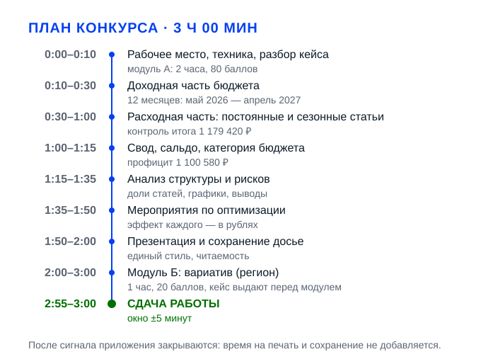
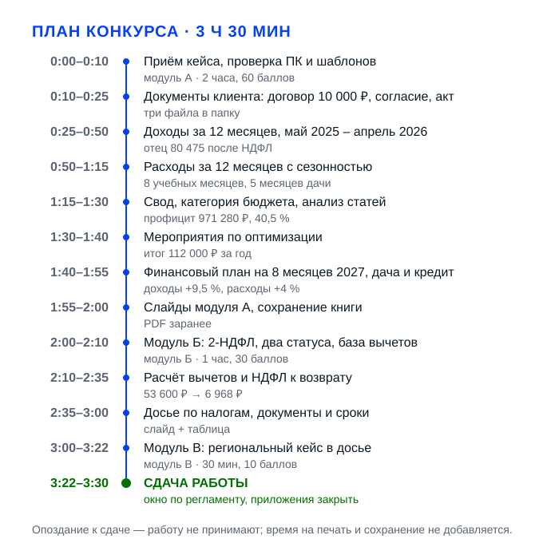
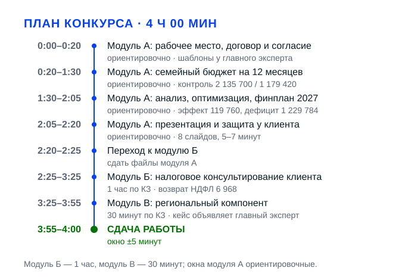

Финансовый консультант (Р)
Задания ниже — официальные файлы «Абилимпикс» (источник: abilympics-russia.ru), разложенные по категориям. Решения написаны по тексту задания, регламенту и критериям оценки; в них указано, что именно проверяет эксперт.
Школьник
14–16 лет, базовый уровень заданияВыдержка из официального конкурсного задания: страницы, относящиеся к категории «Школьник» (стр. 8–11 источника).
Пошаговое решение
Задание для школьников состоит из двух модулей и идёт 3 часа: модуль А «Семейный бюджет» — 2 часа и 80 баллов, модуль Б «Вариатив (региональный компонент)» — 1 час и 20 баллов. В модуле А вы работаете с кейсом семьи Титовых из пяти человек и должны составить бюджет на период с 01 мая 2026 года по 30 апреля 2027 года, определить его категорию, проанализировать статьи доходов и расходов, обосновать мероприятия по оптимизации и представить результат клиенту в виде досье: таблицы, аналитической записки и презентации. Стоимость услуг консультанта в кейсе — 10 000 рублей, данные клиент прислал заранее. Главная трудность не в арифметике, а в сезонности: часть расходов действует только с сентября по май, часть — с мая по сентябрь, а отдельные платежи бывают раз в год. Ниже — пошаговый порядок работы с точными цифрами кейса и контрольными суммами для самопроверки.

Задача 1. Подготовить рабочее место и разобрать кейс до первой цифрыМодуль А · 80 баллов (оценочный и измеримый)
Первые двадцать минут модуля А решают, успеете ли вы вообще: на весь семейный бюджет даётся 2 часа, и время на печать и сохранение файлов после сигнала не добавляется. Поэтому сначала приводим в порядок технику и файлы, а потом читаем кейс с карандашом в руке, выписывая каждую сумму с её периодичностью. Ошибка на этом этапе — потерянный месяц в расчёте, а не потерянное предложение в тексте.
Действие 1.1. Привести в порядок рабочее место и технику
Шаг 1.1.1
Садимся за стол и первым делом проверяем компьютер: включаем, ждём полной загрузки, открываем Excel, Word и PowerPoint по очереди, чтобы убедиться, что ни одна программа не зависла и не просит обновления. Монитор ставим так, чтобы до экрана было 60–70 сантиметров — при таком расстоянии глаз не устаёт за два часа, а мелкий шрифт в таблице остаётся читаемым. Клавиатуру кладём ровно, мышь — справа или слева, как вам удобнее, но так, чтобы провод не лежал под локтем, а вентиляционные отверстия системного блока и монитора были открыты и не накрыты бумагами.
Рабочее место входит в оценочный блок модуля А вместе с содержательной частью бюджета: эксперт фиксирует, проверено ли оборудование до старта и не пришлось ли искать неисправность в середине работы. Кроме того, по требованиям охраны труда суммарная работа за компьютером в конкурсный день не превышает 6 часов, а при близком экране к концу второго часа начинает болеть голова — и вы теряете темп там, где нужны силы на анализ.
Признаки готовности простые: все три программы открылись без ошибок, экран не даёт бликов от ламп, текст читается без наклона корпуса, провода не тянутся через стол, рядом с системным блоком нет стакана с водой. Если что-то не так — зовём технического эксперта сразу, а не после старта: на неисправной технике приступать к заданию запрещено.
Типичная ошибка — сесть и сразу начать считать, не проверив, что Excel открывается в нужной версии и что файл кейса читается. Потом выясняется, что таблица не сохраняется в нужную папку или что на экране стоит масштаб 60 %, при котором видно три строки из двадцати, — и на переделку уходит десять минут из ста двадцати.
Эксперт проходит по площадке в первые минуты модуля и отмечает, проверено ли оборудование, держится ли участник ровно и не отвлекается ли на посторонние предметы на столе.
Шаг 1.1.2
Отдельно проверяем печатающее устройство, если в досье нужны бумажные листы: отправляем на печать одну тестовую страницу с любым текстом и смотрим, как прошёл лист, не мнётся ли бумага и не закончился ли тонер. Проверяем, что в лотке лежит не один лист, а хотя бы пять, и что принтер стоит в зоне, где к нему можно подойти, не задев чужие столы и не перегнувшись через соседа.
Печать — самая частая точка потери времени на этой компетенции: по особым указаниям конкурсного задания после истечения времени модуля конкурсант закрывает все приложения, и время на печать и сохранение документов не добавляется. Пробный лист до старта занимает минуту, а поиск причины, по которой принтер молчит, в конце модуля — десять минут, которых уже нет.
Тестовая страница вышла целиком, текст пропечатан, бумага не смята, лоток заправлен. Если принтер выдал пустой лист — сразу говорим эксперту: тонер и бумага не ваша зона ответственности, но время на решение всё равно уходит у вас.
Ошибка — отложить печать «на потом» и обнаружить проблему за три минуты до сдачи. Вторая типичная — печатать досье целиком повторно из-за одной опечатки: на это уходит по листу на каждую правку, и бумага заканчивается в самый неподходящий момент.
Эксперт видит, когда именно участник печатает досье: спокойная печать в середине модуля читается как управление временем, паника у принтера в последние минуты — как его отсутствие.
Шаг 1.1.3
Создаём на рабочем столе папку с понятным именем, например «Titovy_2026-2027», и внутри — три файла: книгу Excel для бюджета, документ Word для выводов и презентацию PowerPoint на пять-семь слайдов. Книгу сразу сохраняем под именем, а не оставляем как «Книга1», и запоминаем путь, чтобы в конце модуля не искать файл по всему диску. Рядом кладём лист бумаги и ручку для черновых пометок — на бумаге быстрее считать сезонные месяцы, чем переключаться между листами.
Структура файлов — часть оценки организации работы: досье клиенту сдаётся как готовый электронный комплект, и если бюджет лежит в одном файле, презентация в другом, а выводы вообще не сохранены, эксперт не сможет оценить модуль целиком. Кроме того, привычка сохранять файл сразу спасает от потери работы при случайном закрытии окна, а автосохранение в чужих настройках может быть отключено.
В папке ровно три файла с осмысленными именами, книга Excel сохранена в формате .xlsx, презентация — в .pptx. Проверьте, что после сохранения файл открывается повторно и цифры на месте: это десять секунд, которые подтверждают, что работа не потеряна.
Частая ошибка — работать в одном документе, куда свалено всё: таблицы, текст и картинки. Второй промах — сохранить файл на флешку, которую потом требуется сдать, и забыть, что выносить материалы с площадки запрещено: всё остаётся на рабочем месте участника.
Эксперт смотрит на структуру досье при оценке результата модуля: три отдельных, аккуратно названных файла читаются как профессиональная работа, а «Книга1» и «Презентация2» — как черновик.
Действие 1.2. Разобрать кейс и выписать исходные данные
Шаг 1.2.1
Читаем кейс целиком, от первого абзаца до последнего, и сразу выписываем на бумагу три вещи: состав семьи из пяти человек, период планирования с 01 мая 2026 года по 30 апреля 2027 года и требование определить категорию бюджета. Период начинается в мае, а не в январе, поэтому горизонт — двенадцать месяцев с мая 2026 по апрель 2027, и это надо зафиксировать сразу, иначе весь расчёт поедет на год вперёд. Ниже подчёркиваем фразу о том, что стоимость услуг консультанта — 10 000 рублей: это условие договора, и в презентации его принято упоминать, когда говорим о ценности работы.
Даты — самый частый источник ошибок в этом модуле: если начать бюджет с января, все сезонные расходы встанут не в те месяцы, и анализ сезонности потеряет смысл. Эксперт проверяет соответствие периодов в таблице и в презентации, и расхождение в один месяц стоит баллов сразу в двух критериях — за расчёт и за аналитику.
Проверьте себя вопросом: в каком месяце начинаются дополнительные занятия и когда они заканчиваются? Если ответ «в сентябре начались, в мае закончились», а май 2026 года у вас включён в период, значит, календарь понят верно. Отметьте отдельно, что апрель 2027 года — последний месяц плана, и подарок отцу попадает именно в него.
Ошибка — читать кейс по диагонали и решить, что период «год» означает календарный год. Вторая — пропустить фразу про май как первый месяц и потерять сезонные расходы на дачу, которые как раз в мае и начинаются.
Эксперт сверяет даты в шапке таблицы с условием кейса, и это одна из первых проверок при оценке модуля А. Смотрит он и на то, выписано ли условие про стоимость услуг в 10 000 рублей: в презентации эта цифра показывает, что участник читал договорную часть задания, а не только цифры бюджета.
Шаг 1.2.2
Выписываем доходы отдельным блоком, каждый со своей периодичностью: заработная плата отца 92 500 рублей каждый месяц, заработная плата матери 65 000 рублей каждый месяц, пенсия дедушки 28 000 рублей каждый месяц, подработка отца по договору ГПХ по 18 000 рублей только в июне, июле и августе. Отдельно, сбоку, помечаем два дохода, которые в общий бюджет не попадают: стипендию сына 1 800 рублей, которую он оставляет себе на карманные расходы, и арендную плату 22 000 рублей, которую семья не тратит и хранит наличными дома.
Разделение доходов на «общие» и «личные» — это и есть определение категории бюджета и анализ статей, которые прямо требует задание модуля А. Если сложить всё подряд, доход вырастет на 23 800 рублей в месяц, и вывод о категории бюджета станет неверным, хотя арифметически сумма сойдётся.
Контрольная сумма по общему бюджету: 92 500 + 65 000 + 28 000 = 185 500 рублей в месяц, а в июне, июле и августе — 203 500 рублей. Проверьте, что в вашей таблице ровно эти два числа и что строка аренды стоит отдельно, а не внутри доходов, которые вы будете вычитать из расходов.
Ошибка — включить стипендию и аренду в доходную часть и получить «лишние» 23 800 рублей ежемесячно. Вторая, ещё более обидная — забыть подработку отца и потерять 54 000 рублей за год, то есть ровно ту сумму, которая объясняет летний профицит.
Эксперт смотрит, разделены ли доходы по источникам и отмечена ли их периодичность: именно по этой таблице видно, понимает ли участник, что такое регулярный и нерегулярный доход.
Шаг 1.2.3
Выписываем расходы в черновик, каждую строку с пометкой месяцев: питание и домашнее хозяйство 45 000 рублей постоянно, коммунальные услуги 7 100 рублей, интернет и мобильная связь 2 500 рублей, корм для кота и попугая 3 100 рублей, бензин 4 000 рублей, проездной сына 1 060 рублей, лекарства 1 500 рублей, одежда и обувь 10 000 рублей, развлечения дочери 500 рублей, салоны красоты 5 500 рублей. Рядом ставим сезонные строки: дополнительные занятия 11 000 рублей и обеды в университете 4 000 рублей с сентября по май, дача 5 000 рублей и проездной дедушки 1 400 рублей с мая по сентябрь.
Сезонность — главная содержательная ловушка кейса: половина расходов действует не круглый год, и именно на ней проверяется умение строить бюджет по месяцам, а не «в среднем». Задание требует проанализировать статьи доходов и расходов, а анализ без календаря платежей невозможен: вы просто не увидите, что август тяжелее февраля на 22 000 рублей.
После выписки должно получиться три группы: постоянные строки на все двенадцать месяцев, строки с девятью месяцами (сентябрь–май) и строки с пятью месяцами (май–сентябрь). Отдельно отметьте разовые платежи: 18 000 рублей на сборы в августе, 2 100 рублей налогов в ноябре, 4 200 рублей ОСАГО в декабре и подарки по 5 000 рублей.
Ошибка — свести все расходы в одну среднемесячную цифру и на этом остановиться: тогда пропадает вся аналитика, а месяцы с пиками остаются незамеченными. Вторая — забыть, что подарки бывают пять раз за год, а не раз в месяц, и завысить годовой расход на 55 000 рублей.
Эксперт смотрит на черновик с пометками сезонности: по нему видно, разбирался ли участник в кейсе или сразу начал набирать формулы наугад. Отдельно отмечается, выписаны ли подарки на день рождения с привязкой к конкретным месяцам — июль, сентябрь, октябрь, декабрь и апрель.
Задача 2. Собрать доходную часть бюджета по месяцамМодуль А · 80 баллов, блок «доходы»
Доходная часть — фундамент всего расчёта: если здесь потерять строку, дальше поедет и сальдо, и категория бюджета, и все выводы по оптимизации. Собираем таблицу так, чтобы каждый источник стоял отдельной строкой, а месяцы — отдельными столбцами с мая 2026 по апрель 2027. Только после этого считаем итоги и смотрим, где доход выше, а где ниже.
Действие 2.1. Разложить доходы по строкам и месяцам
Шаг 2.1.1
Строим каркас: в столбце A — названия источников, в столбцах B–M — двенадцать месяцев от мая 2026 до апреля 2027, в строке 2 подписываем месяцы словами, чтобы сезонные формулы читались человеком, а не только машиной. В первой строке таблицы оставляем место для шапки с названием семьи и периодом, чтобы распечатанный лист можно было опознать без пояснений. Ширину столбцов делаем одинаковой, числа выравниваем по правому краю, а суммы задаём форматом «# ##0 ₽», чтобы 185 500 читалось как 185 500, а не как 185500.
Таблица, в которой месяцы стоят столбцами, а статьи — строками, позволяет одним взглядом увидеть сезонность и сразу построить сводку по годам через СУММ по строке. Если сделать наоборот, месяцы строками, то итог по статье придётся считать вручную по столбцу, и вы потратите на это время, которого в модуле всего 2 часа.
Проверьте, что в строке месяцев ровно двенадцать ячеек, первая — «май 2026», последняя — «апрель 2027», и что ни один месяц не пропущен. Быстрый способ: выделите диапазон B2:M2 и посмотрите в строке состояния количество — должно быть 12.
Ошибка — начать с января 2026 года, потому что «год же». Вторая — сделать тринадцать столбцов, случайно добавив апрель дважды: тогда годовой итог вырастет на один месяц, а найти лишний столбец в готовой таблице уже сложно.
Эксперт открывает лист доходов первым и смотрит на шапку: подписаны ли месяцы, совпадает ли первый из них с датой начала планирования из кейса и нет ли тринадцатого столбца. Это занимает у него несколько секунд, а вам экономит переделку всей книги.
Шаг 2.1.2
Заполняем постоянные источники: в строке «Зарплата отца» ставим 92 500 в первый месяц, а дальше протягиваем формулу =$B$4 вправо до апреля — абсолютная ссылка на первый месяц держит сумму неизменной при копировании. Так же поступаем с зарплатой матери 65 000 и пенсией дедушки 28 000: одна цифра вводится руками, остальные одиннадцать получаются формулой. В строке «Итого доход общего бюджета» ставим =СУММ(B4:B6) и протягиваем до конца, чтобы каждая колонка складывала свои источники.
Абсолютная адресация — прямое требование к работе с электронными таблицами и одновременно защита от ошибки: если ввести сумму в каждую ячейку вручную, любая опечатка останется незамеченной, а формула с $B$4 всегда даёт одно и то же число. Итоговая строка нужна не для красоты: на неё опираются и сальдо, и график, и все выводы анализа.
Сумма в строке итогов за май должна быть 185 500 рублей, за июнь — 203 500. Проверьте любую ячейку: если щёлкнуть на апрель в строке отца, в строке формул должно стоять =$B$4, а не =$M$4 и не число 92500. Так же проверьте одну ячейку в строках матери и пенсии.
Ошибка — протянуть формулу без знака $ и получить сдвиг ссылок, из-за которого в декабре окажется зарплата из другого столбца. Вторая — вписать итог числом, а потом править источник и забыть пересчитать итог.
Эксперт проверяет формулы в двух-трёх ячейках: наличие абсолютных ссылок и функции СУММ показывает, что таблица живая, а не нарисованная числами. Отдельно отмечается, задан ли денежный формат — по нему видно, что участник работал с таблицей как с инструментом.
Шаг 2.1.3
Добавляем строку «Подработка отца по ГПХ» и заполняем её через условие: =ЕСЛИ(ИЛИ(B$2="июнь";B$2="июль";B$2="август");18000;0), где B$2 — подпись месяца в шапке. Протягиваем формулу на все двенадцать месяцев и получаем 18 000 ровно в трёх летних столбцах, а в остальных — нули. Нули не скрываем и не заменяем пустыми ячейками: именно они показывают, что месяц проверен, а не пропущен.
Подработка — единственный нерегулярный доход в кейсе, и именно она объясняет, почему летние месяцы выглядят лучше зимних. Если поставить 18 000 во все месяцы, годовой доход вырастет на 162 000 рублей и вывод о профиците станет завышенным, а анализ сезонности потеряет смысл полностью.
В строке подработки должны стоять три числа по 18 000 — в июне, июле и августе, и девять нулей. Сложите строку: итог равен 54 000 рублей за год. Это же число должно появиться в сводке по статье, если вы её считаете отдельно.
Ошибка — поставить подработку в май и сентябрь «рядом с летом»: в кейсе указаны только июнь, июль и август, и лишние 36 000 рублей исказят и сальдо, и выводы. Вторая — спрятать нули фильтром и потом не понять, где месяц пропущен.
Эксперт смотрит на сезонную строку как на индикатор внимательности: три значения и девять нулей — признак того, что участник прочитал условие, а не усреднил доход.
Действие 2.2. Отделить доходы, которые не идут в общий бюджет
Шаг 2.2.1
Ниже основной таблицы, через пустую строку, делаем блок «Доходы вне общего бюджета»: стипендия сына 1 800 рублей каждый месяц и арендная плата 22 000 рублей каждый месяц. Этот блок оформляем другим цветом заливки, например светло-серым, и подписываем прямым текстом: «не участвует в текущих расходах семьи». Итог по блоку считаем отдельной формулой, чтобы он не попадал в строку «Итого доход общего бюджета».
Кейс прямо говорит: стипендию сын оставляет себе на карманные расходы, а деньги от аренды семья не тратит и хранит наличными дома. Значит, это не доход текущего потребления, а потенциальные накопления, и смешивать их с зарплатой нельзя — иначе категория бюджета будет определена неверно, а рекомендации по оптимизации потеряют опору.
Сумма блока за месяц — 23 800 рублей, за год — 285 600 рублей. Проверьте, что эта цифра нигде не прибавилась к 185 500: в строке итога общего бюджета должно остаться 185 500, а в июне, июле и августе — 203 500.
Ошибка — сложить всё в один итог «доход семьи» и получить 209 300 рублей в обычный месяц. Вторая, не менее частая — вообще не заметить аренду и лишить себя главного аргумента в разделе оптимизации, где эти 264 000 рублей за год можно превратить в работающий резерв.
Эксперт проверяет, выделены ли доходы вне общего бюджета отдельным блоком: это одно из наблюдений, по которым видно понимание структуры семейного бюджета.
Шаг 2.2.2
Считаем накопления от аренды за год: 22 000 × 12 = 264 000 рублей, и записываем это отдельной строкой «Накопления наличными» с пометкой «хранятся дома, доходности не приносят». Рядом оставляем место для второй строки — «Остаток общего бюджета за год», которую заполним после расчётной части, чтобы в одном месте были видны оба источника свободных средств. Так у вас сразу появляется заготовка для раздела оптимизации, где эти деньги нужно будет куда-то определить.
Наличные дома — это не накопление в финансовом смысле: они не защищены от инфляции, не приносят процентов и физически уязвимы. Задание требует разработать мероприятия по оптимизации, и перенос этих 264 000 рублей на вклад — самое очевидное и самое обоснованное мероприятие, которое можно посчитать в рублях.
Проверьте арифметику двумя способами: 22 000 × 12 = 264 000 и, если считать по кварталам, 66 000 × 4 = 264 000. Совпадение подтверждает, что строка аренды стоит во всех двенадцати месяцах, включая май 2026 и апрель 2027.
Ошибка — посчитать аренду за одиннадцать месяцев, забыв, что период начинается в мае, и потерять 22 000 рублей. Вторая — назвать эти деньги «доходом» в презентации, не пояснив, что они не расходуются: клиент решит, что бюджет сходится за счёт аренды.
Эксперт смотрит, появилась ли в работе отдельная строка накоплений: она показывает, что участник видит разницу между доходом и свободными средствами семьи.
Действие 2.3. Проверить доходную часть до перехода к расходам
Шаг 2.3.1
Считаем контрольные суммы: годовой доход общего бюджета =СУММ(B7:M7) должен дать 2 280 000 рублей, среднемесячный — =СРЗНАЧ(B7:M7) = 190 000 рублей. Проверяем и по источникам: отец 92 500 × 12 = 1 110 000, мать 65 000 × 12 = 780 000, пенсия 28 000 × 12 = 336 000, подработка 54 000. Складываем четыре числа на бумаге и сверяем с таблицей — так вы поймаете ошибку, которую не видно внутри одной формулы.
Двойная проверка — итог по месяцам и итог по источникам — единственный способ убедиться, что таблица не содержит скрытой ошибки: если суммы совпали, значит, ни одна строка не потеряна и ни одна не посчитана дважды. Именно этот контроль отличает расчёт от набора цифр, и на нём держится критерий за правильность расчётов модуля А.
Четыре слагаемых дают ровно 2 280 000, и это же число стоит в правом нижнем углу доходного блока. Если расхождение есть, ищите его по столбцам: сначала сравните итог за май (185 500) и за июнь (203 500) — чаще всего ошибка прячется именно в сезонной строке.
Ошибка — проверять только общий итог и не проверять структуру: таблица может сойтись по году, но при этом содержать перепутанные месяцы. Вторая — считать среднее как сумму, делённую на одиннадцать, «потому что год неполный»: период полный, двенадцать месяцев.
Эксперт может попросить назвать годовой доход словами, без таблицы. Если участник отвечает 2 280 000 сразу, видно, что расчёт он понимает, а не просто нажал кнопку суммы.
Шаг 2.3.2
Оформляем доходный блок так, чтобы его можно было показать клиенту: заголовок «Доходы семьи Титовых, май 2026 — апрель 2027», строка «Всего» жирным шрифтом, отрицательных значений нет, все суммы в одной валюте. Добавляем условное форматирование на строку итогов: например, заливка голубым для месяцев, где доход выше 200 000, — так летние месяцы сразу видны на листе. Под таблицей одной строкой подписываем источник данных: «по данным кейса, присланным клиентом».
Досье клиенту — это документ, который читает человек, а не только эксперт: подписи, единый формат и выделенные итоги делают таблицу понятной без объяснений вслух. Условное форматирование здесь не украшение, а инструмент анализа: оно мгновенно показывает, что высокий доход держится только три месяца в году.
Откройте лист и посмотрите на него как на картинку: видно ли, где лето, а где зима, читается ли строка итогов, нет ли обрезанных чисел в узких столбцах. Если число превратилось в «#####», столбец надо расширить.
Ошибка — оставить таблицу в «техническом» виде с десятью знаками после запятой и без подписей: клиент не поймёт, откуда взялись цифры. Вторая — раскрасить всё в разные цвета, из-за чего выделение перестаёт что-либо означать.
Эксперт оценивает читаемость таблиц отдельно от правильности: аккуратный лист с подписями и выделенными итогами даёт баллы и за оформление, и за аналитику.
Шаг 2.3.3
Сохраняем книгу, закрываем её и открываем заново — это проверка, что файл записался и формулы не превратились в значения. Затем делаем копию листа доходов под именем «Доходы_архив» и прячем её: если дальше вы случайно сдвинете строку или перезапишете формулу, у вас останется точка возврата. На этом доходная часть закрыта, и переходить к расходам можно только с уверенностью, что база верна.
Копия листа — страховка на случай правок в расчётной части: в модуле А придётся несколько раз менять структуру, и одна неосторожная вставка строки способна порушить ссылки. Время на копию — двадцать секунд, а восстановление перепутанной таблицы занимает десять минут, которых в двух часах модуля просто нет.
После повторного открытия все итоги на месте: 185 500 за май, 203 500 за июнь, 2 280 000 за год, среднее 190 000. На скрытом листе «Доходы_архив» стоят те же числа — если они совпали, доходная часть закрыта и можно переходить к расходам.
Ошибка — не сохранять книгу после каждого блока и потерять доходную часть при зависании программы: восстановить двадцать минут работы по памяти невозможно. Вторая — держать копию листа рядом с расчётной таблицей, где её легко случайно изменить или удалить.
Эксперт вправе подойти и посмотреть, сохраняется ли работа по ходу модуля: это часть оценки организации рабочего процесса. Отдельно фиксируется, остались ли на столе черновики с исходными суммами — по ним видно, сверялся ли участник с кейсом.
Задача 3. Собрать расходную часть бюджета по статьям и месяцамМодуль А · 80 баллов, блок «расходы»
Расходы в этом кейсе устроены сложнее доходов: часть строк действует круглый год, часть только с сентября по май, часть с мая по сентябрь, а отдельные платежи бывают один раз за год. Задача — разложить их по месяцам так, чтобы каждый платёж попал ровно в свой столбец и ни один не задвоился. Именно здесь видно, умеет ли участник строить бюджет во времени, а не «в среднем за месяц».
Действие 3.1. Разложить постоянные ежемесячные расходы
Шаг 3.1.1
На новом листе «Расходы» повторяем каркас доходного листа: столбцы B–M с теми же месяцами от мая 2026 до апреля 2027, чтобы потом можно было вычитать одно из другого без сдвигов. В строках перечисляем десять постоянных статей: питание и домашнее хозяйство 45 000, коммунальные услуги 7 100, интернет и мобильная связь 2 500, корм для кота и попугая 3 100, бензин 4 000, проездной сына 1 060, лекарства 1 500, одежда и обувь 10 000, развлечения дочери 500, салоны красоты 5 500. Каждую сумму вводим один раз в майский столбец и протягиваем вправо абсолютной ссылкой.
Десять постоянных строк дают 80 260 рублей в месяц — это база, от которой считаются все сезонные надбавки. Если хотя бы одну строку потерять, например корм для животных на 3 100 или проездной сына на 1 060, сальдо по каждому месяцу вырастет, и вывод о категории бюджета сдвинется, хотя на глаз таблица будет выглядеть нормально.
Сложите десять чисел на бумаге: 45 000 + 7 100 + 2 500 + 3 100 + 4 000 + 1 060 + 1 500 + 10 000 + 500 + 5 500 = 80 260 рублей. В строке «Постоянные расходы, всего» за май должно стоять именно это число, и оно же должно повторяться во всех двенадцати столбцах без изменений.
Ошибка — объединить мелкие строки в «прочее» и потерять 1 060 или 500 рублей: именно мелкие платежи чаще всего забывают, а в сумме за год они дают 18 720 рублей. Вторая — перепутать интернет и мобильную связь (2 500 на всех членов семьи) с платежом на одного человека и умножить сумму на пять.
Эксперт сверяет количество строк в расходной части с кейсом: десять постоянных статей — это тот минимум, ниже которого разговор о полноте бюджета уже не идёт.
Шаг 3.1.2
Проверяем две статьи, где легко ошибиться в трактовке. Одежда и обувь — 10 000 рублей каждый месяц, и это постоянная строка, а августовские 18 000 на сборы детей в школу и университет идут сверху, отдельной разовой строкой. Корм для домашних питомцев 3 100 рублей относится ко всей семье сразу, потому что в доме кот породы мейн-кун и волнистый попугай, и делить эту сумму на двух животных не нужно — в кейсе она уже общая.
Разделение постоянного и разового платежа — ключ к правильному августу: если вписать 28 000 в постоянную строку, то сборы в школу попадут во все двенадцать месяцев и годовой расход вырастет на 198 000 рублей. Анализ после такой ошибки показывает катастрофу, которой в кейсе нет, и все мероприятия по оптимизации окажутся направлены не туда.
В августе строка «Одежда и обувь» должна остаться 10 000, а разовая строка «Сборы в школу и университет» — 18 000 отдельно. Проверьте сумму за август: она должна быть больше июльской ровно на 18 000 плюс сезонные надбавки.
Ошибка — вписать 28 000 в август и протянуть на весь год. Вторая — забыть про корм для животных, решив, что «это мелочь»: 3 100 рублей в месяц превращаются в 37 200 рублей за год, и это уже заметная статья.
Эксперт смотрит, разделены ли постоянные и разовые расходы: по этой границе видно, понимает ли участник природу платежа, а не просто копирует цифры из кейса.
Шаг 3.1.3
Отдельно проверяем статью «Салоны красоты и косметика» — 5 500 рублей ежемесячно: это не обязательный расход, но он есть в кейсе, и убирать его из бюджета нельзя, иначе расчёт перестанет соответствовать данным клиента. Такие «необязательные, но постоянные» строки помечаем, например, жёлтой заливкой, чтобы в разделе оптимизации вернуться к ним с готовым списком кандидатов на сокращение. То же самое делаем с развлечениями дочери на 500 рублей — их трогать не нужно, но видеть в структуре расходов необходимо.
Оптимизация не означает «урезать всё»: задание требует разработать и обосновать мероприятия, а обоснование возможно только тогда, когда видно, какие статьи обязательные, какие необязательные и насколько болезненно сокращение каждой. Пометки на листе экономят вам двадцать минут в конце модуля, когда до сдачи остаётся мало времени.
Жёлтым помечены ровно те строки, которые можно обсуждать с клиентом: салоны 5 500, развлечения 500, одежда 10 000. Обязательные строки — питание, ЖКУ, связь, лекарства, транспорт, корм, проездной — остаются без пометок, и это ваш аргумент в презентации.
Ошибка — сразу вычеркнуть салоны красоты из бюджета и показать «оптимизированный» расчёт без них: клиент не давал согласия на такую экономию, и цифра перестаёт быть его бюджетом. Вторая — пометить всё подряд, из-за чего пометки теряют смысл.
Эксперт смотрит на обоснованность рекомендаций: если предложено сократить обязательные расходы, это снижает оценку, потому что такой совет клиенту бесполезен.
Действие 3.2. Внести сезонные и разовые платежи
Шаг 3.2.1
Добавляем строки с ограничением по месяцам: дополнительные занятия двоих детей 11 000 рублей и обеды в университете 4 000 рублей действуют с сентября по май включительно. Записываем формулу =ЕСЛИ(ИЛИ(B$2="сентябрь";B$2="октябрь";B$2="ноябрь";B$2="декабрь";B$2="январь";B$2="февраль";B$2="март";B$2="апрель";B$2="май 2026");15000;0) и протягиваем на все столбцы — получаем девять месяцев по 15 000 и три летних нуля. Сумма за год по этим двум строкам — 135 000 рублей.
Сентябрь–май — это девять месяцев внутри нашего периода, и сюда попадает май 2026 года, но не попадает май 2027-го, потому что план заканчивается 30 апреля. Если ошибиться на месяц, расхождение составит 15 000 рублей, а главное — сдвинется картина летних месяцев, на которой строится вся аналитика сезонности.
В строке должно быть ровно девять значений по 15 000: май 2026, сентябрь, октябрь, ноябрь, декабрь, январь, февраль, март, апрель 2027. Июнь, июль и август — нули. Проверьте итог по строке: 135 000 рублей.
Ошибка — включить август, потому что «школа начинается soon», и получить лишние 15 000. Вторая — забыть май 2026 года и потерять 15 000 в первом месяце плана, из-за чего май покажется легче, чем он есть.
Эксперт проверяет границы сезонного интервала по крайним месяцам: май 2026 и апрель 2027 должны быть с начислением, а летние месяцы — без него. Такой проверки достаточно, чтобы за минуту понять, разобрался ли участник с периодом планирования.
Шаг 3.2.2
Следующая пара строк — дачные: аренда дачи 5 000 рублей и проездной билет дедушки 1 400 рублей, обе с мая по сентябрь включительно. Ставим те же 5 000 в майский столбец и протягиваем на июнь, июль, август и сентябрь, а с октября по апрель оставляем нули. В сумме за год это 32 000 рублей по двум строкам, и они попадают в те же пять месяцев, что и первые два летних платежа.
Май–сентябрь — пять месяцев, и это единственный интервал в кейсе, который начинается с первого месяца плана, поэтому ошибка здесь видна сразу: если май окажется без дачи, значит, участник считал сезон «с июня». Дачные расходы — самая понятная иллюстрация сезонности для клиента, и именно её удобно показывать на слайде.
В пяти столбцах — май, июнь, июль, август, сентябрь — стоят 5 000 и 1 400, в остальных семи нули. Итог по двум строкам за год: 5 000 × 5 + 1 400 × 5 = 32 000 рублей, сверьтесь с этим числом и с итогом по столбцу «За год».
Ошибка — растянуть дачу на весь год и получить 60 000 вместо 25 000 рублей. Вторая — оставить проездной дедушки без сезонности и начислить 16 800 рублей вместо 7 000: разница в 9 800 рублей искажает осенние месяцы.
Эксперт смотрит на совпадение интервалов: дача и проездной должны стоять в одних и тех же пяти месяцах, иначе логика бюджета нарушена и сезонность посчитана наполовину.
Шаг 3.2.3
Вносим разовые платежи отдельным блоком под сезонными строками: в августе 18 000 рублей на сборы детей в школу и университет, в ноябре 2 100 рублей налога на имущество и транспортного налога со сроком уплаты до 1 декабря, в декабре 4 200 рублей за полис ОСАГО. Подарки ко дню рождения вносим пятью отдельными суммами по 5 000 рублей: в июле — дедушке, в сентябре — дочери, в октябре — матери, в декабре — сыну, в апреле 2027 года — отцу. Каждый платёж стоит в своём столбце, остальные ячейки блока пустые или нулевые.
Разовые платежи — причина кассовых пиков: август тяжелее июля на 18 000, декабрь — на 4 200 плюс подарок, ноябрь — на 2 100. Именно эти месяцы чаще всего становятся аргументом в рекомендациях о резервном фонде, и именно их пропуск делает анализ поверхностным. Подарки в кейсе привязаны к конкретным людям и месяцам, поэтому «5 000 каждый месяц» — грубая ошибка.
Проверьте пять подарков по месяцам: июль, сентябрь, октябрь, декабрь, апрель. Итого за год — 25 000 рублей, а не 60 000. Август должен быть больше июля на 18 000 плюс разницу сезонных строк, ноябрь — на 2 100, декабрь — на 4 200 и 5 000 одновременно.
Ошибка — поставить подарки ежемесячно и завысить год на 35 000 рублей. Вторая — забыть апрель 2027 года, решив, что раз день рождения отца в апреле, а план заканчивается, то платёж не нужен: 30 апреля — последний день периода, и подарок в него попадает.
Эксперт проверяет разовые платежи по календарю: пять подарков, налоги в ноябре, ОСАГО в декабре, сборы в августе — это шесть точек, которые видны в таблице сразу.
Действие 3.3. Свести расходы по месяцам и проверить итоги
Шаг 3.3.1
Под всеми строками ставим строку «Итого расходов за месяц» с формулой =СУММ(B4:B25) и протягиваем её по всем двенадцати столбцам, а справа добавляем столбец «За год» с формулой =СУММ(B4:M4) по каждой статье. Получаем двусторонний свод: по месяцам и по статьям. Дальше проверяем главное число — общий расход за год должен составить 1 179 420 рублей, а средний месячный — 98 285 рублей.
Двусторонний свод — это и есть готовый семейный бюджет, который требуется как результат модуля А: клиенту нужно видеть и «сколько в месяц», и «сколько за год по статье». Без столбца «За год» не получится посчитать долю каждой статьи, а без доли не будет анализа структуры расходов, за который дают баллы.
Сверьте три контрольные точки: май 2026 — 101 660, июнь — 86 660, декабрь — 104 460 рублей. Годовой итог — 1 179 420 рублей, среднемесячный расход — 98 285 рублей. Если хотя бы одно число не совпало, ищите ошибку в сезонных строках, а не в формулах суммы.
Ошибка — протянуть сумму только по видимым строкам и не захватить разовые платежи, которые стоят ниже блока сезонных. Вторая — посчитать год как «средний месяц × 12» и потерять все пики: 98 285 × 12 = 1 179 420, но эта цифра получается только после правильного помесячного расчёта.
Эксперт сверяет итог по месяцам с итогом по статьям: если два способа дают одно число, значит, таблица построена корректно. Отдельно он отмечает, есть ли столбец «За год» — без него анализ структуры расходов сделать невозможно.
Шаг 3.3.2
Строим мини-свод по группам расходов, чтобы сразу видеть структуру: обязательные платежи (питание, ЖКУ, связь, лекарства, транспорт, корм, проездной) — 65 260 рублей в месяц, обязательные сезонные (занятия и обеды) — 15 000 в учебные месяцы, необязательные (одежда, салоны, развлечения) — 16 000 рублей в месяц. Каждую группу считаем через СУММ по несмежным диапазонам, а рядом ставим формулу доли: =B30/$B$26, где B30 — группа, а B26 — итог месяца, с форматом «процент».
Группировка расходов на обязательные и необязательные — основа любого разговора об оптимизации: клиенту важно понимать, что 65 260 рублей из 80 260 он не может не платить, а значит, экономить придётся на оставшихся 15 000. Доли в процентах делают этот аргумент наглядным и превращают таблицу в аналитический инструмент.
Сумма трёх групп должна равняться 96 260 рублей плюс сезонные надбавки, а вместе с ними — итогу месяца. Доли по группам в учебном месяце: обязательные около 65 %, необязательные около 16 %, остальное — сезонные. Если сумма долей не даёт 100 %, значит, какая-то строка не попала ни в одну группу.
Ошибка — отнести салоны красоты к обязательным расходам и потерять главный резерв экономии. Вторая — считать доли от годового итога, а потом сравнивать их с месячными суммами: проценты сойдутся, а выводы будут неверными.
Эксперт смотрит на наличие группировки: разделение на обязательные и необязательные расходы показывает, что участник думает как консультант, а не как калькулятор.
Шаг 3.3.3
Делаем финальную сверку расходной части перед анализом: выделяем весь блок чисел и смотрим в строку состояния — количество ячеек должно совпадать с числом строк, умноженным на двенадцать, а сумма — с 1 179 420 рублями. Затем проверяем, что ни в одной ячейке нет текста вместо числа: иногда вместо нуля случайно вводится «-» или «нет», и формула суммы молча пропускает такую ячейку, выдавая правдоподобный, но неверный итог.
Текстовая ячейка в числовом блоке — самая коварная ошибка в таблицах: сумма считается, ошибки не выдаёт, и расхождение обнаруживается только при сверке с ручным счётом. На конкурсе это стоит баллов за правильность расчёта, а на защите вызывает вопрос, на который нечего ответить.
Все ячейки числовые, нули — настоящие нули, а не прочерки. Сумма выделенного блока в строке состояния равна 1 179 420, среднее — 98 285. Проверьте условным форматированием: правило «выделить текстовые ячейки» покажет их мгновенно.
Ошибка — оставить в таблице прочерки и потом объяснять расхождение в 15 000 рублей «технической погрешностью». Вторая — считать, что раз итог сходится с ожиданием, то и структура верна: перестановка двух статей даёт тот же итог при полностью неверном анализе.
Эксперт может выборочно проверить несколько ячеек на числовой формат: это быстрый способ понять, насколько аккуратно сделана работа. Он же смотрит, не осталось ли в таблице ячеек с прочерками, которые выглядят как данные, но в расчёте не участвуют.
Задача 4. Определить категорию бюджета и проанализировать статьиМодуль А · 80 баллов, блок анализа
Расчёт без вывода — это половина работы: задание модуля А прямо требует определить категорию бюджета и проанализировать статьи доходов и расходов. Здесь мы считаем сальдо по каждому месяцу, называем категорию с обоснованием, разбираем структуру доходов и расходов в процентах и формулируем выводы, которые потом станут основой презентации. Именно этот блок отличает консультанта от человека, который просто сложил числа.
Действие 4.1. Посчитать сальдо и определить категорию бюджета
Шаг 4.1.1
На листе «Свод» ставим три строки: «Доходы» (ссылка на итог доходного листа), «Расходы» (ссылка на итог расходного) и «Сальдо» с формулой =B5-B6. Протягиваем по всем двенадцати столбцам и добавляем столбец «За год». Получаем 2 280 000 рублей дохода, 1 179 420 рублей расхода и 1 100 580 рублей сальдо за год, то есть доход превышает расход почти в два раза — на 48,3 %.
Сальдо — центральная цифра всего модуля: от неё зависит и категория бюджета, и вывод о платёжеспособности семьи, и рекомендации по накоплениям. Считать её надо по месяцам, а не только за год, потому что годовой профицит может скрывать отдельные дефицитные месяцы, а именно они создают кассовые разрывы.
Проверьте три числа: 2 280 000, 1 179 420 и 1 100 580. Сальдо должно быть равно разности первых двух ровно до рубля: 2 280 000 − 1 179 420 = 1 100 580. Если появилась разница, значит, где-то в свод попала не та строка.
Ошибка — вычитать расходы из дохода вместе с арендой и стипендией и получить сальдо 1 386 180 рублей: цифра выглядит лучше, но она неверна, потому что 285 600 рублей — не доход текущего потребления. Вторая — считать сальдо только за год и не увидеть помесячную картину.
Эксперт проверяет, что сальдо посчитано формулой, а не вписано числом: в этом видно, что участник строит модель, а не подгоняет ответ под ожидаемый. Он же смотрит, подписаны ли строки «Доходы», «Расходы» и «Сальдо» — по подписям видно, понимает ли участник смысл разности.
Шаг 4.1.2
Смотрим сальдо по каждому месяцу и находим границы: минимальное значение — 78 840 рублей в сентябре, максимальное — 116 840 рублей в июне. Проверяем, нет ли отрицательных значений: если есть, значит, в этом месяце расходы превысили доходы и семья должна была бы брать деньги из накоплений. Дополнительно считаем коэффициент покрытия расходов доходом =B5/B6 и видим значение около 1,93 — доход почти вдвое больше расхода.
Помесячная проверка показывает, что бюджет устойчив в любом месяце года: даже в самый тяжёлый сентябрь, где сходятся занятия, обеды и подарок дочери, остаётся 78 840 рублей свободных средств. Это важный вывод для клиента, и его нужно сформулировать словами, а не оставить только в таблице.
Ни один месяц не даёт отрицательного сальдо, минимум 78 840 в сентябре, максимум 116 840 в июне. Коэффициент покрытия больше единицы во всех столбцах — проверьте это условным форматированием «меньше 1 — красным».
Ошибка — не проверять месяцы и пропустить дефицит, который появился из-за лишней сезонной строки. Вторая — назвать минимальное сальдо «проблемой» и предложить сокращать расходы там, где семья и так справляется: такой совет снижает оценку за обоснованность.
Эксперт смотрит, названы ли самые напряжённые месяцы: умение найти пик расходов — прямой показатель аналитического мышления. Если участник говорит только о годовом профиците и не упоминает сентябрь, значит, помесячную картину он построил, но не прочитал.
Шаг 4.1.3
Формулируем категорию бюджета письменно, одним абзацем: «Бюджет семьи Титовых на период с 01.05.2026 по 30.04.2027 является профицитным: доходы 2 280 000 рублей превышают расходы 1 179 420 рублей на 1 100 580 рублей, или на 48,3 %. Бюджет остаётся профицитным в каждом из двенадцати месяцев, минимальный профицит — 78 840 рублей в сентябре». Такой формулировки достаточно, чтобы эксперт увидел и расчёт, и понимание термина.
Категория бюджета — отдельный критерий: различают сбалансированный, дефицитный и профицитный бюджет, и определять её нужно не «на глаз», а через знак сальдо. Профицит в 48,3 % — это не повод радоваться, а сигнал, что деньги лежат без дела: 264 000 рублей наличными дома и 1 100 580 рублей свободного остатка не работают и обесцениваются вместе с инфляцией.
Проверьте формулировку на полноту: в ней есть период, три суммы, знак сальдо, процент и вывод о каждом месяце. Если из абзаца убрать таблицу, он всё равно должен читаться как законченный вывод — именно так его и будут оценивать.
Ошибка — написать просто «бюджет профицитный» без цифр: это утверждение без доказательства. Вторая — назвать бюджет сбалансированным, потому что «доходы и расходы посчитаны»: сбалансированный бюджет — это равенство, а здесь разница больше миллиона рублей.
Эксперт ищет в работе именно словесный вывод о категории: он вынесен в отдельный критерий, и без него балл за анализ не ставится, даже если таблица идеальна.
Действие 4.2. Разобрать структуру доходов и расходов
Шаг 4.2.1
Считаем структуру доходов: зарплата отца 1 110 000 рублей — 48,7 %, зарплата матери 780 000 — 34,2 %, пенсия дедушки 336 000 — 14,7 %, подработка отца 54 000 — 2,4 %. Строим рядом круговую диаграмму по этим четырём значениям, подписываем проценты и добавляем строку вывода: «82,9 % дохода семьи — заработная плата двух работающих взрослых». Отдельно отмечаем, что стипендия и аренда в структуру не входят, потому что не поступают в общий бюджет.
Структура доходов отвечает на вопрос об устойчивости: почти 83 % дохода зависит от трудоспособности двух человек, а пенсия дедушки в 72 года — единственный источник, не связанный с работой. Это наблюдение станет основой для рекомендации о страховании и резервном фонде, без него предложения выглядят как общие слова.
Сумма процентов должна дать 100 %, а сумма рублей — 2 280 000. Проверьте каждую долю делением: 1 110 000 / 2 280 000 = 0,487, 780 000 / 2 280 000 = 0,342. Диаграмма при этом должна показывать четыре сектора, а не три и не пять.
Ошибка — включить в диаграмму аренду и стипендию и получить 2 565 600 рублей «дохода», после чего все доли поедут. Вторая — подписать проценты вручную, округлив так, что сумма даёт 99 % или 101 %, и потерять балл за аккуратность расчёта.
Эксперт смотрит на диаграмму и на подпись под ней: цифры должны совпадать с таблицей, иначе возникает вопрос, из какого расчёта взята картинка. Он же проверяет, есть ли рядом текстовый вывод про 82,9 % заработной платы — без него диаграмма остаётся украшением.
Шаг 4.2.2
Считаем структуру расходов по годовым суммам: питание и домашнее хозяйство 540 000 рублей — 45,8 %, одежда и обувь вместе со сборами 138 000 — 11,7 %, дополнительные занятия 99 000 — 8,4 %, ЖКУ 85 200 — 7,2 %, салоны красоты 66 000 — 5,6 %, бензин 48 000 — 4,1 %, корм 37 200 — 3,2 %, обеды 36 000 — 3,1 %, связь 30 000 — 2,5 %, дача и подарки по 25 000 — по 2,1 %. Остальные статьи — лекарства, проездные, развлечения, налоги и ОСАГО — вместе дают менее 4 %.
Структура расходов показывает, где реально лежат деньги: почти половина бюджета уходит на питание и хозяйство, и любая рекомендация по экономии должна начинаться с этой статьи, а не с мелочей. Одновременно видно, что необязательные расходы — салоны 66 000 и развлечения 6 000 — занимают 6,1 %, и именно они являются законным резервом оптимизации.
Проверьте две вещи: сумма всех годовых статей равна 1 179 420 рублям, а сумма процентов — 100 %. Крупнейшая статья 45,8 % — это нормальная доля для семьи из пяти человек, но она означает, что экономия на питании даёт наибольший эффект в рублях.
Ошибка — считать проценты от месячного итога, а потом применять их к годовому: доли совпадут только случайно. Вторая — не отделить разовые платежи и получить искажённую картину по одежде, где 18 000 сборов сливаются с ежемесячными 10 000.
Эксперт сверяет процент с суммой: если в таблице 45,8 %, а в тексте написано «почти половина», это правильная формулировка, а вот «треть» — уже ошибка.
Шаг 4.2.3
Описываем сезонность словами и цифрами: доход выше в июне, июле и августе на 18 000 рублей в месяц за счёт подработки, расход выше в августе на 18 000 за счёт сборов, в декабре — на 4 200 и 5 000, в сентябре — на подарок дочери и старт занятий. Строим график по месяцам: линия дохода, линия расхода и закрашенная область сальдо между ними. На графике сразу видно, что самый спокойный месяц — июнь, а самый напряжённый — сентябрь.
Сезонность — это то, что клиент чувствует, но не может посчитать: он знает, что «к сентябрю всегда тяжело», а вы показываете, что разница между июнем и сентябрём составляет 38 000 рублей свободных средств. Такой график в презентации заменяет три абзаца текста и делает рекомендации по резерву очевидными.
На графике двенадцать точек по каждому показателю, подписи месяцев по оси X, суммы по оси Y. Проверьте крайние значения: июнь — 116 840, сентябрь — 78 840 рублей сальдо. Если график показывает другой размах, значит, в данные попала ошибка.
Ошибка — построить график по средним значениям и получить ровную линию без сезонности, хотя именно она и есть предмет анализа. Вторая — сделать три графика на одном слайде с разными масштабами, из-за чего сравнение доходов и расходов становится невозможным.
Эксперт смотрит на график как на инструмент: подписанные оси и читаемый масштаб дают баллы за визуализацию, а «красивая картинка» без подписей — нет. Отдельно отмечается, есть ли на графике подпись периода, ведь досье потом читает клиент.
Действие 4.3. Сформулировать выводы и риски для клиента
Шаг 4.3.1
Пишем в Word четыре вывода, каждый с цифрой: бюджет профицитный, профицит 1 100 580 рублей за год; доходы на 82,9 % состоят из двух зарплат, поэтому семья уязвима при потере работы одного из взрослых; почти половина расходов — 45,8 % — уходит на питание и хозяйство, то есть экономить нужно начинать с этой статьи; 264 000 рублей арендных денег лежат наличными дома и не приносят дохода. Каждый вывод оформляем отдельным абзацем, а не строкой в списке.
Выводы — это то, что клиент унесёт с консультации: таблицу он забудет, а четыре числа запомнит. Задание требует представить результаты клиенту, и представление начинается именно с выводов, а расчёт идёт приложением. Такой порядок показывает, что участник понимает адресата документа.
Проверьте каждый вывод на проверяемость: к нему должна находиться цифра в таблице за десять секунд. Если вывод звучит как «расходы высокие», его нельзя проверить, и он не годится — нужно «45,8 % расходов — питание и хозяйство».
Ошибка — написать выводы общими фразами про важность финансовой грамотности. Вторая — перепутать адресата и написать текст для эксперта, с формулами и ссылками на ячейки: клиенту нужен результат, а не методика.
Эксперт читает выводы первыми: если в них есть цифры и они совпадают с таблицей, работа воспринимается как цельная, даже если оформление где-то хромает.
Шаг 4.3.2
Описываем риски, с которыми семья столкнётся при таком бюджете: наличные 264 000 рублей дома обесцениваются при инфляции и физически уязвимы; резервного фонда в явном виде нет, хотя профицит позволяет его создать; 82,9 % дохода зависит от двух работающих взрослых, а отец берёт подработку только летом; расходы на лекарства 1 500 рублей в месяц не покрывают серьёзного лечения, а полис ОСАГО покрывает только ответственность водителя, но не жизнь и здоровье. Каждый риск формулируем как «что может случиться — чем это грозит бюджету».
Анализ рисков — это то, за что клиент платит 10 000 рублей консультанту: он сам видит цифры, но не видит их последствий. Риски дают логичный переход к разделу оптимизации: каждое мероприятие закрывает конкретный риск, и рекомендации перестают быть набором общих советов.
Проверьте, что каждый риск опирается на цифру из бюджета и что ни один не противоречит расчёту: нельзя писать «семья живёт в дефиците» при сальдо 1 100 580 рублей. Достаточно четырёх-пяти рисков, чтобы раздел выглядел полным.
Ошибка — перечислить риски без последствий, например «инфляция» без объяснения, что именно она сделает с 264 000 рублей. Вторая — придумать риск, которого нет в кейсе, например кредит, которого семья не брала.
Эксперт проверяет связь риска и мероприятия: если рекомендация не отвечает ни на один риск, она воспринимается как формальность. Хорошо, когда риск назван в цифрах — например, 264 000 рублей наличными, которые теряют покупательную способность каждый год.
Шаг 4.3.3
Собираем аналитическую записку на одну страницу: заголовок с именем клиента и периодом, три блока — «Категория бюджета», «Структура», «Риски» — и в конце одна строка о том, что подробный расчёт приведён в приложении. Форматируем единообразно: один шрифт, кегль 12, межстрочный интервал 1,15, заголовки полужирным, поля 2 сантиметра. Сохраняем как отдельный файл «Записка_Титовы.docx» и держим его открытым до конца модуля.
Записка — связующее звено между таблицей и презентацией: из неё берутся формулировки для слайдов, и она же страхует, если на слайды не хватит времени. Требования к презентации в конкурсном задании прямо говорят о едином стиле оформления и читаемости информации, и записка, оформленная по тем же правилам, задаёт этот стиль заранее.
Записка занимает ровно одну страницу, все три блока на месте, ни одного числа без источника. Проверьте, что при печати текст не разъезжается: сделайте предварительный просмотр и убедитесь, что последняя строка не уехала на второй лист.
Ошибка — написать записку на три страницы и потом не найти в ней нужную цифру во время презентации. Вторая — оформить её другим шрифтом, чем презентацию, из-за чего досье выглядит собранным из разных документов.
Эксперт смотрит на записку как на самостоятельный результат: она входит в досье клиенту и оценивается вместе с таблицей и презентацией. Единый шрифт, поля и заголовки показывают, что участник относится к документу как к рабочему продукту консультанта.
Задача 5. Разработать оптимизацию, собрать досье и сдать работуМодули А и Б · 80 + 20 баллов
Финальная часть конкурса: превратить расчёт в рекомендации с рублёвым эффектом, собрать презентацию по требованиям к оформлению, отработать модуль Б на вариативном кейсе и сдать досье в срок. Здесь решается, увидят ли эксперты вашу аналитику: даже верный бюджет без презентации и без сдачи в окно теряет баллы, потому что оценивается результат работы, а не процесс.
Действие 5.1. Разработать и обосновать мероприятия по оптимизации
Шаг 5.1.1
Берём наличные 264 000 рублей, которые семья хранит дома, и предлагаем перевести их на срочный вклад: при ставке около 16 % годовых это даёт порядка 42 000 рублей дохода в год, а деньги перестают обесцениваться. Второе мероприятие — резервный фонд: направлять часть профицита, чтобы собрать три месячных расхода, то есть 3 × 98 285 = 294 855 рублей, на накопительный счёт с возможностью снятия. Третье — сократить расходы на салоны красоты 5 500 рублей на 30 %, это 19 800 рублей в год, и направить экономию в тот же резерв. Каждое мероприятие записываем одной строкой с эффектом в рублях.
Задание требует не просто «оптимизировать», а разработать и обосновать мероприятия: без цифры эффекта рекомендация превращается в совет, за который клиент не станет платить 10 000 рублей. При этом сокращать обязательные расходы нельзя — питание, ЖКУ, лекарства и транспорт остаются нетронутыми, иначе рекомендации противоречат и логике, и данным кейса.
Проверьте, что у каждого мероприятия есть три элемента: что делаем, сколько это даёт в рублях за год и какой риск закрывает. Суммарный эффект по трём мероприятиям — около 62 000 рублей плюс защита 264 000 рублей от инфляции; цифры должны складываться и не дублировать друг друга.
Ошибка — предложить «экономить на всём понемногу» без расчёта: такой пункт невозможно проверить. Вторая — посоветовать сократить питание на 10 000 рублей в месяц, не учитывая, что в семье пять человек, включая ребёнка и пенсионера: эксперт сразу видит необоснованность.
Эксперт оценивает именно обоснованность: мероприятие должно опираться на цифру из бюджета и не ломать обязательные статьи, иначе балл за этот критерий снижается.
Шаг 5.1.2
Оформляем мероприятия таблицей на отдельном листе: столбцы «Мероприятие», «Что меняется в бюджете», «Эффект за год, рублей», «Риск, который закрывает», «Срок». Строки сортируем по эффекту — от большего к меньшему, чтобы клиент видел приоритет. Внизу ставим итог формулой СУММ и отдельной строкой пишем, что все мероприятия не затрагивают обязательные статьи расходов, поэтому бюджет остаётся реалистичным.
Такое оформление отвечает сразу на два требования: мероприятия должны быть обоснованы и представлены клиенту в понятном виде. Сортировка по эффекту — это и есть приоритизация, которую клиент делает сам, когда видит, что первое действие даёт 42 000 рублей, а третье — 19 800; консультант лишь расставляет порядок.
Проверьте таблицу на непротиворечивость: эффект по строке вклада не должен одновременно считаться в резервном фонде, а сумма эффектов не должна превышать годовой профицит. Итог по столбцу «Эффект за год» — около 62 000 рублей, и это число должно совпадать с текстом выводов.
Ошибка — сложить в итог и доход от вклада, и всю сумму вклада, получив несуществующие 306 000 рублей «эффекта». Вторая — оставить таблицу без столбца «Риск»: тогда непонятно, зачем клиенту каждое мероприятие.
Эксперт сверяет таблицу мероприятий с разделом рисков: каждая строка должна закрывать риск, названный ранее, иначе работа выглядит разрозненной. Он же смотрит на столбец «Эффект за год» — числа должны складываться и не превышать годовой профицит.
Шаг 5.1.3
Готовим короткое обоснование каждого мероприятия для устного представления: две-три фразы, в которых есть цифра, причина и результат. Например: «Семья держит 264 000 рублей наличными, при инфляции эта сумма теряет около 8 % покупательной способности в год; на вкладе она приносит около 42 000 рублей, поэтому предлагаю перевести её в банк и оформить вклад на год». Проговариваем эти фразы вслух хотя бы один раз, чтобы на защите не искать слова.
Представление результатов клиенту — отдельная часть задания модуля А, и на нём оценивается не только содержание, но и умение объяснять. Заученная формулировка с цифрой звучит уверенно, а попытка придумать объяснение на ходу почти всегда заканчивается общими словами про важность сбережений.
Проверьте себя простым тестом: если убрать из фразы все числа, она должна потерять смысл. Второй признак готовности — вы укладываетесь в 30–40 секунд на мероприятие, а не читаете абзац с листа, теряя зрительный контакт.
Ошибка — читать обоснование с экрана слово в слово: это видно и стоит баллов за коммуникацию. Вторая — начинать с извинений «я не очень уверен, но», которые обесценивают вполне верную рекомендацию и сбивают внимание слушателей.
Эксперт слушает представление и отмечает, держит ли участник контакт с аудиторией и отвечает ли на вопросы по своим же цифрам. Уверенная фраза с числом в начале производит больше впечатления, чем подробный, но сбивчивый пересказ таблицы.
Действие 5.2. Собрать презентацию для клиента
Шаг 5.2.1
Собираем шесть слайдов в PowerPoint: титул с именем клиента, периодом планирования и вашим именем; категория бюджета с тремя ключевыми цифрами; структура доходов с круговой диаграммой; структура расходов с диаграммой и пятью крупнейшими статьями; сезонность с графиком по месяцам; мероприятия по оптимизации с эффектом в рублях. Седьмой слайд — выводы и благодарность, его делаем последним и только если остаётся время.
Требования к презентации в конкурсном задании прямые: основные результаты работы, единый стиль оформления и читаемая информация на слайдах. Шесть слайдов закрывают все три требования без риска, что эксперт не успеет посмотреть половину, а вы — доработать оформление.
Проверьте, что на каждом слайде есть заголовок, а на титуле — период с 01.05.2026 по 30.04.2027. Все цифры на слайдах должны совпадать с таблицей: 2 280 000 дохода, 1 179 420 расхода, 1 100 580 профицита, 45,8 % питания.
Ошибка — вставить в презентацию всю таблицу целиком и уменьшить шрифт до 9 пунктов, чтобы она влезла. Вторая — сделать двенадцать слайдов и не успеть оформить последние пять, из-за чего досье выглядит недоделанным.
Эксперт смотрит презентацию целиком и оценивает соответствие требованиям: единый стиль, читаемость, наличие основных результатов. Отсутствие титула с периодом планирования он отмечает отдельно, потому что по нему видно, для какого клиента собрано досье.
Шаг 5.2.2
Приводим оформление к единому стилю: один шрифт без засечек на всех слайдах, кегль заголовков 28–32, текста — не меньше 18–20, два цвета плюс белый фон, одинаковое положение заголовка на каждом слайде. Диаграммы вставляем как картинки из Excel, чтобы они не «поехали» при открытии на другом компьютере. Убираем всё лишнее: рамки, тени, анимацию, декоративные картинки — они не несут информации и мешают читать цифры.
Единый стиль — это не про красоту, а про доверие: клиент, который видит слайды с разными шрифтами и цветами, воспринимает и расчёт как небрежный. Крупный кегль нужен не из эстетических соображений: эксперт смотрит презентацию с проектора, и текст мельче 18 пунктов на экране уже не читается.
Проверьте презентацию в режиме показа, а не в редакторе: пролистайте все слайды и убедитесь, что ни один текст не выходит за поля и ни одна диаграмма не обрезана. Отдельно посмотрите на слайды с расстояния двух метров — так видит их аудитория.
Ошибка — оставить на слайдах разный фон и разные шрифты, потому что слайды собирались из готовых шаблонов. Вторая — вставить диаграмму как объект, связанный с файлом Excel: при открытии на другом компьютере она покажет пустое поле.
Эксперт оценивает презентацию по трём признакам: единый стиль, читаемость, наличие основных результатов — и все три видны с первого взгляда. Пестрота и мелкий шрифт снижают оценку даже при верных цифрах, потому что клиент такую презентацию не прочитает.
Шаг 5.2.3
Проверяем презентацию на цифровую честность: каждое число на слайде должно быть в таблице, а каждое округление — подписано. Если на слайде написано «около 1,1 млн рублей», в записке должно стоять точное 1 100 580. Финальный слайд делаем с тремя рекомендациями в повелительном наклонении: «перевести наличные на вклад», «создать резерв на три месяца», «сократить необязательные расходы на 30 %» — клиенту нужны действия, а не описание.
Согласованность чисел между таблицей, запиской и презентацией — первое, что проверяет эксперт, и расхождение даже в тысячу рублей вызывает вопросы ко всей работе. Формулировки в повелительном наклонении превращают анализ в план действий, а это и есть результат работы финансового консультанта.
Сверьте три источника построчно: таблица, записка, слайды. Числа профицита, расхода и дохода должны совпадать до рубля, а проценты — до десятой доли. Если на слайде 48 %, а в записке 48,3 %, приведите к одному виду.
Ошибка — пересчитать цифры в презентации «на глаз» и получить 1,2 млн вместо 1,1 млн. Вторая — оставить на последнем слайде «Спасибо за внимание» без рекомендаций: клиент уходит без плана действий, а эксперт не видит результата.
Эксперт ищет на слайдах те же цифры, что в таблице, и отдельно отмечает наличие конкретных рекомендаций в конце презентации. Если последний слайд заканчивается словами «спасибо за внимание», результат работы остаётся без плана действий.
Действие 5.3. Отработать модуль Б на вариативном кейсе
Шаг 5.3.1
Модуль Б занимает 1 час и стоит 20 баллов: это региональный компонент, кейс которого главный эксперт формирует за месяц до чемпионата и доводит до участников непосредственно перед выполнением. Поэтому за первые пять минут читаем выданный кейс и выписываем на бумагу только три вещи: кто клиент, какие у него доходы и расходы, какой результат требуется в досье. Всё остальное — детали, которые можно уточнять по ходу, но эти три пункта определяют структуру работы.
Вариативный модуль нельзя подготовить заранее по содержанию, но можно подготовить по форме: структура досье, оформление и порядок действий одинаковы для любого кейса. Пять минут на разбор — это ровно та инвестиция, которая не даёт потратить полчаса на попытки понять, что именно требуется.
Проверьте, что вы можете одной фразой сказать, что нужно сдать по модулю Б: например, «расчёт и досье клиенту». Если ответ расплывчатый, перечитайте задание ещё раз — 20 баллов модуля складываются из соответствия результата требованиям, а не из объёма текста.
Ошибка — начать оформлять слайды, не поняв, какой результат требуется: время уходит, а досье не соответствует заданию. Вторая — переносить в модуль Б содержание модуля А, хотя кейс другой и цифры в нём свои.
Эксперт проверяет именно соответствие досье выданному кейсу: работа, сделанная по шаблону предыдущего модуля, сразу видна по несовпадающим данным. Он же фиксирует, сколько времени участник потратил на разбор задания, а сколько — на оформление.
Шаг 5.3.2
Действуем по заранее заготовленному каркасу: лист Excel с шапкой «Клиент — период — результат», блок доходов, блок расходов, итог и вывод; документ Word на одну страницу с тремя абзацами выводов; слайд или два с ключевыми цифрами. Каркас готовим заранее, в модуле А, и сохраняем отдельным файлом «Шаблон_Б», чтобы в модуле Б только заполнить его новыми числами. На заполнение уходит 30–35 минут, остальное время — на проверку и оформление.
Один час на модуль — это мало для работы с нуля и достаточно для работы по каркасу: разница именно в том, что структура уже придумана. Требования к презентации — единый стиль и читаемость — одинаковы для обоих модулей, поэтому оформление тоже переносится готовым, вместе со шрифтами и цветами.
Проверьте, что в каркасе нет чисел из модуля А: все ячейки должны быть пустыми или с формулами без данных. Иначе есть риск сдать досье с чужими цифрами — самая обидная потеря баллов на модуле, который оценивается отдельно.
Ошибка — готовить каркас в последние минуты модуля А, когда время уходит на презентацию. Вторая — оставить в шаблоне старые подписи с фамилией Титова и периодом 2026–2027, из-за чего досье модуля Б выглядит как копия.
Эксперт видит, заполнен ли шаблон новыми данными: подписи клиента, периода и сумм должны относиться к выданному кейсу, а не к предыдущему модулю. Аккуратный каркас с новыми числами читается как работа профессионала, даже если времени было всего час.
Шаг 5.3.3
Проверяем досье модуля Б по трём пунктам: все ли требуемые результаты на месте, совпадают ли числа между таблицей и текстом, читается ли оформление с проектора. На проверку оставляем 10 минут и не начинаем в это время ничего нового: лучше сдать пять слайдов без ошибок, чем восемь с недописанным последним. Сохраняем файл под отдельным именем, чтобы не перезаписать работу модуля А.
Модуль Б оценивается как отдельный результат на 20 баллов, и его досье должно читаться самостоятельно, без отсылок к первому модулю. Десять минут проверки — это страховка от типичной потери: одна опечатка в итоговой сумме стоит дороже, чем ещё один слайд.
Все три пункта проверки пройдены: результаты на месте, числа совпадают, оформление читается с проектора. Файл сохранён под именем, отличным от файла модуля А, и открывается повторно без ошибок и предупреждений.
Ошибка — сохранить досье модуля Б поверх файла модуля А и потерять первую часть работы. Вторая — дорабатывать оформление до последней минуты и не успеть сохранить файл: по правилам после сигнала приложения закрываются.
Эксперт оценивает досье модуля Б отдельно и смотрит, есть ли в нём требуемый результат, а не только таблица с числами. Он же проверяет, сохранён ли файл: незакрытый документ с несохранёнными правками к оценке не принимается.
Действие 5.4. Сдать досье в срок и ответить на вопросы
Шаг 5.4.1
За 10 минут до конца модуля останавливаем работу и собираем комплект: книга Excel с бюджетом и мероприятиями, записка в Word, презентация, а для модуля Б — отдельное досье. Проверяем, что все файлы сохранены, названы понятно и лежат в одной папке. Если нужна печать, печатаем именно сейчас, а не после сигнала: время на печать и сохранение по правилам не добавляется.
Особые указания конкурсного задания жёсткие: по истечении времени модуля конкурсант закрывает все приложения, а записи и материалы остаются на рабочем месте. Значит, комплект должен быть готов заранее, и десять минут запаса — единственная защита от того, что последняя правка съест сдачу.
Комплект полный: четыре файла на месте, каждый открывается, числа в них совпадают с черновиком. Пройдите по списку глазами — бюджет, мероприятия, записка, презентация — и отдельно проверьте досье модуля Б.
Ошибка — вносить правки в последние две минуты и не успеть сохранить файл. Вторая — запустить печать за минуту до сигнала: часть листов выйдет после окончания времени, и они уже не будут считаться сданными.
Эксперт фиксирует время сдачи и наличие комплекта: неполный набор оценивается по факту наличия, а не по обещаниям. Он же смотрит, названы ли файлы понятно, потому что досье потом передаётся клиенту в электронном виде.
Шаг 5.4.2
Сдаём работу в отведённое окно: поднимаем руку, называем своё имя и номер рабочего места, показываем, где лежат файлы. Если эксперт просит открыть презентацию — открываем в режиме показа, начиная с титула, и листаем сами, не отдавая управление. Окно сдачи — ориентир ±5 минут, и лучше оказаться в его начале, чем в самом конце, когда эксперт уже закрывает ведомость.
Сдача — это тоже оцениваемый этап: важны и время, и порядок, и то, насколько уверенно участник ориентируется в своих файлах. Опоздание к сдаче означает, что работу не принимают, поэтому окно ±5 минут — не формальность, а граница между оценкой и нулём.
Работа сдана в пределах окна, файлы открываются, эксперт видит комплект целиком. Проверьте заранее, что презентация запускается в режиме показа: иногда на чужом компьютере не хватает шрифтов, и текст «съезжает».
Ошибка — сдавать в последнюю минуту окна и столкнуться с тем, что эксперт уже закрывает ведомость и не готов принимать файлы. Вторая — сдавать файлы по одному, в разных папках, заставляя эксперта искать презентацию и терять время на глазах у всех.
Эксперт отмечает время сдачи в ведомости и смотрит, готов ли участник показать работу немедленно, без поиска файлов. Спокойная сдача в начале окна воспринимается как управление временем, суета в последнюю минуту — как его отсутствие.
Шаг 5.4.3
Готовимся к вопросам: эксперт может спросить, почему бюджет профицитный, откуда взялись 45,8 % на питание, почему салоны красоты попали в необязательные расходы и какой эффект даёт каждое мероприятие. Отвечаем коротко, цифрой и одним объяснением: «профицит 1 100 580 рублей, потому что доход 2 280 000 при расходе 1 179 420; питание — крупнейшая статья, 540 000 рублей за год». Держим перед глазами сводную таблицу, чтобы не искать числа по памяти.
Вопросы по своей же работе — самый простой способ показать понимание: ответ с цифрой показывает, что расчёт ваш, а не скопированный. Ответ «так получилось в Excel» обнуляет впечатление от любой аккуратной таблицы, и эксперт это отмечает в оценочном листе.
Проверьте себя тремя вопросами: какая категория бюджета и почему, какая статья расходов крупнейшая и какова её доля, какой эффект даёт первое мероприятие. Если ответы приходят без поиска в таблице, вы готовы.
Ошибка — отвечать общими словами про важность финансовой грамотности вместо цифры: эксперт делает вывод, что расчёт не свой. Вторая — спорить, если указали на неточность: лучше признать и уточнить число, чем защищать ошибочную формулировку.
Эксперт задаёт два-три вопроса и смотрит, совпадают ли ответы с данными в работе: расхождение сразу заметно и стоит баллов за представление результатов. Короткий ответ с цифрой ценится выше, чем подробный пересказ методики расчёта.
Шаг 5.4.4
После сдачи приводим рабочее место в порядок: закрываем приложения, убираем черновики в отведённое место, но ничего не выносим с площадки — вынос материалов в электронном и бумажном виде запрещён. Проверяем, что на столе не осталось личных вещей, а файлы не удалены: записи, сделанные во время конкурса, должны оставаться на рабочем месте участника. Прощаемся с экспертом и уходим, не обсуждая задание с другими участниками.
Порядок на столе после сдачи — последний штрих оценки организации рабочего места, и он же требование охраны труда: оборудование отключается, кабели не остаются под ногами. Запрет на вынос материалов защищает и вас: попытка унести черновик с расчётами расценивается как нарушение и может обнулить результат модуля.
Стол пустой, компьютер выключен, файлы на месте, личные вещи собраны. Проверьте, что не осталось флешки в разъёме: использование съёмных носителей на площадке не допускается, и забытая флешка станет неприятным разговором.
Ошибка — уйти, оставив открытыми приложения с несохранёнными данными, или забрать черновики с собой. Вторая — обсуждать задание с другими участниками сразу после сдачи: это нарушение регламента, которое фиксируется протоколом.
Эксперт проверяет рабочее место после ухода участника и отмечает порядок в оценочном листе. Пустой стол, выключенный компьютер и файлы на месте — последнее, что он видит, и это тоже входит в общую оценку модуля.
Студент
учащиеся колледжей и техникумовВыдержка из официального конкурсного задания: страницы, относящиеся к категории «Студент» (стр. 11–15 источника).
Пошаговое решение
Решение разобрано по официальному конкурсному заданию регионального чемпионата «Абилимпикс» 2026 для категории «Студенты». Работа идёт три с половиной часа и даёт 100 баллов: модуль А «Семейный бюджет. Финансовый план семьи» — два часа и 60 баллов, модуль Б «Налоговое консультирование клиента» — час и 30 баллов, модуль В «Региональный компонент» — тридцать минут и 10 баллов. Результат каждого модуля — досье клиента: договор на 10 000 рублей, согласие на обработку данных, акт, бюджет семьи Титовых на год с 1 мая 2025 по 30 апреля 2026, оптимизация расходов, финансовый план на восемь месяцев 2027 года с дачей за 4 600 000 рублей, расчёт НДФЛ к возврату для Смирновой Оксаны и презентация. Больше всего баллов теряется в трёх местах: зарплата отца указана до вычета НДФЛ, учебные расходы действуют восемь месяцев из двенадцати, а аренду квартиры семья не тратит и хранит наличными.

Задача 1. Принять кейс, оформить документы и собрать расчётную книгуМодуль А · документы · 2 часа
Модуль А начинается не с цифр, а с документов и рабочей книги. За первые двадцать минут нужно выжать из кейса все параметры семьи Титовых, оформить договор оказания услуг на 10 000 рублей, согласие на обработку персональных данных и акт оказанных услуг, а затем собрать в Excel такую книгу, где каждая цифра стоит в своей ячейке и итог пересчитывается сам. Эти двадцать минут определяют, успеете ли вы за оставшиеся сто минут свести бюджет на двенадцать месяцев, посчитать финансовый план до дачи и собрать презентацию, поэтому здесь важна не красота, а порядок.
Действие 1.1. Прочитать кейс и снять параметры
Шаг 1.1.1
Кейс читаем один раз целиком, не открывая Excel, и на бумаге выписываем пять групп данных. Первая — состав семьи: пять человек, двое работающих взрослых, дочь-школьница 9 лет, сын-студент 19 лет очной формы и дедушка-пенсионер 72 лет. Вторая — доходы с пометкой, до НДФЛ они или после: отец 92 500 до вычета, мать 65 000 после, подработки по 18 000 в июне, июле и августе, пенсия 28 000, аренда квартиры 22 000. Третья — расходы с сезонностью, четвёртая — даты, пятая — цель 2027 года.
Кейс — единственный источник цифр, и любая выдуманная строка потом всплывёт в акте и в презентации. Пометка «до вычета НДФЛ» стоит только у зарплаты отца, и это не мелочь: 92 500 минус 13 процентов дают 80 475 рублей на руки, то есть за год разница с неверным расчётом составит 144 300 рублей и уведёт в сторону весь итог бюджета. Выписывание на бумагу нужно ещё и потому, что за два часа вы вернётесь к этим строкам не раз.
На черновике пять групп, в каждой — числа или точные формулировки, и ни одной пометки «уточнить». Пересчитайте вслух: пять членов семьи, четыре источника дохода в общий бюджет плюс аренда, которую семья не тратит. Если количество строк не совпало — вы что-то пропустили, читайте кейс заново, а не начинайте считать.
Самая частая ошибка — читать кейс по диагонали и брать 92 500 как доход на руки, потому что рядом стоит 65 000 после вычета и глаз «усредняет» обе строки. Вторая — потерять аренду квартиры: она упомянута отдельным абзацем с оговоркой, что деньги не тратятся, и её легко вынести за бюджет, после чего 264 000 рублей за год просто исчезнут из расчёта.
Эксперт смотрит на черновик и на первую строку книги доходов: если отец посчитан без НДФЛ, видно сразу, и дальше он проверяет весь блок арифметики внимательнее.
Шаг 1.1.2
До старта проверяем рабочее место: компьютер включается и открывает Excel, Word и PowerPoint, мышь и клавиатура работают, принтер заправлен и печатает тестовую страницу, на рабочем столе лежат шаблоны договора и согласия, которые выдал главный эксперт. Сразу создаём папку с именем семьи и сохраняем в неё первую пустую книгу — не «Документ1», а понятным именем, чтобы через час не искать нужный файл среди пяти открытых окон.
Документы — обязательный результат модуля А, и за них дают баллы отдельно от расчётов: договор, согласие и акт входят в перечень того, что сдаётся клиенту. Если принтер не печатает, вы узнаете об этом в последние пять минут, когда печатать уже нечем, а заявлять о неисправности нужно техническому эксперту до старта. По правилам КЗ по истечении времени модуля участник закрывает все приложения, и время на печать не добавляется.
Проверьте три вещи: тестовая страница вышла, шаблоны открываются и в них есть поля для заполнения, книга сохранена в вашу папку. Убедитесь, что в зоне досягаемости нет проводов и что монитор стоит не ближе 50 сантиметров от глаз — это требование охраны труда, зафиксированное в разделе 6 КЗ.
Типичная ошибка — начать считать в файле, который лежит в «Загрузках», а потом искать его по всему диску. Вторая — не проверить печать и обнаружить пустой картридж на сдаче: распечатанные документы входят в результат, и без них досье неполное.
Эксперт проходит по площадке в первые минуты и отмечает, готово ли место: открытые приложения, шаблоны на экране, порядок на столе, вызван ли техэксперт при неисправности.
Шаг 1.1.3
Строим календарь периода с 1 мая 2025 года по 30 апреля 2026 года: двенадцать месяцев от мая 2025 до апреля 2026. Размечаем сезонность цветом: учебные месяцы с сентября по апрель — восемь месяцев, когда платятся занятия 11 000 и обеды 4 000; дача с мая по сентябрь — пять месяцев по 5 000 и проездной дедушки 1 400; подработки — только июнь, июль и август; ноябрь — налог 2 100; декабрь — ОСАГО 4 200 и подарок сыну; август — сборы 18 000.
Сезонность — главная ловушка этого кейса. Если умножить 11 000 на двенадцать, расходы вырастут на 44 000 рублей, которых в реальности не будет, потому что в мае 2025 года занятий ещё нет, а в мае 2026 года период уже закончился. Именно на таких ошибках теряются баллы за точность: критерий модуля А измеримый, эксперт сверяет суммы с кейсом построчно, и каждая лишняя тысяча видна в итоговой строке.
В календаре двенадцать строк и по каждой отмечено, какие статьи в этом месяце работают. Проверьте себя на трёх точках: в мае 2025 года есть дача и проездной дедушки, но нет дополнительных занятий; в августе 2025 года есть подработка и сборы 18 000; в апреле 2026 года есть подарок отцу и последний месяц дополнительных занятий.
Ошибка новичка — считать «с сентября по май» как девять месяцев, включая май 2025 года, хотя учебный год в этот момент ещё не начался. Вторая — забыть, что подработки идут только три летних месяца, и растянуть 18 000 на весь год.
Эксперт открывает лист расходов и смотрит на месяцы с сезонными статьями: если в мае стоит оплата занятий, это сразу видно и говорит о том, что кейс не разобран.
Действие 1.2. Оформить три документа клиента
Шаг 1.2.1
Открываем шаблон договора и заполняем: заказчик — Титов Андрей Алексеевич, исполнитель — вы как индивидуальный предприниматель, предмет — бюджет, его оптимизация и финансовый план семьи, стоимость 10 000 рублей, срок — дата сдачи работы, результат — досье в электронном виде. Отдельным пунктом прописываем конфиденциальность: доходы семьи не передаются третьим лицам. Проверяем, что заполнены все поля, включая дату и подпись, и нигде не осталось пустых строк.
Договор — первый документ в перечне результатов модуля А, и стоимость услуги в 10 000 рублей задана в КЗ, а не выбирается участником. Пустые поля в шаблоне читаются как небрежность и снимают баллы за оформление, а пункт о конфиденциальности связан с требованием КЗ обеспечивать сохранность информации о клиенте.
В договоре нет пустых полей, сумма 10 000 рублей стоит и цифрами, и прописью, дата совпадает с датой конкурса, подпись и расшифровка на месте. Пролистайте документ на экране целиком, а не только первую страницу: незаполненное поле чаще всего остаётся в конце.
Самая частая ошибка — оставить в шаблоне чужое имя или демонстрационный текст «Иванов И.И.»: документ выглядит заполненным, но клиент в нём не тот. Вторая — не указать стоимость услуг, хотя она прямо задана в задании.
Эксперт проверяет договор на соответствие шаблону и на заполненность реквизитов при сдаче досье. Отдельно он смотрит сумму: 10 000 рублей заданы в КЗ, любая другая цифра читается как невнимательность.
Шаг 1.2.2
Заполняем согласие на обработку персональных данных: кто даёт согласие (Титов Андрей Алексеевич), кому (вам как оператору), какие данные обрабатываются — фамилия, имя, отчество, состав семьи, сведения о доходах и расходах, адрес электронной почты, цель обработки — составление семейного бюджета и финансового плана, срок действия и порядок отзыва согласия. Перечисляем данные списком внутри документа.
Согласие — второй обязательный документ модуля, и его отсутствие в досье означает, что вы обрабатываете доходы семьи без правового основания. В КЗ отдельно указано, что участник должен знать нормативное законодательство о персональных данных, поэтому конкретный перечень сведений в согласии — это ещё и проверка вашего понимания темы.
В согласии перечислены минимум четыре категории данных, указана цель обработки, есть срок и условие отзыва, стоят дата и подпись. Сверьте перечень с тем, что вы реально использовали: если в бюджете фигурируют доходы дедушки, они должны быть в согласии.
Ошибка — оставить общую формулировку про «персональные данные, необходимые для исполнения договора»: формально документ есть, но он не покрывает сведения о доходах третьих членов семьи. Вторая — перепутать согласие с договором и вписать туда стоимость услуг.
Эксперт смотрит, различает ли участник договор и согласие, и есть ли в согласии цель обработки и срок. Обработка доходов пяти членов семьи без такого согласия — нарушение, и в досье это видно.
Шаг 1.2.3
Оформляем акт оказанных услуг: перечисляем, что именно сдано клиенту — семейный бюджет на двенадцать месяцев, мероприятия по оптимизации расходов, финансовый план семьи на восемь месяцев 2027 года, финансовые и инвестиционные мероприятия и презентация для клиента. Указываем стоимость 10 000 рублей, дату и подписи обеих сторон. Акт печатаем и подписываем до сдачи, а не в последнюю минуту.
Акт — третий документ перечня, и в КЗ он назван прямо: договор, согласие и акт оказанных услуг для категорий «студенты» и «специалисты». Акт закрывает сделку и одновременно показывает эксперту, что вы помните полный состав результата модуля А, а не только таблицу с бюджетом.
В акте пять строк результата, каждая совпадает с тем, что реально лежит в досье, сумма 10 000 рублей та же, что в договоре, даты не противоречат друг другу. Проверьте соответствие трёх документов между собой: одинаковое имя клиента, одинаковая сумма, одинаковая дата.
Частая ошибка — написать в акте только «составлен семейный бюджет» и забыть финансовый план и презентацию: эксперт сверяет акт с фактическим составом досье, и расхождение читается как неполная работа. Вторая — поставить сумму, отличную от договора.
Эксперт сверяет три документа между собой на сдаче: имя клиента, сумму и перечень результатов. Если в акте четыре результата вместо пяти, он отмечает неполноту — это те же баллы, что и за расчёт.
Действие 1.3. Собрать расчётную книгу
Шаг 1.3.1
Создаём книгу и сразу размечаем листы: «Параметры» — все цифры из кейса в одном месте, «Доходы» — двенадцать месяцев по столбцам, «Расходы» — то же по статьям, «Свод» — итоги по месяцам и категория бюджета, «2027» — финансовый план на восемь месяцев, «Дача» — расчёт накоплений и кредита. На листе «Параметры» каждая цифра подписана: 92 500 до НДФЛ, 65 000 после, 28 000 пенсия, 22 000 аренда, и рядом отдельная ячейка со ставкой НДФЛ 13 процентов.
Такая структура нужна не для красоты, а для проверяемости: эксперт за минуту видит, откуда взялась каждая сумма, а вы сами при изменении одной цифры пересчитываете весь бюджет. Критерий модуля А измеримый, и в оценочном листе проверяется именно арифметика и полнота статей, а не оформление. Лист «Параметры» экономит время и в модуле Б, когда нужно будет пересчитать вычеты.
На шести листах есть заголовки, на «Параметрах» — все числа из кейса, и ни одно число в других листах не набрано руками: везде ссылка на параметр. Проверьте это, нажав на любую цифру в листе доходов: в строке формул должна быть ссылка, а не число.
Ошибка — считать всё на одном листе вперемешку: через полчаса вы не найдёте, где посчитан проездной сына, и начнёте считать заново. Вторая — вбивать цифры руками в итоговые строки, после чего любое исправление приходится повторять в трёх местах.
Эксперт открывает книгу и смотрит на структуру: шесть листов с понятными названиями производят другое впечатление, чем хаотичная таблица на одном листе.
Шаг 1.3.2
Составляем справочник статей и типов: у каждой расходной строки проставляем тип — постоянная, сезонная, разовая или сбережения. Постоянные идут все двенадцать месяцев: питание и хозяйство 45 000, ЖКУ 7 100, интернет и связь 2 500, корм питомцев 3 100, бензин 4 000, проездной сына 1 060, лекарства 1 500, одежда 10 000, развлечения 500, салоны 5 500. Сезонные включаются по календарю, разовые стоят в конкретном месяце, а сбережения — это аренда 22 000, которую семья откладывает наличными.
Разделение по типам — это и есть инструмент оптимизации: постоянные статьи обсуждаются с клиентом по одной, сезонные планируются заранее, разовые закладываются в резерв. Без такой разметки оптимизация превращается в «давайте меньше тратить», а эксперт ждёт обоснованных мероприятий с суммой экономии по каждому.
В справочнике одиннадцать постоянных статей, четыре сезонных блока, три разовых платежа и одна статья сбережений. Проверьте, что сумма постоянных в месяц даёт 80 260 рублей в исходном виде и 72 160 рублей после оптимизации, а отложенные 22 000 рублей стоят отдельной строкой и в сумму потребления не попадают.
Типичная ошибка — отнести салоны красоты 5 500 к обязательным расходам и не тронуть их при оптимизации: это самая очевидная статья для сокращения, и эксперт ждёт, что вы её заметите. Вторая — забыть статью сбережений и оставить 264 000 рублей «висеть» вне бюджета.
Эксперт смотрит, выделены ли статьи, которые можно оптимизировать, и есть ли отдельно отложенные деньги: это прямо связано с критерием «мероприятия по оптимизации».
Шаг 1.3.3
Связываем листы формулами: в «Своде» сумма доходов за месяц берётся через СУММ по строке листа «Доходы», расходы — так же по листу «Расходы», сальдо — разностью, итог за год — через СУММ по столбцу месяцев. Ссылки на параметры делаем абсолютными, чтобы при копировании формулы на двенадцать месяцев не съезжали на соседние ячейки. В конце проверяем сходимость: сумма двенадцати месячных сальдо равна годовому сальдо.
Формулы нужны, чтобы любое исправление в параметрах мгновенно проходило по всей книге: в модуле вы почти наверняка уточните одну-две цифры, и пересчитывать двенадцать месяцев вручную некогда. Абсолютная адресация — базовая техника работы с электронными таблицами, она прямо названа в требованиях к умениям участника категории «Студенты».
Сальдо по месяцам сходится с годовым итогом до рубля, в строке формул стоят ссылки, а не числа, и при изменении зарплаты отца в параметрах пересчитываются все двенадцать месяцев. Проверка простая: поставьте в параметр 92 500 другое число, посмотрите, изменился ли итог, и верните исходное.
Ошибка — протянуть формулу без абсолютных ссылок: к седьмому месяцу она начинает брать ставку НДФЛ из пустой ячейки и выдаёт нули. Вторая — считать сальдо за год отдельной формулой, которая не связана с месяцами, и получить расхождение в сотни тысяч рублей.
Эксперт может попросить показать формулу: если в ячейке число, а не расчёт, вопросов будет больше, чем баллов. Он смотрит на ссылки вместо констант и на сходимость месячных сальдо с годовым итогом.
Задача 2. Составить семейный бюджет на 12 месяцев и определить его категориюМодуль А · бюджет · 60 баллов
Главный результат модуля — семейный бюджет семьи Титовых на год с 1 мая 2025 по 30 апреля 2026, сведённый по месяцам, с определённой категорией и разобранной структурой. Именно здесь набирается основная часть из 60 баллов модуля А: эксперт сверяет каждую статью с кейсом, смотрит, учтена ли сезонность, правильно ли снят НДФЛ с зарплаты отца и что сделано с деньгами от аренды, которые семья хранит наличными. Ошибка в одной строке тянет за собой итог, категорию и весь финансовый план, поэтому считаем медленно и проверяем каждую группу отдельно.
Действие 2.1. Собрать доходную часть
Шаг 2.1.1
Начинаем с зарплаты отца, потому что это единственная строка, где в кейсе прямо сказано «до вычета НДФЛ». В параметрах ставим 92 500 и ставку 13 процентов, в листе доходов пишем формулу, которая даёт сумму на руки: 92 500 умножить на 0,87, то есть 80 475 рублей в месяц. За двенадцать месяцев это 965 700 рублей. Отдельной строкой ниже показываем удержанный налог — 12 025 рублей в месяц и 144 300 рублей за год, чтобы было видно, откуда взялась разница.
Семейный бюджет строится по деньгам, которые реально приходят в семью, а НДФЛ уходит работодателем и до дома не доходит. Если оставить 92 500, доходы за год окажутся завышены на 144 300 рублей, профицит вырастет на ту же сумму, и все дальнейшие выводы — категория бюджета, сумма накоплений к 2027 году, размер кредита на дачу — поедут. В КЗ отдельно оговорено, что у матери зарплата указана после вычета.
Проверьте себя простым действием: 80 475 умножить на 12 даёт 965 700, а 12 025 умножить на 12 — 144 300, и вместе они дают ровно 1 110 000, то есть годовую зарплату до налога. Если суммы не сходятся, значит в формуле потерялся процент или лишний знак.
Самая частая ошибка — взять 92 500 как доход и не заметить пометку, тем более что рядом стоит 65 000 уже после вычета. Вторая — удержать налог и с зарплаты матери, чего делать нельзя: 65 000 в кейсе уже чистые деньги, и повторное удержание занизит доходы на 101 400 рублей за год.
Эксперт первым делом смотрит строку дохода отца: правильная сумма 80 475 сразу показывает, что участник читает кейс внимательно. Если там 92 500, остальные строки он проверяет с удвоенным вниманием.
Шаг 2.1.2
Следом вносим три регулярных поступления, которые идут все двенадцать месяцев: зарплату матери 65 000 рублей после вычета, то есть 780 000 за год; пенсию дедушки 28 000, которую он отдаёт в общий бюджет, то есть 336 000 за год; и арендную плату за его квартиру 22 000 рублей в месяц, то есть 264 000 за год. Аренду вносим в доходы, но сразу помечаем, что эти деньги семья не тратит и хранит наличными дома.
Пенсия идёт в общий бюджет по условию кейса, поэтому это полноценный доход семьи, а не доход дедушки «отдельно». Аренда — тоже доход, и выбрасывать её из бюджета нельзя: семейный бюджет описывает все поступления, а не только те, что тратятся. При этом характер этих денег другой, и именно на нём строится потом финансовая часть плана: 264 000 рублей в год лежат дома и не работают.
Четыре регулярных источника в сумме дают 195 475 рублей в месяц: 80 475 плюс 65 000 плюс 28 000 плюс 22 000. Проверьте эту цифру отдельно, она понадобится для месяцев без подработок, и сравните с суммой за год — 2 345 700 рублей.
Ошибка — вынести аренду за пределы бюджета с формулировкой «семья эти деньги не тратит»: тогда 264 000 рублей за год просто исчезнут из расчёта, а вместе с ними и вывод о том, что у семьи уже есть накопления. Вторая — не включить пенсию дедушки, посчитав её личными деньгами пенсионера, хотя в кейсе прямо сказано, что он отдаёт её в общий бюджет.
Эксперт проверяет, все ли источники дохода попали в таблицу: четыре регулярных плюс подработки — пять строк, которые он ищет. Отдельно смотрит, помечена ли аренда как деньги, которые не тратятся.
Шаг 2.1.3
Добавляем подработки отца по договору ГПХ: по 18 000 рублей в июне, июле и августе, уже после вычета налога, итого 54 000 рублей за год. Ставим их только в три летних месяца, а в остальных девяти ячейках оставляем нули. Стипендию сына 1 800 рублей в бюджет не включаем: в кейсе сказано, что он оставляет её себе на карманные расходы, но отдельной строкой-справкой показываем, чтобы было видно, что вы эту сумму видели и осознанно не учли.
Подработки меняют картину двух месяцев: в июне, июле и августе доход семьи вырастает до 213 475 рублей, и именно на эти месяцы приходится часть крупных расходов — сборы в школу 18 000 и аренда дачи. Если размазать 54 000 по году, летние месяцы покажутся дефицитными, а решение по кредиту будет приниматься на неверной базе. Стипендия же по условию кейса не попадает в общий котёл, и её включение завысит доходы на 21 600 рублей.
В строке подработок три ненулевых значения и девять нулей, сумма за год 54 000. Проверьте июнь: 195 475 плюс 18 000 равно 213 475, и эта же цифра стоит в июле и августе. Стипендия вынесена отдельной строкой с пометкой «не в общем бюджете».
Ошибка — растянуть 18 000 на все двенадцать месяцев и получить лишние 162 000 рублей дохода. Вторая — включить стипендию в общий бюджет, хотя сын оставляет её себе, и тем самым приписать семье деньги, которыми она не распоряжается.
Эксперт смотрит на летние месяцы: если подработка стоит в мае или сентябре, кейс прочитан невнимательно. Строку-справку по стипендии он отмечает как понимание того, чьи это деньги.
Шаг 2.1.4
Сводим доходную часть и проверяем итог двумя способами: по строкам источников и по месяцам. По источникам получается 965 700 плюс 780 000 плюс 336 000 плюс 264 000 плюс 54 000, итого 2 399 700 рублей за год. По месяцам выходит 195 475 в девяти месяцах и 213 475 в трёх летних, что даёт ту же сумму. Среднемесячный доход семьи — 199 975 рублей, и эту цифру запоминаем, она понадобится при оценке кредитной нагрузки.
Двойная проверка — единственный способ поймать ошибку до эксперта. Итог по источникам и итог по месяцам обязаны совпасть до рубля, потому что это одна и та же величина, посчитанная двумя путями. Среднемесячный доход в 199 975 рублей — база для расчёта платёжеспособности семьи, а умение определять платёжеспособность клиента прямо названо в требованиях к участнику.
Оба итога равны 2 399 700, среднемесячный доход 199 975, и ни в одной ячейке нет значения, набранного руками вместо формулы. Если расхождение есть, ищите его в трёх летних месяцах — там единственная нерегулярная строка.
Ошибка — сверить только годовую сумму и не смотреть на месяцы: расхождение в 18 000 легко спрячется внутри года. Вторая — оставить в итоговой ячейке число, введённое вручную, после чего любое исправление выше по таблице не дойдёт до итога.
Эксперт сверяет итог доходов с кейсом по своему расчёту: расхождение в тысячу рублей означает потерю баллов за точность. Отдельно он ищет среднемесячный доход — без него не проверить долговую нагрузку.
Действие 2.2. Собрать расходную часть
Шаг 2.2.1
Заполняем постоянные статьи, которые идут все двенадцать месяцев: домашнее хозяйство и питание 45 000, коммунальные услуги 7 100, интернет и мобильная связь 2 500 на всех членов семьи, корм для кота и попугая 3 100, бензин 4 000, проездной билет сына 1 060, лекарства 1 500, одежда и обувь 10 000, развлечения младшей дочери 500 и салоны красоты с косметикой для мамы 5 500. В сумме это 80 260 рублей в месяц и 963 120 рублей за год.
Постоянные статьи — это 67 процентов всех расходов, и именно они определяют, насколько бюджет устойчив. Питание и хозяйство в 45 000 рублей — самая крупная строка, 37,8 процента расходов, и при разборе структуры её называют первой. Ошибка в любой из десяти строк искажает и итог, и вывод о категории бюджета, а критерий модуля А измеримый: эксперт сравнивает суммы построчно.
Десять строк, сумма 80 260 в месяц, и каждая стоит в двенадцати месяцах. Проверьте арифметику вручную один раз: 45 000 плюс 7 100 плюс 2 500 плюс 3 100 плюс 4 000 плюс 1 060 плюс 1 500 плюс 10 000 плюс 500 плюс 5 500. Если получилось другое число, ищите потерянную строку.
Частая ошибка — забыть проездной сына 1 060 или развлечения дочери 500 как «мелочь»: в масштабе года это 12 720 и 6 000 рублей, и эксперт видит пропуск сразу. Вторая — объединить салоны красоты с одеждой в одну строку, после чего невозможно показать оптимизацию по конкретной статье.
Эксперт ищет в таблице десять постоянных строк и проверяет, что ни одна не «склеена» с другой. Пропущенный проездной сына на 12 720 рублей в год он находит быстрее, чем кажется.
Шаг 2.2.2
Ставим учебные расходы в восемь месяцев: дополнительные занятия двоих детей 11 000 и обеды сына в университете 4 000, вместе 15 000 рублей в месяц. Период с 1 мая 2025 по 30 апреля 2026 включает сентябрь, октябрь, ноябрь, декабрь, январь, февраль, март и апрель — ровно восемь месяцев, в которые эти платежи действуют. В мае, июне, июле и августе в этих строках стоят нули, и за год получается 120 000 рублей.
Сезонность учебных расходов — вторая ловушка кейса после НДФЛ. Формулировка «с сентября по май включительно» относится к учебному году, а не к календарному, и в нашем периоде она даёт восемь месяцев, а не двенадцать и не девять. Если посчитать двенадцать, расходы вырастут на 60 000 рублей и профицит уменьшится, а если посчитать девять, добавив май 2025 года, — на 15 000.
В таблице восемь ненулевых месяцев подряд, с сентября по апрель, и четыре нулевых с мая по август. Проверьте крайние точки: в апреле 2026 года оплата ещё есть, в мае 2025 года её уже нет. Годовая сумма по двум строкам — 88 000 и 32 000 рублей.
Ошибка — механически умножить 15 000 на 12 и получить 180 000 вместо 120 000. Вторая — поставить учебные расходы в май 2025 года по привычке «с сентября по май», не сверившись с календарём периода. Оба варианта видны по годовой сумме.
Эксперт открывает строку дополнительных занятий и смотрит на май: если там стоит 11 000, сезонность не разобрана. Дальше он сверяет годовые суммы — правильные 88 000 и 32 000, а не 132 000 и 48 000.
Шаг 2.2.3
Вносим сезонные и разовые платежи по конкретным месяцам: аренда дачи 5 000 и проездной билет дедушки 1 400 с мая по сентябрь, пять месяцев; сборы детей в школу и университет 18 000 в августе; налог на имущество и транспортный 2 100 в ноябре со сроком уплаты до 1 декабря; полис ОСАГО 4 200 в декабре; подарки ко дню рождения по 5 000 в апреле отцу, в октябре матери, в июле дедушке, в декабре сыну и в сентябре дочери. Итого по этой группе 81 300 рублей за год.
Эти платежи не распределяются по году, а падают на конкретные месяцы, и именно они создают пики расходов. Пять подарков по 5 000 — это 25 000 рублей, которые легко потерять, если смотреть только на ежемесячные траты, а ноябрьский налог и декабрьское ОСАГО традиционно забываются, хотя в кейсе указаны с датами. Полнота статей — прямой критерий оценки бюджета.
Проверьте по месяцам: в июле есть подарок дедушке, в сентябре — подарок дочери и последний месяц дачи, в октябре — подарок матери, в ноябре — налог 2 100, в декабре — ОСАГО и подарок сыну, в апреле — подарок отцу. Пять подарков, пять разных месяцев, ни один не повторяется.
Ошибка — записать подарки одной строкой 25 000 в декабре: сумма верная, но кассовый план по месяцам ломается, и в апреле окажется лишний профицит. Вторая — забыть ОСАГО или налог, потому что они стоят в тексте отдельным абзацем.
Эксперт проверяет разовые платежи по датам: они привязаны к месяцам, и это самый быстрый способ увидеть, разобран ли кейс. Пять подарков в пяти разных месяцах — тот признак, который он ищет.
Шаг 2.2.4
Отдельной строкой ставим сбережения: 22 000 рублей ежемесячно, те самые деньги от аренды квартиры дедушки, которые семья не тратит и хранит наличными дома, за год 264 000 рублей. Эта строка идёт в расходах, а не «за бюджетом», и это принципиально: деньги покидают текущий оборот, но остаются в семейном балансе. После этого сводим расходы: 963 120 плюс 120 000 плюс 81 300 плюс 264 000, итого 1 428 420 рублей за год.
Строка сбережений превращает бюджет в честный баланс: доходы минус расходы равно нулю по определению, а всё, что не потрачено, показано как накопление. Без неё 264 000 рублей выглядят как необъяснимый профицит, и клиент не понимает, где его деньги. Кроме того, именно эта строка потом становится источником первоначального взноса на дачу, и в финансовом плане вы будете на неё ссылаться.
Итог расходов 1 428 420 рублей, из них потребление 1 164 420 и сбережения 264 000. Проверьте контрольную сумму: 45 000 умножить на 12 равно 540 000, а вся группа постоянных даёт 963 120. Если сбережения случайно попали в потребление, итог будет тот же, но структура расходов исказится.
Ошибка — не показывать сбережения вовсе, тогда разница между доходами и расходами превращается в «непонятно куда ушедшие» деньги и клиент теряет доверие к расчёту. Вторая — записать аренду и в доходы, и в сбережения, но забыть вторую строку и получить дисбаланс в 264 000 рублей.
Эксперт смотрит, сходится ли баланс: 2 399 700 минус 1 428 420 должны дать ровно тот профицит, который вы назовёте в анализе. Расхождение означает, что сбережения учтены дважды или потеряны.
Действие 2.3. Свести бюджет, определить категорию и разобрать структуру
Шаг 2.3.1
Строим свод по месяцам: двенадцать строк, в каждой доход, расход и сальдо. Сразу видно картину: в мае 2025 года доход 195 475 и расход 108 660, сальдо 86 815; в августе доход 213 475 и расход 126 660, сальдо те же 86 815; в сентябре сальдо падает до 66 815 из-за учебных расходов и подарка дочери; в декабре — 84 015 из-за ОСАГО и подарка сыну. Ни в одном месяце сальдо не уходит в минус.
Свод по месяцам нужен, чтобы увидеть кассовые разрывы до того, как они случатся. Даже при годовом профиците отдельные месяцы могут быть тяжёлыми, и клиенту важно показать, где именно. В этом кейсе разрывов нет, и это отдельный вывод: семья в состоянии платить по графику без займов, а значит может позволить себе регулярные отчисления на цель.
Двенадцать строк, в каждой сальдо положительное, минимальное — 66 815 в сентябре, максимальное — 91 115 в ноябре. Сумма двенадцати сальдо равна 971 280, и это же число получается при вычитании годовых расходов из годовых доходов.
Ошибка — не строить свод по месяцам и ограничиться годовыми итогами: тогда не видно, что сентябрь самый тяжёлый месяц года, и предложение «откладывать равными долями» окажется неудобным. Вторая — считать сальдо отдельно от строк доходов и расходов и получить расхождение в десятки тысяч.
Эксперт смотрит на свод: наличие двенадцати строк с сальдо говорит о том, что участник понимает бюджет как движение денег по месяцам, а не как две итоговые цифры.
Шаг 2.3.2
Определяем категорию бюджета: доходы 2 399 700 рублей превышают расходы 1 428 420 рублей на 971 280 рублей, значит бюджет профицитный. Профицит составляет 40,5 процента доходов, и его надо объяснить: почти половина доходов не тратится, а часть расходов на цели ещё не заложена. Рядом с категорией пишем расшифровку, из чего сложился профицит: 264 000 отложенной аренды и 707 280 рублей свободного остатка.
Определение категории бюджета — отдельное требование задания: нужно не только посчитать, но и назвать категорию. Профицитный бюджет открывает возможности, о которых пойдёт речь в финансовом плане: накопление на дачу, резервный фонд, инвестиции. Если категорию не определить или определить неверно, теряется связь между бюджетом и следующим разделом, а эксперт оценивает именно логику работы.
Категория названа одним словом, рядом стоит сумма профицита и его доля в доходах. Проверьте арифметику доли: 971 280 разделить на 2 399 700 равно 0,4047, то есть 40,5 процента. Если получилось около 20 процентов, значит в доходах потеряна аренда или в расходах забыты учебные месяцы.
Ошибка — назвать бюджет дефицитным, увидев крупные разовые расходы в августе и декабре, и не посмотреть на годовой итог. Вторая — определить категорию, но не показать, из чего сложился профицит, после чего цифра 971 280 выглядит необъяснимой.
Эксперт ищет явную формулировку категории бюджета: это отдельный пункт оценочного листа, и он не выводится автоматически из таблицы. Рядом должны стоять сумма профицита и его доля — 971 280 и 40,5 процента.
Шаг 2.3.3
Разбираем структуру расходов: питание и хозяйство 540 000 рублей, или 37,8 процента всех расходов; обязательные платежи вместе с ЖКУ, связью, лекарствами, транспортом и кормом животных — 771 120 рублей, или 54 процента; одежда и обувь 138 000, или 9,7 процента; салоны красоты 66 000, или 4,6 процента; сбережения 264 000, или 18,5 процента. К этому добавляем выводы по рискам: доход держится на двух зарплатах, резервного фонда нет, 264 000 рублей лежат наличными и обесцениваются.
Анализ статей — это то, что отличает консультанта от калькулятора. Эксперт ждёт не переписанных цифр, а выводов: где семья тратит непропорционально много, какие расходы обязательные, а какие договорные, что произойдёт при потере одного дохода. Именно из этого анализа вырастают мероприятия по оптимизации, которые оцениваются отдельно в рамках модуля А.
В анализе названы минимум четыре статьи с долями и три риска. Проверьте каждую долю делением: 540 000 на 1 428 420 даёт 37,8 процента, 66 000 — 4,6 процента, 264 000 — 18,5 процента. Сумма долей по крупным статьям должна быть меньше ста процентов, остальное — прочие расходы.
Ошибка — ограничиться фразой «расходы большие, надо экономить», не назвав ни одной цифры и ни одной доли. Вторая — считать доли от доходов, а не от расходов, и получить цифры, которые не сходятся с таблицей.
Эксперт читает выводы и проверяет конкретику: статья, сумма, доля и риск. Общие слова он отмечает как отсутствие анализа, а названные риски — потеря дохода и наличные дома — как понимание задачи.
Задача 3. Оптимизировать расходы, составить финансовый план до 2027 года и обосновать кредитМодуль А · оптимизация и план
После того как бюджет сведён, задание требует двух вещей: разработать и обосновать мероприятия по оптимизации расходов и составить финансовый план семьи на восемь месяцев 2027 года с покупкой дачи за 4 600 000 рублей. Здесь появляются цифры, которых нет в кейсе, и их нельзя взять из воздуха: экономия по каждой статье должна быть посчитана, индексация доходов на 9,5 процента и расходов на 4 процента применена именно к тем базам, к которым её требует задание, а размер кредита выведен из реального дефицита накоплений, а не из «примерно половины стоимости».
Действие 3.1. Разработать мероприятия по оптимизации
Шаг 3.1.1
Начинаем с самой крупной статьи — питания и хозяйства, 45 000 рублей в месяц. Предлагаем перейти на недельное меню с закупкой по списку раз в неделю, закупать крупы, консервы и бытовую химию оптом раз в месяц и часть покупок перенести в магазины с низкими ценами. Экономия получается 3 000 рублей в месяц, или 36 000 рублей за год, без снижения калорийности и без отказа от мяса и рыбы: сокращается не объём, а переплата за нарезку, доставку и мелкую упаковку.
Питание — 540 000 рублей в год, 37,8 процента всех расходов, и любая оптимизация начинается именно здесь, потому что на других статьях таких денег нет. Мероприятие должно быть обоснованным, а не лозунгом: в оценочном листе смотрят, названа ли статья, сумма экономии и механизм, а не общее «сократить траты». Три тысячи в месяц — это осторожная оценка в 6,7 процента по статье, которую семья реально может выполнить.
Экономия 3 000 в месяц и 36 000 в год, новая сумма по статье 42 000. Проверьте реалистичность: 36 000 — это меньше 7 процентов от 540 000, а значит семье не придётся менять образ жизни, и мероприятие не будет отменено через два месяца.
Ошибка — предложить сократить питание на 10 000 рублей в месяц, то есть на 22 процента: такая мера не выполняется, и клиент теряет доверие ко всему плану. Вторая — назвать статью без суммы, тогда мероприятие невозможно проверить.
Эксперт ищет в таблице мероприятий строку «питание» с суммой экономии и механизмом: обоснованность важнее размера. Сокращение на 36 000 в год при расходах 540 000 он считает реалистичным, а на 120 000 — нет.
Шаг 3.1.2
Берём три небольшие постоянные статьи и пересматриваем условия. Связь 2 500: переходим на пакет за 1 900 с тем же объёмом трафика, экономия 7 200 рублей за год. Корм для кота и попугая 3 100: закупка большой упаковкой раз в два месяца вместо мелкой, сумма падает до 2 500, экономия 7 200. Бензин 4 000: часть поездок по городу переводим на транспорт, расход 3 400, экономия 7 200. Вместе — 21 600 рублей за год.
Мелкие статьи удобны тем, что не требуют отказа от привычек: семья меняет не образ жизни, а способ покупки. Именно такие мероприятия в консультировании называют «низкозатратными» — они дают результат без сопротивления клиента. В сумме 21 600 рублей — это сопоставимо с двумя месяцами оплаты дополнительных занятий, и в финансовом плане эта сумма работает на цель.
По каждой строке новая сумма и экономия: 1 900 вместо 2 500, 2 500 вместо 3 100, 3 400 вместо 4 000. Проверьте годовой итог: 600 плюс 600 плюс 600 в месяц дают 1 800, умноженное на 12 — 21 600. Это и есть контрольная точка мероприятия.
Ошибка — сократить бензин до нуля, предложив отказаться от автомобиля: семья живёт в собственной квартире с работающими взрослыми и детьми, и такая мера нереалистична. Вторая — не учитывать, что смена тарифа связи может потребовать разового платежа, и записать экономию с первого месяца.
Эксперт проверяет, что экономия по мелким статьям посчитана, а не заявлена: три строки по 7 200 убедительнее одной общей фразы. Итог 21 600 он сверяет с суммой в таблице мероприятий.
Шаг 3.1.3
Переходим к статьям, которые в кейсе явно не обязательные. Одежда и обувь 10 000 рублей в месяц: переходим на планирование покупок по сезонным распродажам и список вместо спонтанных покупок, сумма снижается до 8 800, экономия 14 400 рублей за год. Салоны красоты и косметика для мамы 5 500: часть процедур переносим на домашний уход, оставляя парикмахера раз в месяц, сумма падает до 3 500, экономия 24 000 рублей. Вместе — 38 400 рублей за год.
Салоны красоты — 66 000 рублей в год, 4,6 процента расходов, и это единственная статья, которую можно сократить почти вдвое без последствий для семьи. Одежда в 138 000 рублей включает августовские сборы 18 000, поэтому сокращение на 1 200 в месяц не затрагивает школьную и студенческую экипировку. Обоснование с суммой и сохранением обязательной части — именно то, что проверяется в критерии «мероприятия по оптимизации».
Новые суммы 8 800 и 3 500, экономия 14 400 и 24 000. Проверьте, что августовские 18 000 на сборы остались в бюджете: если их вычеркнуть, семья останется без школьной формы, и мероприятие станет вредным.
Ошибка — предложить полностью отказаться от салонов, что для клиента означает отказ от привычного уровня жизни и почти гарантированный срыв плана. Вторая — сократить одежду за счёт сборов в школу, то есть сэкономить на детях.
Эксперт смотрит, различает ли участник договорные расходы и обязательные: сокращение салонов на 24 000 при сохранении сборов в школу — признак зрелого подхода.
Шаг 3.1.4
Последнее мероприятие касается дополнительных занятий: 11 000 рублей в месяц в восемь учебных месяцев. Предлагаем один курс перевести из индивидуального формата в групповой, сохранив предмет и преподавателя: плата падает на 2 000 в месяц и даёт 16 000 рублей за учебный год. После этого сводим мероприятия в таблицу: статья, текущая сумма, новая, экономия за месяц и за год, риск. Итог — 112 000 рублей за год, или 9 333 в месяц.
Сводная таблица мероприятий — это тот документ, который клиент забирает с собой, и именно по нему эксперт проверяет обоснованность. Сумма 112 000 рублей важна не сама по себе: она добавляется к профициту 971 280 и вместе с ним формирует накопления, из которых потом складывается первоначальный взнос на дачу. Постоянные расходы после оптимизации падают с 80 260 до 72 260 рублей в месяц.
В таблице пять мероприятий, по каждому есть сумма экономии, а итог 112 000 сходится с суммой пяти строк: 36 000 плюс 21 600 плюс 38 400 плюс 16 000. Проверьте месячный эквивалент: 112 000 разделить на 12 равно 9 333, и эта цифра должна появиться в финансовом плане.
Ошибка — перечислить мероприятия без сумм и получить список благих пожеланий. Вторая — сократить дополнительные занятия детей до нуля: это расходы на образование, и их урезание в первую очередь бьёт по детям, а эксперт такие предложения отмечает как необоснованные.
Эксперт сверяет сумму экономии с таблицей и смотрит, попала ли она в расчёт накоплений: если мероприятия есть, а цифры в плане не изменились, работа не сходится.
Действие 3.2. Составить финансовый план на 8 месяцев 2027 года
Шаг 3.2.1
Прежде чем считать, фиксируем методику на отдельном листе «2027». Период — с 1 мая по 31 декабря 2027 года, восемь месяцев. Все доходы увеличиваются на 9,5 процента, все расходы из-за инфляции — на 4 процента, как задано в кейсе. Базой берём не исходный бюджет 2025/26 года, а оптимизированный: если семья внедрила мероприятия, она живёт уже с новыми суммами. Коэффициенты записываем в отдельные ячейки 1,095 и 1,04, чтобы расчёт был прозрачным.
Методика — половина балла за этот раздел. Если индексировать исходный бюджет, в план попадут расходы, которые семья уже сократила, и результат будет занижен на 112 000 рублей в год. Если перепутать коэффициенты местами, расходы вырастут на 9,5 процента вместо 4, и дефицит на дачу увеличится на десятки тысяч. Эксперт проверяет именно базу и коэффициенты, потому что дальше вся арифметика выводится из них.
На листе две ячейки с коэффициентами, и на них ссылаются все формулы. Проверьте период: восемь строк с мая по декабрь 2027 года, а не двенадцать, потому что план составлен только на восемь месяцев. Проверьте обе ячейки отдельно.
Ошибка — умножить годовой бюджет на 8/12 и потом индексировать: среднемесячный подход съедает сезонность, а в мае—декабре 2027 года есть и дача, и подработки, и сборы в школу. Вторая — применить инфляцию к доходам, а рост доходов к расходам, перепутав коэффициенты.
Эксперт открывает лист «2027» и смотрит на первые строки: период, коэффициенты, база. По ним видно, понял ли участник задание: восемь месяцев, 1,095 к доходам, 1,04 к расходам, оптимизированный бюджет в основе.
Шаг 3.2.2
Считаем доходы за восемь месяцев. Берём структуру: зарплата отца 80 475, зарплата матери 65 000, пенсия дедушки 28 000 и аренда 22 000 — все восемь месяцев, плюс подработки 18 000 в июне, июле и августе. В сумме это 1 617 800 рублей, после индексации на 9,5 процента — 1 771 491 рубль. Среднемесячный доход семьи в плановом периоде составляет 221 436 рублей, и эта цифра понадобится для оценки кредитной нагрузки.
Подработки в 2027 году попадают в план полностью, потому что май—декабрь включает все три летних месяца, а вот учебные расходы — только с сентября, и это надо учесть в расходах. Индексация доходов на 9,5 процента применяется ко всем источникам одинаково, как сказано в задании, поэтому единый коэффициент в отдельной ячейке — не упрощение, а требование корректности.
Проверьте два числа: база 1 617 800 и результат 1 771 491. Первое получается как 80 475 плюс 65 000 плюс 28 000 плюс 22 000, умноженные на восемь, плюс 54 000 подработок. Второе — первое, умноженное на 1,095.
Ошибка — забыть подработки, потому что «это нерегулярный доход»: в мае—декабре 2027 года они есть, и без них доходы занижаются на 59 130 рублей после индексации. Вторая — проиндексировать аренду, но не проиндексировать пенсию, хотя задание говорит обо всех доходах.
Эксперт сверяет сумму доходов планового периода: 1 771 491 — контрольная цифра раздела. Отдельно он смотрит, есть ли подработки в трёх летних месяцах и посчитан ли среднемесячный доход 221 436.
Шаг 3.2.3
Считаем расходы за те же восемь месяцев по оптимизированным суммам. Постоянные статьи дают 94 260 рублей в месяц с учётом отложенных 22 000, за восемь месяцев — 754 080. Сезонные добавляем по месяцам: занятия 9 000 и обеды 4 000 в сентябре—декабре, дача 5 000 и проездной дедушки 1 400 с мая по сентябрь, подарки по 5 000 в октябре и декабре, сборы 18 000 в августе, налог 2 100 в ноябре, ОСАГО 4 200 в декабре. Всего 872 380, после индексации — 907 275.
Расходы индексируются слабее доходов, и это ключевая предпосылка задания: разрыв между ростом доходов на 9,5 и ростом цен на 4 процента и есть источник накоплений на дачу. Если применить к расходам те же 9,5 процента, семья потеряет около 48 000 рублей планового сальдо, и вывод о кредите изменится. Сезонные статьи нужно расставить по месяцам, а не умножить на восемь, иначе августовские сборы и декабрьское ОСАГО размажутся и потеряются.
Контрольные цифры: 754 080 постоянных, 118 300 сезонных, 872 380 всего до индексации и 907 275 после. Проверьте, что отложенные 22 000 входят в постоянные: они уменьшают свободный остаток, но увеличивают накопления, и в плане это одна и та же сумма с двух сторон.
Ошибка — посчитать расходы только по постоянным статьям и забыть сезонные: тогда расходы окажутся занижены на 123 032 рубля после индексации, а дефицит на дачу — на ту же сумму завышен в пользу клиента. Вторая — не включить строку сбережений и получить двойной учёт аренды.
Эксперт проверяет сезонные строки по месяцам: август и декабрь самые показательные, в них должны стоять сборы и ОСАГО. Итог 907 275 после индексации он сверяет со своим расчётом.
Шаг 3.2.4
Сводим план: доходы 1 771 491 минус расходы 907 275 дают сальдо 864 216 рублей за восемь месяцев. К этому добавляем накопления, сформированные до начала планового периода: за год 2025/26 профицит 971 280 плюс экономия от мероприятий 112 000, итого 1 083 280 рублей. Если семья сохраняет ту же модель бюджета и в следующем году, к 30 апреля 2027 года у неё 2 166 560 рублей, а к декабрю 2027 года — 3 030 776 рублей.
Здесь появляется цифра, вокруг которой строится вся покупка дачи: 3 030 776 рублей собственных средств против 4 600 000 рублей стоимости. Честно показать, что между 01.05.2026 и 30.04.2027 тоже есть жизнь и накопления, — значит не занизить возможности клиента. Одновременно нужно назвать допущение прямо: расчёт предполагает, что модель бюджета в этот период не изменится, а если семья не откладывает, стартовый капитал будет вдвое меньше.
Три числа на листе: сальдо 864 216, накопления на старте 2 166 560, доступно к декабрю 2027 — 3 030 776. Проверьте сложение: 2 166 560 плюс 864 216 равно 3 030 776, и это 65,9 процента стоимости дачи.
Ошибка — взять в расчёт только сальдо планового периода и забыть накопления прошлых лет, после чего дефицит вырастет до 3,7 миллиона и вывод о кредите станет паническим. Вторая — наоборот, приписать семье накопления, которых нет, и объявить, что дача покупается без кредита.
Эксперт ищет в плане три числа и проверяет переход от бюджета 2025/26 к плану 2027 года: разрыв между периодами должен быть объяснён, а допущение о сохранении модели названо вслух.
Действие 3.3. Обосновать покупку дачи и параметры кредита
Шаг 3.3.1
Считаем разрыв: 4 600 000 минус 3 030 776 равно 1 569 224 рубля, то есть 34,1 процента стоимости. Показываем три варианта. Первый — сократить разрыв накоплениями: перенести покупку на год позже, тогда ещё один год даёт 1 083 280 рублей и дефицит сокращается до 485 944 рублей. Второй — снизить стоимость объекта. Третий — кредит на 1 569 224 рубля при первоначальном взносе 65,9 процента. Рекомендуем третий с оговоркой про резервный фонд.
Задание прямо говорит: если собственных накоплений не хватит, глава семьи готов оформить кредит. Значит консультант обязан сначала показать, что накоплений действительно не хватает, а уже потом считать кредит. Первоначальный взнос 65,9 процента — сильная позиция заёмщика: он снижает ставку и уменьшает переплату, и это надо назвать клиенту, потому что многие считают большой взнос невыгодным.
В плане три варианта с суммами, и рекомендация обоснована. Проверьте арифметику: 4 600 000 минус 3 030 776 равно 1 569 224, а 3 030 776 разделить на 4 600 000 даёт 0,659. Три числа должны стоять рядом в одном блоке.
Ошибка — сразу перейти к кредиту на всю стоимость дачи, не посчитав накопления: тогда переплата вырастет почти вдвое. Вторая — предложить единственный вариант без альтернатив, хотя консультирование предполагает выбор.
Эксперт смотрит, выведен ли размер кредита из расчёта, а не назначен: 1 569 224 — проверяемая цифра. Три варианта вместо одного он отмечает как признак консультирования, а не калькуляции.
Шаг 3.3.2
Считаем кредит на 1 569 224 рубля. Берём ставку, действующую на дату консультации, и фиксируем её в отдельной ячейке; для расчёта используем 18 процентов годовых. При сроке пять лет аннуитетный платёж составляет 39 848 рублей в месяц, общая сумма выплат — 2 390 879, переплата — 821 655 рублей. Для сравнения показываем три срока: три года дают платёж 56 731 и переплату 473 100, семь лет — 32 982 и 1 201 239, десять лет — 28 275 и 1 823 787.
Сравнение сроков — обязательная часть обоснования: клиент должен видеть, что дешёвый по платежу вариант дороже по переплате. Долговая нагрузка при пятилетнем сроке составляет 18 процентов от среднемесячного дохода семьи в 221 436 рублей, что укладывается в комфортный диапазон и оставляет запас на случай роста ставок или потери подработок. Умение определять платёжеспособность клиента прямо названо в требованиях к участнику.
Проверьте платёж по формуле аннуитета или через функцию ПЛТ: 39 848 при сумме 1 569 224, ставке 18 процентов и сроке 60 месяцев. Показатель долговой нагрузки 18 процентов считается как платёж, делённый на доход 221 436.
Ошибка — посчитать платёж делением суммы на срок и получить 26 154 рубля, забыв про проценты: реальный платёж выше в полтора раза. Вторая — взять срок десять лет из-за низкого платежа и не показать переплату 1 823 787 рублей.
Эксперт проверяет расчёт платежа, переплаты и показателя долговой нагрузки: три цифры, которые отличают консультанта от калькулятора. Правильные значения — 39 848, 821 655 и 18 процентов.
Шаг 3.3.3
Проверяем, как кредит встраивается в бюджет после 2027 года: платёж 39 848 добавляется к расходам, а доходы индексируются дальше. Свободный остаток в 2027 году — 108 027 рублей в месяц, после платежа остаётся 68 179, то есть запас есть. Стресс-сценарий: если доходы не вырастут, а ставка поднимется на 5 процентных пунктов, платёж вырастет до 44 237, и запас останется положительным. Рекомендуем досрочное погашение из годового сальдо.
Кредит — это решение на пять лет вперёд, и обоснование без проверки устойчивости неполное. Клиент должен видеть, что платёж выдерживается не только в благополучном году, но и при неблагоприятном сценарии. Досрочное погашение из годового сальдо уменьшает переплату на сотни тысяч рублей, и это конкретная рекомендация, а не общее пожелание.
Три проверки: свободный остаток после платежа положительный, стресс-сценарий не уводит бюджет в минус, в плане есть строка досрочного погашения. Если после платежа остаётся меньше 30 процентов свободного остатка, срок или сумма кредита выбраны неверно.
Ошибка — не проверить бюджет после покупки: дача куплена, а семья живёт в напряжении и отказывается от плана. Вторая — предложить досрочное погашение, не оставив резервный фонд, и при первой же поломке автомобиля вернуться к кредитам.
Эксперт смотрит на стресс-сценарий и упоминание резервного фонда: это признак того, что участник мыслит рисками, а не только цифрами. Ему важно услышать, что платёж выдерживается и при росте ставки.
Действие 3.4. Предложить финансовые и инвестиционные мероприятия
Шаг 3.4.1
Первое и самое очевидное мероприятие касается денег, которые лежат дома: 22 000 рублей аренды ежемесячно, 264 000 рублей в год. Предлагаем вносить их на накопительный счёт или срочный вклад в системно значимом банке. При ставке 16 процентов годовых это даёт 42 240 рублей процентного дохода за год. Наличные при инфляции 4 процента теряют покупательную способность, а вклад её как минимум компенсирует.
Кейс специально оговаривает, что семья не тратит аренду и хранит её наличными, — это приглашение к рекомендации. Процентный доход 42 240 рублей сопоставим с четырьмя с половиной месяцами оплаты дополнительных занятий и напрямую увеличивает накопления на дачу. Ставку нужно назвать как условие на дату консультации, а не как гарантию: это принцип раскрытия финансовой информации, о котором говорится в требованиях к участнику.
Проверьте расчёт: 264 000 умножить на 0,16 равно 42 240. Убедитесь, что в плане указано, какой инструмент выбран и почему, а также что сумма процентов попала в накопления. Сумма процентов должна попасть в накопительную часть.
Ошибка — предложить вклад, не упомянув, что деньги должны оставаться доступными на случай крупных платежей: в августе и декабре семье нужны суммы, и вклад с жёстким сроком здесь неудобен. Вторая — назвать конкретную ставку как гарантированную, что в консультировании недопустимо.
Эксперт проверяет, есть ли расчёт процентного дохода и оговорка про условия: конкретика с оговоркой ценится выше обещаний. Цифра 42 240 рублей в год — то, что он ищет в этом блоке.
Шаг 3.4.2
Второе мероприятие — резервный фонд. Считаем обязательные расходы семьи после оптимизации: питание 42 000, ЖКУ 7 100, связь 1 900, корм 2 500, бензин 3 400 и проездной 1 060, всего 59 460 рублей в месяц. Резерв на три месяца — 178 380 рублей, на шесть — 356 760. Рекомендуем держать шесть месяцев на накопительном счёте с возможностью снятия и только после этого направлять остаток в инструменты с доходностью выше: вклад.
Резервный фонд — то, чего в бюджете семьи сейчас нет вовсе, и это главный риск: любая поломка автомобиля или лечение закрывается из текущего потребления. В финансовом плане резерв стоит перед инвестициями, потому что инструменты с доходностью нельзя продавать в неудобный момент без потерь. Именно такая последовательность — сначала подушка, потом доходность — соответствует логике финансового планирования.
В плане названа сумма резерва 356 760 рублей на шесть месяцев и перечислены инструменты в порядке приоритета. Проверьте, что резерв посчитан от обязательных расходов, а не от всех: салоны и развлечения в него не входят.
Ошибка — рекомендовать инвестиции, не создав резерв: при первом же незапланированном расходе клиент продаёт активы в убыток. Вторая — считать резерв от полного месячного расхода 94 260 и получить завышенную сумму, которую семья не станет держать на счёте.
Эксперт смотрит на последовательность шагов: резерв до инвестиций — признак профессионального подхода. Сумма 356 760 на шесть месяцев показывает, что резерв посчитан от обязательных расходов.
Шаг 3.4.3
Третье мероприятие — защита от рисков. Предлагаем страхование жизни и здоровья заёмщика на сумму кредита: при сроке пять лет и сумме 1 569 224 это защищает семью от выплат в случае нетрудоспособности главы семьи. Отдельно обсуждаем страхование дачи и имущества. В презентации для клиента перечисляем три риска — потеря дохода, рост ставки и непредвиденные расходы — и по каждому называем инструмент защиты.
Финансовый план без блока рисков неполон: семья берёт кредит на пять лет, а доход держится на двух зарплатах, и потеря одной из них обрушивает обслуживание долга. Страхование заёмщика — стандартное требование банков и одновременно реальная защита, а проверка организации в реестрах — базовая обязанность консультанта, который отвечает за то, чтобы клиент не связался с недобросовестным партнёром.
В плане три риска и три инструмента, названы суммы и сроки. Проверьте, что страхование не съедает резервный фонд: премия должна идти из текущего бюджета, а не из подушки безопасности. Премия не должна вычитаться из подушки.
Ошибка — предложить страхование как формальность, не связав его с суммой кредита и сроком. Вторая — не упомянуть проверку организации, хотя в требованиях к участнику прямо есть мониторинг финансовых продуктов и предотвращение сделок с недобросовестными партнёрами.
Эксперт проверяет блок рисков в презентации: он показывает, что участник думает о клиенте, а не только о таблицах. Названные инструменты защиты и проверка организации в реестрах добавляют баллы.
Задача 4. Провести налоговое консультирование клиентаМодуль Б · 30 баллов · 1 час
Модуль Б длится ровно час и даёт 30 баллов из 100. Клиент — Смирнова Оксана Сергеевна, 28 лет, администратор на авиационном заводе и одновременно самозанятая, которая делает свадебные причёски. Результат модуля для категории «Студенты» — расчёт суммы НДФЛ, подлежащего возврату, и досье для клиента с результатами работы. Главная сложность в том, что у Оксаны два налоговых режима одновременно, и вычеты по НДФЛ применяются только к тому доходу, с которого этот налог удержан: путать зарплату и самозанятость здесь нельзя, иначе весь расчёт окажется неверным.
Действие 4.1. Разобрать налоговые статусы и доходы клиента
Шаг 4.1.1
Читаем кейс и выписываем на черновик два независимых налоговых статуса. Первый — работник по трудовому договору в филиале ПАО ОАК, с зарплаты которого работодатель удерживает НДФЛ 13 процентов и подаёт 2-НДФЛ. Второй — самозанятая с января 2024 года, плательщик налога на профессиональный доход, который считается отдельно. Рядом три группы расходов: лекарства 1 200 в месяц с мая по июль, стоматология дважды по 7 000 в марте и сентябре, фитнес 3 000 ежемесячно.
Два статуса — ключ ко всему модулю. Социальные вычеты уменьшают базу по НДФЛ, то есть только зарплату; доход от причёсок облагается НПД, и вычеты к нему не применяются вовсе. Если участник начнёт считать возврат от совокупного дохода 40 000 в месяц плюс зарплата, расчёт разойдётся с реальностью, и эксперт увидит непонимание самой конструкции налогообложения.
На черновике два статуса и три группы расходов с суммами и месяцами. Проверьте, что лекарства стоят только в трёх месяцах (май, июль и июнь между ними), стоматология — в двух (март и сентябрь), а фитнес — во всех двенадцати.
Ошибка — считать Оксану только самозанятой и искать вычеты по НПД: такого механизма не существует, и работа уходит в тупик. Вторая — наоборот, забыть про самозанятость и не объяснить клиенту, почему её доход от причёсок в расчёт возврата не попадает.
Эксперт смотрит на первый лист работы: если там один статус вместо двух, дальше он читает расчёт с недоверием. Три группы расходов с месяцами — минимум, который он проверяет первым.
Шаг 4.1.2
Открываем справку 2-НДФЛ в Excel и проверяем три вещи: общую сумму дохода за 2024 год, сумму удержанного налога и ставку. Дальше сверяем, хватает ли удержанного налога, чтобы вернуть рассчитанную сумму: возврат не может превысить то, что уже заплачено. Отдельно смотрим коды доходов и вычетов, если они есть, — стандартные вычеты на детей Оксане не положены, детей у неё нет, и это надо проверить, а не предполагать.
Справка 2-НДФЛ — единственный документ, подтверждающий уплату налога, и без неё возврат невозможен. Проверка «хватает ли удержанного» защищает от ошибки, при которой расчёт показывает возврат больше уплаченного налога: такая работа выглядит красиво, но недостоверна. Ставка 13 процентов важна потому, что от неё зависит сумма возврата по каждому рублю вычета.
Три цифры выписаны: доход, удержанный налог, ставка. Убедитесь, что удержанный налог больше 6 968 рублей — при зарплате администратора это выполняется с большим запасом, но проверить нужно по документу, а не по логике.
Ошибка — считать вычет от дохода самозанятости, потому что он больше зарплаты. Вторая — не открыть справку вовсе и построить расчёт на предположении о размере зарплаты, которого в кейсе нет. Проверка занимает минуту.
Эксперт проверяет, открыта ли справка: он видит на экране, работает участник с файлом или фантазирует. Отдельно он смотрит, сверена ли сумма удержанного налога с возвратом 6 968 рублей.
Шаг 4.1.3
Считаем налог на профессиональный доход отдельно, чтобы объяснить клиенту полную картину. Доход 40 000 рублей в месяц, за двенадцать месяцев 480 000. Причёски — услуги физическим лицам, значит ставка 4 процента, налог 19 200 рублей. Из него вычитается налоговый бонус: пока не израсходован вычет 10 000 рублей, налог уменьшается на 1 процент дохода, то есть на 4 800 рублей. К уплате за год выходит 14 400 рублей, эффективная ставка — 3 процента.
Клиент пришла с вопросом «слышала, что часть налогов можно вернуть», и грамотный ответ начинается с объяснения, что вернуть нельзя: НПД — это отдельный режим, налог по нему уплачен по специальной ставке и возврату не подлежит, вычеты по НДФЛ к нему не применяются. Зато видно, что Оксана уже пользуется льготой: благодаря бонусу она заплатила 14 400 вместо 19 200. Такой расчёт показывает клиенту, что консультант видит картину целиком.
Проверьте арифметику: 40 000 умножить на 12 равно 480 000, четыре процента — 19 200, один процент — 4 800, разница 14 400. Остаток бонуса 5 200 рублей переносится на следующий год, и это стоит сказать клиенту.
Ошибка — применить к доходу самозанятости ставку 6 процентов: она действует для расчётов с юридическими лицами, а свадебные причёски — услуги физлицам. Вторая — вычесть из налога все 10 000 рублей сразу, получив 9 200: вычет ограничен одним процентом дохода.
Эксперт проверяет, объяснён ли клиенту НПД и не смешаны ли режимы: это отдельный пункт оценочного листа модуля Б. Правильные цифры — 19 200 налога, 4 800 вычета и 14 400 к уплате.
Действие 4.2. Рассчитать социальные вычеты и сумму возврата
Шаг 4.2.1
Первая группа — лекарства. Оксана покупала препарат по рецепту врача с мая по июль по 1 200 рублей, чеки сохранила. Считаем: три месяца на 1 200 дают 3 600 рублей. Проверяем условия: препарат назначен врачом, есть рецепт, есть платёжные документы, лечение собственное, а не родственника. Сумма попадает в социальный вычет по расходам на лечение и лекарства наравне с медицинскими услугами.
Лекарства — самая мелкая группа, всего 3 600 рублей, но именно она показывает, умеет ли участник проверять условия вычета, а не только складывать суммы. Без рецепта вычет не предоставляется, и это надо проговорить клиенту: чеки есть, а рецепт нужно подтвердить. В общей сумме вычетов 3 600 рублей дают 468 рублей возврата — немного, но в расчёте они обязательны, потому что задание требует учесть все расходы клиента.
Три чека по 1 200 и рецепт; сумма 3 600. Проверьте месяцы: май, июнь, июль — ровно три покупки, а не двенадцать, несмотря на то что заболевание хроническое. Три чека и рецепт — минимальный комплект подтверждения.
Ошибка — растянуть 1 200 на весь год и получить 14 400: в кейсе прямо указан период с мая по июль. Вторая — включить лекарства без упоминания рецепта, хотя это условие предоставления вычета. Условие важнее суммы.
Эксперт смотрит, названы ли условия: рецепт, чеки, собственное лечение. Сумма 3 600 рублей маленькая, но её наличие показывает, что участник прошёл по всем расходам, а не только по крупным.
Шаг 4.2.2
Вторая группа — стоматология: два визита, в марте и сентябре, по 7 000 рублей, итого 14 000. Проверяем, что клиника имеет лицензию на медицинскую деятельность, что есть договор и платёжные документы, и что оказанные услуги не относятся к дорогостоящим видам лечения. Обычное лечение зубов входит в общий лимит социальных вычетов, дорогостоящее — нет, и различать их нужно по перечню, а не по цене.
Стоматология — самая частая статья возврата и одновременно самая частая ошибка: клиенты считают, что любое лечение возвращается полностью. Здесь 14 000 рублей идут в общий лимит вместе с лекарствами и фитнесом, и это принципиально для итоговой суммы. Проверка лицензии — не формальность: без неё налоговая откажет, и досье окажется бесполезным.
Два чека по 7 000, сумма 14 000, лицензия и договор названы. Убедитесь, что в расчёте стоматология стоит в марте и сентябре, а не размазана по году. Два чека по 7 000 и копия лицензии — минимальный комплект.
Ошибка — отнести лечение к дорогостоящему и вывести его за лимит, получив возврат больше положенного. Вторая — забыть про лицензию и не предупредить клиента о необходимости копии. Копия лицензии нужна заранее.
Эксперт проверяет, различает ли участник обычное и дорогостоящее лечение: это вопрос квалификации, а не арифметики. Сумма 14 000 рублей должна стоять внутри лимита, а не без ограничения.
Шаг 4.2.3
Третья группа — фитнес: абонемент в клуб «Топ Фитнес» по 3 000 рублей каждый месяц, за год 36 000. Проверяем условия вычета на физкультурно-оздоровительные услуги: клуб должен входить в перечень организаций, утверждённый Минспортом. Если клуб в перечне есть, 36 000 рублей включаются в общий лимит; если нет — вычет не предоставляется, и это нужно честно сказать клиенту, а не вычёркивать строку молча.
Фитнес — самая крупная из трёх групп, 36 000 рублей, и самая уязвимая: перечень клубов обновляется, и не каждая организация в него входит. Именно на этой строке проверяется, умеет ли участник проверять условия, а не просто умножать 3 000 на 12. В общей сумме вычетов 36 000 рублей дают 4 680 рублей возврата — две трети всего результата модуля.
Двенадцать платежей по 3 000, сумма 36 000. Проверьте, что в расчёте есть пометка о проверке клуба в перечне: без неё сумма 6 968 рублей может оказаться необоснованной. Без этой пометки сумма 6 968 рублей спорна.
Ошибка — включить фитнес без проверки перечня и пообещать клиенту возврат, который налоговая не подтвердит. Вторая — исключить фитнес полностью, решив, что «это не лечение», хотя вычет на физкультуру действует с 2022 года.
Эксперт проверяет, упомянут ли перечень Минспорта: это отличает знание темы от догадки. Сумма 36 000 рублей — самая крупная в вычете, и именно по ней задают вопрос на защите.
Шаг 4.2.4
Сводим вычеты: 3 600 плюс 14 000 плюс 36 000 равно 53 600 рублей. Проверяем лимит социальных вычетов: на 2024 год это 150 000 рублей, и 53 600 проходят целиком. Считаем возврат: 53 600 умножить на 13 процентов равно 6 968 рублей. Отдельно уточняем у клиента, платит ли она за своё дистанционное обучение: если да, эта сумма добавится к вычету и увеличит возврат.
Итоговая цифра 6 968 рублей — главный результат модуля Б, и она должна быть обоснована цепочкой из трёх групп расходов. Проверка лимита обязательна: если бы расходы превысили предел, к вычету пошла бы только его часть, и расчёт изменился бы. Уточнение про обучение показывает, что консультант ищет все законные основания, а не только те, что лежат на поверхности.
Три слагаемых и итог 53 600, лимит не превышен, возврат 6 968. Проверьте обратным счётом: 6 968 разделить на 0,13 даёт 53 600. Убедитесь, что удержанный НДФЛ из справки больше этой суммы. Проверьте делением: 6 968 на 0,13 даёт 53 600.
Ошибка — сложить вычеты и не проверить лимит: при расходах свыше предела возврат окажется завышен. Вторая — забыть про 13 процентов и выдать клиенту сумму вычетов 53 600 как ожидаемый возврат, что в четыре раза больше реального.
Эксперт сверяет итог 6 968: это контрольная цифра модуля, и она либо есть в работе, либо нет. Рядом он ждёт проверку лимита и оговорку про удержанный налог — без них расчёт выглядит неполным.
Действие 4.3. Собрать досье и объяснить результат клиенту
Шаг 4.3.1
Оформляем расчёт отдельной таблицей: по строкам — вид расхода, сумма за год, условие подтверждения, доля в вычете, сумма возврата; внизу — итог 53 600 и 6 968 рублей. Рядом вторая таблица по НПД: доход 480 000, ставка 4 процента, налог 19 200, вычет 4 800, к уплате 14 400. Обе таблицы переносим в презентацию для клиента, потому что досье должно показывать не только результат, но и путь к нему.
Расчёт — обязательный результат модуля Б для категории «Студенты»: декларацию по форме 3-НДФЛ сдают специалисты, а студенты представляют именно расчёт и досье. Таблица с условиями подтверждения нужна потому, что клиент уйдёт с ней в налоговую: если напротив фитнеса не написано про перечень клубов, он узнает об этом уже при отказе.
В таблице три строки расходов, итог 53 600, возврат 6 968, и напротив каждой строки названо условие. Проверьте, что суммы в таблице совпадают с листом расчёта до рубля. Строки таблицы должны совпадать с листом расчёта.
Ошибка — оформить только итоговую цифру без расшифровки: клиент не поймёт, откуда взялись 6 968, и не сможет проверить. Вторая — перепутать местами вычет и возврат и написать 53 600 как сумму к возврату.
Эксперт смотрит на структуру расчёта: три строки с условиями читаются как профессиональная работа, одна цифра — как догадка. Вторая таблица по НПД показывает, что участник видит клиента целиком.
Шаг 4.3.2
Собираем перечень документов и сроков: справка 2-НДФЛ от работодателя, рецепт и чеки на лекарства, договор, лицензия и чеки из клиники, договор и чеки фитнес-клуба, заявление на возврат с реквизитами счёта. Объясняем порядок: декларация подаётся в личном кабинете налогоплательщика, вернуть налог можно за три последних года, камеральная проверка длится до трёх месяцев, после неё деньги приходят в течение месяца.
Клиент пришла с нулевым знанием законодательства, поэтому перечень документов и сроки — такая же часть услуги, как и расчёт. Если не назвать срок давности, Оксана может решить, что опоздала, и не подаст документы вовсе. Если не сказать про три месяца проверки, она будет ждать деньги через неделю и звонить консультанту с претензией.
В досье шесть позиций документов и четыре срока: три года давности, три месяца проверки, месяц на возврат, порядок подачи через личный кабинет. Проверьте, что для каждой группы расходов назван свой подтверждающий документ.
Ошибка — ограничиться фразой «подайте декларацию», не назвав ни одного документа. Вторая — сказать, что вернуть можно только за прошлый год, хотя срок давности — три года. Сроки давности проверяются первыми.
Эксперт проверяет, есть ли в досье перечень документов: это часть консультационной поддержки клиента. Сроки — три года давности, три месяца проверки, месяц на возврат — он ищет отдельно.
Шаг 4.3.3
Готовим короткое объяснение для клиента на три минуты: сколько она платит по двум режимам, что можно вернуть и почему, чего вернуть нельзя и что для этого нужно сделать. Называем три вещи: НПД возврату не подлежит, потому что это отдельный режим; вычет ограничен уплаченным НДФЛ; часть расходов требует подтверждения перечнем или рецептом. Заканчиваем планом действий: собрать документы до конца года, подать декларацию, проверить статус в личном кабинете.
Модуль оценивает не только цифры, но и умение представить результат клиенту: в требованиях к участнику прямо есть коммуникация и разъяснение целесообразности изменений. Объяснение без терминов, с тремя ключевыми мыслями, работает лучше, чем пересказ статей кодекса. План действий превращает консультацию в результат, который клиент может выполнить сам.
В объяснении три ключевые мысли и три шага плана, и ни одного термина без расшифровки. Проверьте на слух: если фразу «социальный налоговый вычет» можно заменить на «возврат части налога за лечение и спорт», клиенту будет понятнее.
Ошибка — пересказать клиенту весь расчёт с формулами, не назвав главного: сколько денег она получит и когда. Вторая — пообещать возврат по самозанятости, чего не бывает. Клиент уйдёт с неверным ожиданием.
Эксперт слушает защиту: если участник объясняет результат за три минуты без бумажки, это видно сразу. Три ключевые мысли и три шага плана — та структура, которую он ждёт.
Задача 5. Выполнить региональный модуль, собрать презентацию и сдать досьеМодуль В · 10 баллов · 30 минут и сдача
Модуль В занимает последние тридцать минут и даёт 10 баллов. Он вариативный: конкретные данные регионального компонента доводятся до участников на площадке, а перечень интернет-ресурсов, которыми можно пользоваться, определяет главный эксперт. Поэтому подготовиться к нему можно не содержанием, а процедурой: за тридцать минут нужно прочитать новый кейс, вытащить из него параметры, привязать их к уже готовому бюджету и финансовому плану, оформить результат в досье и успеть сдать работу в окно. Здесь же завершается презентация для клиента, за которую дают баллы в каждом модуле.
Действие 5.1. Отработать региональный кейс
Шаг 5.1.1
Получив кейс модуля В, первые пять минут не открываем Excel, а читаем текст и выписываем на черновик три вещи: какие именно параметры заданы (суммы, ставки, сроки, категории получателей), какие строки нашего бюджета или налогового расчёта они затрагивают и какой результат требуется сдать. Сразу отмечаем, что изменилось относительно модулей А и Б: обычно региональный компонент добавляет местные условия, а не переписывает задание целиком.
Тридцать минут — самый короткий модуль, и тратить их на повторное чтение всего задания нельзя. Параметры, выписанные отдельно, позволяют работать быстро и не потерять условие посреди расчёта. Понимание того, что изменилось, защищает от худшей ошибки: пересчитать весь бюджет заново там, где требовалось добавить одну строку.
На черновике три блока: параметры, затронутые строки, требуемый результат. Проверьте, что ни один параметр не остался без пометки, к какой строке бюджета он относится. Иначе через десять минут вы потеряете нить.
Ошибка — начать с пересчёта всей книги и застрять на двадцать минут, не дойдя до оформления. Вторая — не выписать требуемый результат и сдать не то, что просили. Пять минут ожидания — это шестая часть всего модуля.
Эксперт наблюдает за темпом: участник, который через пять минут работает с таблицей, выглядит уверенно. Выписанные параметры и затронутые строки он проверяет при сдаче досье.
Шаг 5.1.2
Привязываем параметры регионального кейса к готовым листам: если задана сумма выплаты или льгота, заводим её отдельной строкой в доходы или расходах и смотрим, как меняется сальдо; если задана ставка или срок, правим ячейку параметра, чтобы пересчиталась вся книга. Обязательно фиксируем, на какой период действует региональное условие: разово, на восемь месяцев плана или на весь год, потому что от этого зависит сумма.
Главное преимущество правильно собранной книги в том, что новое условие вводится в одну ячейку, а не переписывается в двенадцати местах. Именно здесь окупается лист «Параметры», сделанный в начале модуля А. Региональный компонент оценивается отдельными 10 баллами, и эксперт смотрит, встроен ли он в расчёт, а не приписан отдельным абзацем в конце.
После правки пересчитались свод, финансовый план и итог накоплений, и вы можете назвать новое сальдо. Проверьте, что изменение видно в трёх местах: в бюджете, в плане 2027 года и в слайде с результатами.
Ошибка — вписать региональную сумму текстом в презентацию, не тронув расчёт: цифры в досье начнут противоречить друг другу. Вторая — применить условие ко всем двенадцати месяцам, когда оно действует только часть периода.
Эксперт проверяет связность: если в презентации сумма изменилась, а в таблице нет, модуль не зачтён. Он смотрит, пересчитались ли свод, план 2027 года и итог накоплений после правки параметра.
Шаг 5.1.3
Оформляем результат модуля В в досье: отдельный лист или отдельный слайд, где написано, какие региональные условия применены, к каким строкам они относятся и как изменился итог. Формулировки делаем короткими и проверяемыми: условие, сумма, строка бюджета, эффект. Если по условию кейса требуется обоснование, добавляем два-три предложения о том, почему применён именно такой вариант.
Результат модуля В — досье клиенту, то есть тот же документ, который сдаётся по модулям А и Б. Отдельный слайд с региональным блоком нужен, чтобы эксперт при проверке сразу видел работу по третьему модулю: искать её в общем потоке таблиц он не будет. Краткость здесь работает на баллы: условие, сумма, эффект — три элемента, которые невозможно проверить неправильно.
В досье есть блок с региональным компонентом, в нём названы условие, сумма и затронутая строка. Проверьте, что итоговая цифра совпадает с той, что в таблице после пересчёта. Расхождение хотя бы в рубль — признак несведённой книги.
Ошибка — оставить региональный модуль без оформления, посчитав, что достаточно правки в таблице: эксперт ищет результат по всем трём модулям отдельно. Вторая — переписать условие кейса целиком, вместо того чтобы показать его применение.
Эксперт проверяет блок по модулю В при сдаче досье: условие, сумма, затронутая строка и эффект. Отдельного слайда достаточно, если на нём видно, что условие встроено в расчёт.
Действие 5.2. Собрать презентацию и сдать работу
Шаг 5.2.1
Собираем презентацию из восьми-десяти слайдов: титул с именем клиента и периодом, состав семьи и исходные данные, доходы и расходы за год, структура расходов с долями, категория бюджета и профицит, мероприятия по оптимизации с суммой экономии, финансовый план на восемь месяцев 2027 года, покупка дачи и параметры кредита, налоговый блок с суммой возврата 6 968 рублей, выводы и рекомендации. Каждый слайд отвечает на один вопрос клиента.
Требования к презентации заданы в КЗ прямо: основные результаты работы, единый стиль оформления, читаемая информация. Один слайд — одна мысль: клиент смотрит презентацию без консультанта, и слайд, на котором одновременно таблица бюджета, график и текст на тысячу знаков, он не прочитает. Десять слайдов закрывают все результаты, которые перечислены в задании как итог модуля А.
В презентации десять слайдов, и на каждом есть заголовок, называющий вывод, а не тему. Проверьте, что на слайдах присутствуют все ключевые цифры: 2 399 700 доходов, 1 428 420 расходов, 971 280 профицита, 112 000 экономии, 3 030 776 накоплений и 6 968 возврата.
Ошибка — сделать три слайда с плотным текстом и не показать структуру расходов: клиенту нужны доли, а не абзацы. Вторая — забыть налоговый блок, хотя это отдельный модуль на 30 баллов. Презентация — результат каждого модуля.
Эксперт открывает презентацию до защиты и проверяет, есть ли результаты всех трёх модулей. Десять слайдов с выводами в заголовках он читает быстрее, чем три слайда с плотным текстом.
Шаг 5.2.2
Оформляем в едином стиле: один шрифт на всю презентацию, кегль не меньше 20 пунктов для текста и 32 для заголовков, две-три краски, таблицы без заливки в пять цветов. Числа округляем до рублей, крупные суммы подаём в тысячах с подписью, чтобы 2 399 700 читалось как 2 399,7 тысячи. На каждом слайде оставляем поля и не прижимаем текст к краю. Слайд должен читаться без пояснений.
Читаемость — прямое требование КЗ, и она проверяется буквально: эксперту и клиенту должно быть видно с экрана и с распечатки. Единый стиль — тоже требование, а не вкусовщина: разные шрифты и цвета на соседних слайдах читаются как спешка. Крупный кегль важен ещё и потому, что защита идёт на проекторе, а мелкий текст на нём превращается в серые полосы.
Проверьте тремя способами: уменьшите масштаб до 70 процентов и посмотрите, читаются ли заголовки; распечатайте один слайд и оцените с расстояния вытянутой руки; пролистайте все десять и убедитесь, что шрифт и цвета не меняются.
Ошибка — уместить таблицу на двенадцать строк и десять столбцов в один слайд: на экране это нечитаемо, и эксперт фиксирует нарушение требования. Вторая — использовать разные шрифты на разных слайдах, потому что слайды делались в разное время.
Эксперт оценивает оформление при защите: единый стиль и читаемость — отдельные пункты критериев презентации. Кегль меньше 20 пунктов он отмечает как нарушение, а не как вкусовое замечание.
Шаг 5.2.3
Сохраняем всё в одну папку с понятными именами: книга с бюджетом, презентация, три документа клиента. Дополнительно сохраняем презентацию в PDF, чтобы шрифты не поехали на чужом компьютере, и проверяем, что файл открывается. Перед сдачей закрываем лишние окна и убеждаемся, что на рабочем столе нет черновиков с неверными цифрами, которые можно случайно сдать вместо итоговых.
По правилам КЗ по истечении времени модуля участник закрывает все приложения, а время на сохранение и печать не добавляется. Значит сохранять нужно заранее, а не в последнюю минуту: сбой при сохранении в момент сдачи — это потеря работы целиком. PDF защищает от сдвига вёрстки, а порядок в папке экономит минуты при сдаче.
В папке пять файлов с понятными именами, PDF открывается, все цифры в презентации совпадают с таблицей. Проверьте последний слайд и первый: они чаще всего остаются от черновой версии. Проверьте, что PDF открывается на этом же компьютере.
Ошибка — держать итоговые файлы на рабочем столе вместе с черновиками и перепутать при сдаче. Вторая — сохранить презентацию только в формате редактора, после чего на другом компьютере она открывается с чужими шрифтами.
Эксперт при сдаче смотрит на состав папки: пять файлов по модулям читаются как завершённая работа. Наличие PDF и понятных имён он отмечает: это прямо связано с требованием сохранности.
Шаг 5.2.4
Сдаём в окно, отведённое регламентом, с поднятой рукой и коротким докладом: какие результаты представлены, какая категория бюджета определена, какая сумма возврата получена. Убираем за собой: закрываем приложения, оставляем записи на рабочем месте, как требует КЗ. Если эксперт задаёт вопрос по цифре, отвечаем тем же числом, что в таблице, и показываем, на каком листе оно посчитано.
Защита — последняя возможность показать, что вы понимаете собственный расчёт. Опоздание к сдаче означает, что работу не принимают, поэтому окно закрывается заранее, а не в последнюю секунду. Записи остаются на месте по требованию КЗ: выносить материалы запрещено, и это правило действует для всех участников без исключений.
Работа сдана в срок, доклад занял не больше минуты, все названные цифры совпадают с досье. Проверьте перед выходом, что приложения закрыты и файлы сохранены в двух местах. Проверьте это до того, как поднимете руку.
Ошибка — дорабатывать слайд в последние секунды и опоздать на сдачу. Вторая — называть в докладе округлённые цифры, которые не совпадают с таблицей, и терять доверие к расчёту. Окно закрывается независимо от готовности.
Эксперт оценивает доклад и ответы на вопросы: совпадение цифр в речи и в досье — признак того, что работа сделана участником, а не собрана из шаблона.
Специалист
работающие профессионалыВыдержка из официального конкурсного задания: страницы, относящиеся к категории «Специалист» (стр. 15–22 источника).
Пошаговое решение
Конкурсное задание категории «Специалисты» состоит из трёх модулей и весит 100 баллов: модуль А «Семейный бюджет. Финансовый план семьи» — 60 баллов, модуль Б «Налоговое консультирование» — 30 баллов и час времени, модуль В, региональный компонент, — 10 баллов и тридцать минут. Два разных клиента, две разные логики: в модуле А семья Титовых из пяти человек с доходами 2 135 700 рублей в год и целью купить дачу за 4 600 000 рублей, в модуле Б самозанятая Оксана Смирнова, которой нужно вернуть часть НДФЛ. От студентов специалистов отличает комплект документов: договор оказания услуг, согласие на обработку персональных данных, мероприятия по оптимизации, инвестиционные предложения и презентация для клиента. Не менее 30 % содержания меняют перед каждым чемпионатом — суммы, тарифы, ставки, — поэтому заучивать цифры бессмысленно: нужно понимать порядок действий, разобранный ниже по шагам.

Задача 1. Войти в модуль А, оформить документы с клиентом и подготовить рабочее местоМодуль А · до 12 баллов за документы и организацию работы
Модуль А весит 60 баллов из 100, и начинается он не с расчётов, а с бумаг: договор оказания услуг и согласие на обработку персональных данных лежат в перечне обязательных результатов работы. Пока эти два документа не подписаны и не сохранены в нужной папке, любая, даже безупречная, таблица бюджета висит в воздухе — эксперт проверяет комплектность раньше, чем арифметику. Поэтому первые пятнадцать минут уходят на организацию: разложить шаблоны, выписать требования из оценочного листа, заполнить договор и согласие, и только потом открывать Excel с бюджетом семьи Титовых.
Действие 1.1. Развернуть рабочее место и снять требования задания
Шаг 1.1.1
Первым делом читаем конкурсное задание не по диагонали, а с карандашом: выписываем на лист четыре строки — какие документы входят в результаты модуля А, сколько времени отведено, какие данные клиента даны в кейсе и какие суммы нужно посчитать. У семьи Титовых фиксируем сразу: пять человек, глава 49 лет, мать 48, дочь 9 лет, сын-студент 19 лет, дедушка 72 года, период бюджета с 01.05.2025 по 30.04.2026, то есть ровно двенадцать месяцев, а не календарный год.
Период с мая по апрель — главная ловушка кейса: тот, кто по привычке строит таблицу с января по декабрь, теряет сезонные расходы на дачу (май–сентябрь) и подарки (апрель отца, июль дедушки, сентябрь дочери, октябрь матери, декабрь сына). Ошибка в периоде тянет за собой неверные итоги, а итоги — это основа оценки модуля А, где на бюджет и его анализ отведена основная часть из 60 баллов.
На листе появились ровно четыре записи, и в них нет слов «примерно» и «около»: перечень документов, время, состав семьи, период. Проверьте себя вопросом — назовите по памяти, в каком месяце семья платит налог на имущество и транспортный налог и в каком покупает ОСАГО. Если ответа нет, кейс ещё не прочитан.
Самая частая ошибка — начать считать «в среднем за месяц», сложив все годовые расходы и разделив на двенадцать. Такой бюджет выглядит красиво, но не показывает кассовые разрывы: в августе расходы 104 660 руб., а в феврале 95 260 руб., и клиенту нужно видеть именно эту разницу, а не среднее.
Эксперт подходит к рабочему месту в первые минуты и смотрит, есть ли перед участником выписка из задания и оценочный лист. Отсутствие записей читается как работа по памяти, а по памяти этот кейс не собирается.
Шаг 1.1.2
Создаём на рабочем столе папку с понятным именем, например «Титов_бюджет_2025-2026», и внутри — пять подпапок: «Документы», «Бюджет», «Оптимизация», «Финплан_2027», «Презентация». Шаблоны договора и согласия копируем в «Документы» и переименовываем по схеме «фамилия_вид_дата», чтобы через два часа не искать, какая версия последняя. Excel открываем сразу и сохраняем пустой файл под именем «Бюджет_Титовы_12мес.xlsx».
На сдачу работы времени не добавляют: по особым указаниям конкурсного задания участник по истечении времени закрывает все приложения, и печать или сохранение после сигнала уже не принимаются. Папки и заранее сохранённые имена файлов экономят те пятнадцать минут в конце, которых всегда не хватает, и снимают риск потерять документ в момент сдачи.
Проверьте дерево папок: пять подпапок на месте, в «Документах» два шаблона, файл бюджета создан и сохранён хотя бы один раз. Убедитесь, что путь к папке короткий и без русских букв в имени диска — иначе часть программ откажется открывать файл по ссылке из презентации.
Классика — держать всё в «Загрузках» и на рабочем столе вперемешку: к моменту сдачи участник лихорадочно ищет, какая из четырёх копий итоговая, и отдаёт эксперту черновик. Второй вариант той же ошибки — сохранить документ в формате, который не открывается на машине эксперта.
Организация рабочего места оценивается вместе с ИТ-навыками, и эксперту достаточно одного взгляда на список файлов: структура видна сразу, как и её отсутствие.
Шаг 1.1.3
Отдельно проверяем, чем можно пользоваться: главный эксперт определяет перечень интернет-ресурсов и выдаёт шаблоны, поэтому уточняем у него, разрешена ли нормативно-правовая база вроде «КонсультантПлюс» и есть ли доступ к калькулятору вкладов. Всё, что не входит в перечень, отключаем сразу — вкладки, мессенджеры, личную почту — и держим открытыми только разрешённые страницы.
За нерегламентированное использование интернета, средств связи и съёмных носителей результаты модуля обнуляются протоколом внештатной ситуации, который подписывают все аккредитованные эксперты. Это единственный пункт задания, где цена ошибки — не минус два балла, а ноль за весь модуль, поэтому проверка источников идёт до начала расчётов, а не по ходу.
Вы можете назвать, откуда взяты нормативные ссылки, и это разрешённый источник. В браузере нет лишних вкладок, телефон убран, флешки на столе отсутствуют. Если что-то осталось — уберите сейчас, а не «когда понадобится».
Типичная ошибка — «на минутку» открыть личную почту, чтобы посмотреть данные клиента, хотя они уже есть в кейсе. Эксперт фиксирует это как получение нерегламентированной информации, и работа обнуляется независимо от качества таблиц.
Эксперт проверяет открытые приложения выборочно в течение всего модуля, а перед стартом объявляет перечень разрешённых ресурсов — его лучше записать на лист с требованиями. Отдельно фиксируется любая попытка выйти в сеть за пределами перечня, и объяснение «я только посмотреть» не принимается.
Действие 1.2. Заполнить договор оказания услуг
Шаг 1.2.1
Открываем шаблон договора и заполняем шапку: место и дата заключения, исполнитель — финансовый консультант, заказчик — Титов Андрей Алексеевич, действующий в своих интересах и интересах семьи. В преамбуле указываем, что заказчик является дееспособным физическим лицом, а услуги носят консультационный характер и не являются индивидуальной инвестиционной рекомендацией — эта формулировка защищает консультанта и одновременно показывает клиенту границы работы.
Договор оказания услуг входит в перечень результатов модуля А наряду с бюджетом и финансовым планом, и оценивается он по формальным признакам: стороны, предмет, сроки, цена, подписи. Оговорка о характере услуг — не бюрократия, а разграничение ответственности: консультант отвечает за качество расчётов, но не за решения клиента и не за рыночную доходность.
В шапке нет пустых полей и прочерков, ФИО клиента совпадает с кейсом до буквы, дата попадает в период конкурса. Прочитайте вслух преамбулу: если фраза звучит коряво, эксперт это заметит так же, как и вы.
Оставляют незаполненными реквизиты или пишут «Титов А.А.» вместо полного имени — формально договор не идентифицирует заказчика. Вторая ошибка — переписать шаблон целиком своими словами и потерять обязательные разделы: за самодеятельность баллы не добавляют, а за пропуск раздела снимают.
Эксперт сверяет договор с шаблоном и с кейсом одновременно: смотрит, сохранена ли структура и подставлены ли реальные данные клиента, а не рыба из примера.
Шаг 1.2.2
Заполняем предмет и объём: составление семейного бюджета на период с 01.05.2025 по 30.04.2026, анализ статей доходов и расходов, разработка мероприятий по оптимизации, финансовый план семьи на восемь месяцев 2027 года и презентация результатов. Сроки ставим реальные — дату начала и дату сдачи отчёта, — стоимость услуг указываем цифрой и прописью, порядок оплаты описываем одним абзацем: аванс, остаток после подписания акта.
Объём услуг — это то, по чему потом проверяют, всё ли из перечня результатов модуля А сделано: бюджет, оптимизация, финансовый план, инвестиционные мероприятия, презентация. Если в договоре перечислены только бюджет и анализ, а финансовый план на 2027 год не упомянут, эксперт вправе считать, что эта часть работы не заказана, и оценивать её как отсутствующую.
Сверьте перечень услуг в договоре с перечнем результатов в задании — пункты должны совпадать один к одному. Стоимость написана и цифрой, и прописью, сроки не противоречат дате подписания, ссылки на приложения оформлены.
Самая дорогая по баллам ошибка — сократить объём до «консультации по бюджету». Тогда финансовый план на 2027 год и инвестиционные мероприятия остаются без документального основания, и защита перед клиентом разваливается: на вопрос «а это вы делали?» ответить нечем.
Эксперт читает раздел о предмете первым: по нему видно, понял ли участник, что от него требуется в модуле А целиком, а не только в таблице бюджета. Если в договоре нет финансового плана на 2027 год, дальше он ищет его отдельно и не находит.
Шаг 1.2.3
Дописываем разделы о конфиденциальности, ответственности сторон, порядке изменения и расторжения, и завершаем реквизитами: паспортные данные заказчика в кейсе не даны, поэтому указываем адрес и телефон из задания, а паспорт оставляем полем для заполнения при подписании. В конце — две подписи и место для акта приёма-передачи, который клиент подпишет после презентации.
Раздел о конфиденциальности напрямую связан со вторым обязательным документом — согласием на обработку персональных данных: клиент передаёт сведения о доходах всей семьи, включая несовершеннолетнюю дочь и пенсионера. Без этого раздела согласие выглядит формальностью, а комплект документов — неполным, что снимает баллы сразу по двум критериям.
В договоре есть все обязательные разделы, обе подписи, реквизиты обеих сторон. Проверьте, что конфиденциальность упомянута именно как обязанность исполнителя, а не как общее пожелание, и что срок её действия не короче срока оказания услуг.
Часто забывают акт приёма-передачи и раздел об изменениях: документ выглядит рабочим, но не закрывает сделку. Вторая ошибка — вписать паспортные данные из головы, чтобы «было заполнено»: выдуманные реквизиты в договоре хуже пустого поля.
Эксперт проверяет комплектность и связность: договор, согласие и акт должны складываться в одну логичную процедуру работы с клиентом. Если акта нет, работа выглядит незавершённой, а раздел о конфиденциальности без согласия — формальным.
Действие 1.3. Оформить согласие на обработку персональных данных
Шаг 1.3.1
В согласии перечисляем данные, которые реально нужны для расчёта: фамилия, имя, отчество, дата рождения, адрес, семейное положение, сведения о доходах и расходах членов семьи, данные документов о праве собственности на квартиры и автомобиль. Цель обработки формулируем узко — оказание консультационных услуг по бюджету и финансовому планированию, — и указываем правовое основание: согласие субъекта по Федеральному закону № 152-ФЗ.
Согласие входит в перечень результатов модуля А, и оценивают его по трём признакам: перечень данных, цель, срок. Слишком широкий перечень («любые данные, необходимые исполнителю») считается нарушением принципа минимизации, а цель «оказание любых услуг» делает согласие недействительным — за это снимают баллы по критерию работы с документами.
Перечень данных закрыт и конечен, цель сформулирована одной фразой без «и прочее», есть ссылка на закон. Сверьте: каждая позиция перечня действительно используется в расчёте бюджета — если позиция лишняя, уберите её.
Типичная ошибка — скопировать согласие из интернета с формулировкой «на обработку всех персональных данных, полученных в ходе оказания услуг». Это ровно то, за что в реальной практике приходит предписание Роскомнадзора, а на конкурсе — минус баллы за юридическую безграмотность.
Эксперт читает именно перечень данных и цель: по ним видно, понимает ли участник, что персональные данные нельзя собирать «на всякий случай». Широкая формулировка цели — самая частая причина снижения балла в этом пункте.
Шаг 1.3.2
Дописываем срок действия согласия — до достижения цели обработки плюс срок хранения документов, обычно три года, — и порядок отзыва: письменное заявление, после которого исполнитель прекращает обработку и уничтожает данные в течение тридцати дней. Согласие оформляем отдельным документом, а не приложением мелким шрифтом к договору, и ставим подпись заказчика и дату.
Порядок отзыва — обязательный элемент согласия по 152-ФЗ, и его отсутствие превращает документ в декорацию. Отдельный документ нужен потому, что согласие даётся осознанно и может быть отозвано без расторжения договора: если оно вшито в текст договора, клиент фактически лишён этой возможности.
В документе есть срок, порядок отзыва, подпись и дата. Убедитесь, что согласие подписано тем же лицом, что и договор, и что в нём указаны данные всех членов семьи, чьи доходы используются в расчёте, включая дочь 9 лет и дедушку 72 лет.
Забывают указать, что данные несовершеннолетней дочери и дедушки обрабатываются с согласия их законных представителей или самих субъектов. На защите это первый вопрос, который задаёт эксперт, и отвечать на него лучше заранее.
Эксперт смотрит на два документа рядом: если в согласии нет данных детей, а в бюджете их расходы есть, комплект считается несогласованным. Проверяется и обратное — чтобы в согласии не оказалось данных, которые нигде не используются.
Задача 2. Собрать семейный бюджет на период с 01.05.2025 по 30.04.2026 и определить его категориюМодуль А · до 24 баллов за бюджет и его обоснование
Семейный бюджет — ядро модуля А: именно его клиент назвал главным результатом, ради которого пришёл. Задача не в том, чтобы сложить суммы из кейса, а в том, чтобы собрать двенадцать отдельных месячных бюджетов, где доходы и расходы стоят на своих местах, видны сезонные пики и виден остаток, который семья фактически может направить на цель. Контрольные цифры, к которым нужно прийти: доходы 2 135 700 руб., расходы 1 179 420 руб., профицит 956 280 руб., и сверх этого 264 000 руб. аренды, которые семья держит наличными и в бюджет не тратит.
Действие 2.1. Разобрать кейс и привести доходы к сумме «на руки»
Шаг 2.1.1
Начинаем с заработной платы отца: в кейсе указано 92 500 руб. до вычета НДФЛ, значит на руки он получает 92 500 × 0,87 = 80 475 руб. в месяц, и в бюджет идёт именно эта сумма, а не 92 500. Подработку по договору ГПХ записываем отдельной строкой: по 18 000 руб. в июне, июле и августе, причём в кейсе прямо сказано «за вычетом НДФЛ», то есть 18 000 — это уже чистая сумма, и повторно умножать её на 0,87 нельзя.
Разница между «до вычета» и «на руки» по отцу — 12 025 руб. в месяц, или 144 300 руб. за год. Если оставить в таблице 92 500, доходы завышаются почти на 7 %, и весь профицит, на который строится финансовый план покупки дачи, оказывается фикцией. Это самая частая арифметическая ошибка в этом кейсе, и она бьёт по критерию правильности расчётов.
В строке «зарплата отца» стоит 80 475, а не 92 500; в июне, июле и августе появляется отдельная строка 18 000. Проверьте обратным счётом: 80 475 / 0,87 = 92 500 — если получается другое число, вы перепутали направление пересчёта.
Две ошибки идут парой: оставить в бюджете 92 500 и одновременно уменьшить 18 000 ещё раз на 13 %. В результате годовые доходы завышаются на 144 300 и занижаются на 7 020 одновременно, и свести баланс с расходами уже невозможно.
Эксперт смотрит первую же строку доходов: правильный пересчёт НДФЛ виден сразу и говорит о том, что участник понимает разницу между брутто и нетто. Ошибка здесь обесценивает все дальнейшие выводы, поэтому её ищут первой.
Шаг 2.1.2
Дальше собираем остальные источники: зарплата матери 65 000 руб. каждый месяц уже за вычетом НДФЛ, пенсия дедушки 28 000 руб. в общий бюджет, стипендия сына 1 800 руб. — её в доходы семьи не включаем, потому что по условию сын оставляет её себе на карманные расходы. Аренду квартиры дедушки 22 000 руб. в месяц выносим в отдельный блок «накопления», а не в текущие доходы, поскольку семья эти деньги не тратит.
Стипендия и аренда — две суммы, на которых ломается половина работ. Стипендия формально доход, но фактически не поступает в общий бюджет, поэтому её включение завышает доходную часть на 21 600 руб. в год. Аренда, наоборот, доход реальный и регулярный, но по условию кейса она оседает наличными — если записать её в доходы и не показать отдельно, не будет видно, что 264 000 руб. в год лежат без движения.
В доходной части три строки: 80 475, 65 000, 28 000 плюс сезонные 18 000. Стипендия упомянута в примечании как не входящая в бюджет. Аренда вынесена в блок накоплений с пометкой «хранится наличными, не расходуется».
Самая обидная ошибка — включить стипендию в доходы «потому что это доход»: доходы вырастают, профицит тоже, и клиенту показывают деньги, которых в семейной кассе не будет. Обратная ошибка — вообще забыть про аренду и потерять 264 000 руб. накоплений за год.
Эксперт ищет в таблице именно эти две строки: стипендию и аренду. Их трактовка показывает, читал ли участник условия кейса или работал по шаблону, где все доходы свалены в одну ячейку.
Шаг 2.1.3
Теперь размечаем расходы по календарю, потому что почти половина статей в этом кейсе сезонные. Постоянные: питание и хозяйство 45 000, ЖКУ 7 100, интернет и связь 2 500, корм для питомцев 3 100, бензин 4 000, проездной сына 1 060, лекарства 1 500, одежда 10 000, развлечения дочери 500, салон 5 500 — все двенадцать месяцев. С сентября по май добавляются допзанятия 11 000 и обеды в университете 4 000, с мая по сентябрь — дача 5 000 и проездной дедушки 1 400.
Разметка по календарю — то, что отличает бюджет от годовой сметы. Дополнительные занятия действуют девять месяцев из двенадцати, дача — пять, и если поставить их на все двенадцать, расходы завышаются на 44 000 и 32 000 руб. соответственно. Именно из-за сезонности в августе расходы достигают 104 660 руб., а в феврале держатся на 95 260 руб. — клиенту нужно видеть эти горбы.
Проверьте себя по четырём месяцам: май (есть дача, есть допзанятия), июль (есть дача и подарок дедушке, нет допзанятий), сентябрь (есть дача, допзанятия и подарок дочери), февраль (только постоянные статьи). Если хотя бы один месяц не сходится с этим списком, разметка неверна.
Усреднение — главный враг: «поставим допзанятия на весь год, чтобы проще». Тогда август выглядит спокойнее, чем он есть, а май — тяжелее, и рекомендации по оптимизации бьют мимо: семья экономит в месяцы, когда и так есть запас, и проваливается в августе.
Эксперт открывает два-три месяца в таблице и сверяет с кейсом: сезонные статьи должны стоять ровно в тех месяцах, где они указаны. Май и сентябрь он проверяет обязательно — там пересекаются дача, допзанятия и подарки.
Действие 2.2. Построить таблицу бюджета по месяцам
Шаг 2.2.1
Строим таблицу так: в первом столбце — статьи, дальше двенадцать столбцов по месяцам от мая 2025 до апреля 2026, последний столбец — итог за год. Блоки идут сверху вниз: доходы, расходы по группам (жильё и связь, питание и хозяйство, транспорт, дети, здоровье, личные расходы, налоги и страхование, прочее), затем сальдо месяца и накопительный остаток. Заголовки закрепляем, чтобы при прокрутке не терять названия месяцев.
Структура с накопительным остатком нужна не для красоты: она показывает, в каком месяце семья впервые выходит в плюс и насколько устойчиво держится этот плюс. Группировка расходов по смыслу, а не по порядку в кейсе, нужна для следующего шага — анализа структуры, где считается доля каждой группы в общих расходах.
В таблице ровно двенадцать месячных столбцов и один итоговый, шапка закреплена, сальдо считается формулой, а не вписано руками. Проверьте, что при изменении любой статьи итоги пересчитываются сами — это признак живой модели.
Считать «в уме» и вписывать готовые числа: при первой же правке, которую попросит эксперт или клиент, вся таблица рассыпается, и пересчитывать её придётся заново под таймером. На исправление уходит десять-пятнадцать минут, которых в модуле А нет.
Эксперт смотрит на формулы, а не только на цифры: живая модель с формулами ценится выше статичной таблицы с теми же итогами. Ему достаточно выделить ячейку итога, чтобы понять, как построена работа.
Шаг 2.2.2
Заполняем доходную часть по месяцам: 173 475 руб. в обычный месяц (80 475 + 65 000 + 28 000) и 191 475 руб. в июне, июле и августе, когда добавляется подработка 18 000. Итог за год должен получиться 2 135 700 руб. Дальше проверяем арифметику по частям: 80 475 × 12 = 965 700, 65 000 × 12 = 780 000, 28 000 × 12 = 336 000, 18 000 × 3 = 54 000. Если итог не сходится, ищем ошибку в одной из четырёх строк, а не переписываем таблицу заново.
Контрольная сумма 2 135 700 — это точка опоры для всей дальнейшей работы: от неё считается индексация доходов на 9,5 % для финансового плана 2027 года и от неё же зависит вывод о категории бюджета. Если сумма не сходится, ошибка дальше только размножится, поэтому сверка идёт до, а не после построения плана.
Итог по столбцу «год» равен 2 135 700, и он же получается, если сложить четыре годовые строки. Разница между обычным и летним месяцем ровно 18 000, летних месяцев три, и в апреле 2026 года накопительный остаток совпадает с годовым сальдо.
Частая ошибка — растянуть подработку на все двенадцать месяцев «на всякий случай»: доходы вырастают до 2 351 700, профицит раздувается на 216 000, и клиенту обещают накопления, которых не будет. На такой цифре он и планирует покупку, которую не сможет оплатить.
Эксперт сверяет итог доходов с кейсом: 2 135 700 — число, которое он знает наизусть, и расхождение в сотнях рублей видно сразу. Он же смотрит, не попала ли стипендия сына в общий доход семьи.
Шаг 2.2.3
Заполняем расходную часть по месяцам, вставляя сезонные статьи в свои месяцы: август получает сверху 18 000 на сборы детей в школу и университет, ноябрь — 2 100 налога на имущество и транспортного, декабрь — 4 200 ОСАГО. Подарки раскладываем по месяцам дней рождения: июль 5 000 дедушке, сентябрь 5 000 дочери, октябрь 5 000 матери, декабрь 5 000 сыну, апрель 5 000 отцу. Итог по году — 1 179 420 руб.
Именно в этих четырёх точках у семьи возникают кассовые разрывы относительно среднего месяца: август дороже февраля на 9 400 руб., декабрь — на 9 200. Если не разложить подарки и налоги по конкретным месяцам, они превращаются в «прочие расходы 25 000 за год», и клиент не понимает, откуда в декабре берётся минус к плану.
Сверьте четыре месяца: август 104 660, сентябрь 106 660, октябрь 100 260, декабрь 104 460 руб. Итог года 1 179 420 руб. Сумма всех подарков 25 000, сумма налогов и ОСАГО 6 300. Сентябрь дороже августа на 2 000 руб. — там сходятся допзанятия, обеды и подарок дочери.
Забыть про 2 100 руб. налогов и 4 200 руб. ОСАГО — суммы маленькие, но они входят в контрольный итог, и расхождение в 6 300 руб. тянет за собой неверный вывод о профиците. Вторая ошибка — поставить все подарки в декабрь, сделав месяц нереалистично тяжёлым.
Эксперт выборочно проверяет декабрь и август: это самые насыщенные месяцы, и в них видно, разложены ли разовые расходы по местам. Ошибка в подарках сразу видна по несовпадению годовой суммы 25 000.
Шаг 2.2.4
Считаем сальдо каждого месяца и накопительный остаток: от 71 815 руб. в мае до 73 215 руб. в апреле, с летним максимумом 104 815 руб. в июне. Отдельной строкой внизу ставим аренду 22 000 руб. в месяц как движение накоплений, а не как доход текущего бюджета. Итоговая проверка: 2 135 700 − 1 179 420 = 956 280 руб. профицита плюс 264 000 руб. аренды — 1 220 280 руб. свободных средств за год.
Сальдо по месяцам показывает клиенту, что бюджет устойчив: семья не уходит в минус ни в один из двенадцати месяцев, минимальный остаток 66 815 руб. в сентябре. Это ключевой аргумент в пользу того, что семья способна обслуживать кредит при покупке дачи, и он опирается на конкретные месяцы, а не на годовую сумму.
Ни в одном месяце сальдо не отрицательное, минимальное значение 66 815 руб. приходится на сентябрь. Сумма месячных сальдо равна 956 280, накопительный остаток на апрель 2026 совпадает с этой суммой, а вместе с арендой годовой итог даёт 1 220 280 руб.
Сложить годовые итоги, не проверяя месяцы, и не заметить, что при неверной разметке сезонности сентябрь уходит в минус. На защите такой бюджет выглядит убедительно в итоге и проваливается при первом же вопросе «а покажите сентябрь».
Эксперт листает месяцы, а не только итог: устойчивость по месяцам — прямой аргумент в критерии анализа бюджета. Минус хотя бы в одном месяце он находит быстрее, чем участник успевает объяснить.
Действие 2.3. Определить категорию бюджета и посчитать показатели
Шаг 2.3.1
Определяем категорию: доходы превышают расходы на 956 280 руб., значит бюджет профицитный. Считаем коэффициент профицита — 956 280 / 2 135 700 = 44,8 %, и отдельно коэффициент без аренды, чтобы видеть разницу. Формулировку записываем в таблицу словами, а не только цифрой: «бюджет профицитный, профицит формируется за счёт превышения доходов над текущими расходами и составляет 79 690 руб. в среднем за месяц».
Определение категории — отдельный пункт задания модуля А, и он оценивается буквально: эксперт ищет слово «профицитный» и число рядом с ним. Профицит в 44,8 % при этом сам по себе тревожный сигнал: семья не использует почти половину дохода, деньги лежат наличными и обесцениваются, и именно на этом строится блок оптимизации.
Категория названа, коэффициент посчитан и выражен в процентах, среднемесячный профицит 79 690 руб. указан. Проверьте деление: 956 280 / 2 135 700 даёт 0,4477, то есть 44,8 %, а не 45 % и не 44 %; среднемесячный профицит — это 956 280 / 12.
Написать «бюджет сбалансированный», потому что «доходы примерно равны расходам» — при разнице почти в миллион это прямая ошибка, и она снимает балл за вывод. Вторая ошибка — посчитать коэффициент от расходов, а не от доходов, и получить 81 %.
Эксперт проверяет не только слово, но и знак: профицит против дефицита — базовая вещь, и путаница здесь стоит дорого. Он же смотрит, посчитан ли коэффициент от доходов, а не от расходов.
Шаг 2.3.2
Считаем структуру: доля обязательных расходов (питание, ЖКУ, связь, транспорт, лекарства, дети) в доходах, доля расходов на питание и хозяйство — 540 000 / 1 179 420 = 45,8 % всех расходов, и рекомендуемую финансовую подушку — три среднемесячных расхода, то есть 98 285 × 3 = 294 855 руб. Рядом показываем, что накоплений у семьи за год образуется 1 220 280 руб., то есть подушка покрывается за три месяца.
Структура расходов — то, на что опираются мероприятия по оптимизации: если питание занимает 45,8 %, то сокращение этой статьи на 7 % даёт 37 800 руб. в год, больше, чем экономия на всём остальном вместе. Подушка в 294 855 руб. — база для разговора о рисках: пока её нет, любые инвестиционные предложения преждевременны.
Доли посчитаны от одной базы и в сумме дают 100 %, подушка равна трём среднемесячным расходам. Проверьте, что доля питания посчитана от расходов, а не от доходов — иначе получится 25,3 % и вывод об оптимизации изменится.
Смешать базы: одну долю считать от доходов, другую от расходов, и получить структуру, которая не складывается в 100 %. На защите это замечают сразу, потому что клиент задаёт простой вопрос «а почему у вас тут 118 %».
Эксперт смотрит на согласованность баз расчёта: это техническая грамотность, которая видна без пояснений участника. Доли должны складываться в 100 %, а подушка — считаться от расходов, а не от доходов.
Шаг 2.3.3
Отдельным блоком оформляем аренду: 22 000 руб. в месяц, 264 000 руб. в год, хранится наличными дома. Показываем, что эта сумма не участвует в текущем бюджете, но является накоплением, и добавляем строку «упущенный доход»: при размещении на вклад со ставкой около 12 % годовых эти деньги принесли бы порядка 31 680 руб. за год, а лежат без движения и теряют покупательную способность при инфляции.
Это первое мероприятие по оптимизации, и оно не требует от семьи ни одного рубля экономии: деньги уже есть, их нужно просто разместить. В кейсе прямо сказано, что аренду семья не тратит и держит наличными, — значит, консультант обязан указать на риск хранения крупной суммы дома и предложить инструмент с учётом лимита страхования вкладов.
В бюджете аренда не попала в текущие доходы, но отражена в блоке накоплений с годовой суммой 264 000. Упущенный доход посчитан от реальной ставки, а не «примерно», и указано, что ставка берётся на дату консультации.
Оставить аренду просто «деньгами дома» и не заметить риск: 264 000 руб. наличными — это и потеря доходности, и физический риск утраты, который ничем не застрахован. На вопрос эксперта «что вы предлагаете с этими деньгами» ответа тогда нет.
Эксперт выделяет этот пункт как признак профессионального взгляда: наличные на руках у клиента — типичная находка финансового консультанта. Он ждёт не просто упоминания риска, а конкретного инструмента и суммы эффекта.
Задача 3. Проанализировать статьи бюджета, разработать оптимизацию и построить финансовый план на 8 месяцев 2027 годаМодуль А · до 20 баллов за анализ, мероприятия и финансовый план
Анализ и оптимизация — та часть модуля А, где участник перестаёт быть счетоводом и становится консультантом. Клиент просит не переписать кейс, а ответить на два вопроса: где семья теряет деньги и хватит ли ей средств на дачу за 4 600 000 руб. к декабрю 2027 года. Ответ должен быть в цифрах: мероприятия с эффектом в рублях, финансовый план на восемь месяцев с индексацией доходов на 9,5 % и расходов на 4 %, расчёт дефицита и условий кредита, а также перечень инструментов, в которых эти деньги должны работать до момента покупки.
Действие 3.1. Проанализировать доходы, расходы и риски семьи
Шаг 3.1.1
Разбираем доходы по источникам и по устойчивости: зарплата отца 965 700 руб. в год (45,2 %), зарплата матери 780 000 (36,5 %), пенсия дедушки 336 000 (15,7 %), подработка по ГПХ 54 000 (2,5 %). Отдельно отмечаем, что три источника из четырёх не зависят от сезона, а пенсия и зарплаты индексируются государством и работодателем, тогда как ГПХ — разовая история на три месяца и в планировании на 2027 год её лучше не закладывать как постоянную.
Анализ доходов нужен для оценки риска: 2,5 % дохода из нестабильного источника означают, что семья почти не зависит от подработок, и это хорошая новость для кредитной нагрузки. Одновременно видно, что 15,7 % дохода — пенсия дедушки 72 лет, то есть источник, который прекратится в обозримом будущем, и финансовый план на 2027 год обязан это учитывать хотя бы оговоркой.
Доли посчитаны от 2 135 700 и в сумме дают 100 %, у каждого источника указана устойчивость. Проверьте: 965 700 + 780 000 + 336 000 + 54 000 = 2 135 700, расхождений нет, а доля подработки 54 000 / 2 135 700 = 2,5 %.
Написать «доходы стабильные» без разбора — формально верно, но бесполезно: эксперт ищет связь между структурой доходов и решениями по кредиту. Обратная ошибка — заложить подработку в план 2027 года как постоянный доход, завысив прогноз на 54 000 руб.
Эксперт смотрит, разделены ли доходы по надёжности: это отличает анализ от переписывания кейса. Особенно его интересует пенсия дедушки 72 лет — источник, который в плане 2027 года может исчезнуть.
Шаг 3.1.2
Расходы разбираем по величине и по обязательности. Пять крупнейших статей за год: питание и хозяйство 540 000 (45,8 %), одежда и обувь 138 000 (11,7 %), дополнительные занятия детей 99 000 (8,4 %), ЖКУ 85 200 (7,2 %), салон красоты 66 000 (5,6 %). Дальше делим на обязательные, которые нельзя урезать без потери качества жизни (питание, ЖКУ, лекарства, транспорт, обучение), и дискреционные, которые можно оптимизировать без ущерба (салон, одежда сверх необходимого, развлечения).
Пять статей закрывают 78,7 % всех расходов, и это значит, что оптимизация имеет смысл только по ним: экономия 10 % на лекарствах даст 1 800 руб. в год, а те же 10 % на питании — 54 000. Деление на обязательные и дискреционные защищает от опасной рекомендации «урежем всё на 20 %», которая в реальной семье не выполняется.
Пять статей названы с суммами и долями, доли в сумме дают 78,7 %, каждая статья отнесена к обязательным или дискреционным. Проверьте, что питание не попало в дискреционные: это ошибка, которая ломает всю логику.
Советовать сократить питание на 30 % — семья из пяти человек с ребёнком и пенсионером такое не выполнит, и рекомендация обесценивает весь отчёт. Вторая ошибка — не считать доли и оптимизировать мелкие статьи, не трогая крупные.
Эксперт проверяет, попали ли в анализ самые крупные статьи: если участник оптимизирует корм для кота и не замечает питание, вывод очевиден. Пять статей должны быть названы с суммами и долями.
Шаг 3.1.3
Формулируем четыре риска с оценкой. Первый — потеря дохода: при увольнении отца семья теряет 80 475 руб. в месяц, и без подушки продержится меньше двух месяцев. Второй — здоровье: лекарства 18 000 руб. в год, но непредвиденное лечение может стоить сотни тысяч. Третий — инфляция: 264 000 руб. наличными при инфляции 4 % теряют около 10 560 руб. покупательной способности в год. Четвёртый — кредитный риск при покупке дачи.
Каждый риск должен быть связан с мероприятием, иначе анализ остаётся списком страшилок. Подушка 294 855 руб. закрывает первый риск, полис добровольного страхования — второй, размещение наличных — третий, расчёт ДТИ и выбор срока кредита — четвёртый. Такая связка и есть то, что в критериях называется обоснованностью рекомендаций.
На каждый риск есть мероприятие с цифрой, и наоборот, у каждого мероприятия есть риск, который оно закрывает. Проверьте расчёт потери от инфляции: 264 000 × 0,04 = 10 560 руб., это цена бездействия за один год.
Перечислить риски общими словами «инфляция, потеря работы, болезни» и не связать их с мерами — типичная работа на половину баллов. Ещё хуже — предложить страхование всего подряд, не считая стоимость полисов в бюджете.
Эксперт ищет связку «риск — мера — цифра»: именно она показывает, что участник думает как консультант, а не как калькулятор. Риск без меры и мера без риска оцениваются одинаково невысоко.
Действие 3.2. Разработать мероприятия по оптимизации расходов
Шаг 3.2.1
По крупным статьям предлагаем конкретные меры с эффектом. Питание 540 000: планирование меню на неделю и закупка раз в неделю по списку вместо ежедневных заходов в магазин — минус 7 %, это 37 800 руб. в год. Одежда 138 000: составить гардеробный план и покупать в сезон распродаж, отказавшись от импульсивных покупок, — минус 10 %, 13 800 руб. Салон красоты 66 000: сократить частоту и заменить часть процедур домашним уходом — минус 30 %, 19 800 руб.
Три меры дают 71 400 руб. в год, то есть больше половины всего эффекта оптимизации, и при этом ни одна из них не касается обязательных расходов. Именно так формулируется профессиональная рекомендация: сначала снимаем дискреционные излишки, и только потом обсуждаем структуру питания, не покушаясь на качество жизни детей и пенсионера.
По каждой мере есть база, процент и результат в рублях, и арифметика проверяется в уме: 540 000 × 0,07 = 37 800, 138 000 × 0,10 = 13 800, 66 000 × 0,30 = 19 800. Сумма трёх мер 71 400 руб., это около 6 % всех расходов семьи за год.
Написать «сократить расходы на питание» без процента и суммы — эксперт не увидит эффекта, а клиент не поймёт, что делать. Вторая ошибка — предложить экономию на детях: отказ от дополнительных занятий 99 000 руб. выглядит как лёгкая экономия, но это прямое ухудшение качества жизни, и такая рекомендация снимает балл.
Эксперт проверяет арифметику каждой меры: проценты должны считаться от правильной базы, а не от всего бюджета. Экономия 7 % от питания и 7 % от всех расходов — разные суммы, и он это видит.
Шаг 3.2.2
Дальше мелкие и сезонные статьи, где эффект меньше, но собирается быстро. Корм для мейн-куна и попугая 37 200 руб.: закупка большой упаковкой и подписка в зоомагазине — минус 15 %, 5 580 руб. Бензин 48 000: карта лояльности и заправка на сетевых АЗС по программе — минус 5 %, 2 400 руб. Проездной сына 12 720: студенческий проездной вместо обычного — минус 50 %, 6 360 руб. Лекарства 18 000: оформление социального налогового вычета за лечение — возврат 13 %, 2 340 руб.
Сумма мелких мер 16 680 руб. в год, и в одиночку она не решает задачу, но она показывает клиенту, что консультант видит весь бюджет, а не только крупные строки. Кроме того, вычет за лечение — это не экономия, а возврат уже уплаченного налога, и его нужно оформлять каждый год, а не один раз, то есть эффект накопительный.
Каждая мера имеет сумму эффекта, и сумма по блоку 16 680 руб. Проверьте вычет: 18 000 × 0,13 = 2 340, и убедитесь, что в рекомендации указано, что вычет ограничен суммой уплаченного НДФЛ и лимитом 150 000 руб. по социальным вычетам.
Пообещать возврат 13 % от всех расходов семьи — вычет распространяется только на лечение, обучение, фитнес и ДМС, и только в пределах лимита. Такая ошибка в презентации для клиента выглядит как незнание налогового законодательства и бьёт по обоим модулям сразу.
Эксперт отличает экономию от возврата налога: смешивать их в одной строке нельзя, и грамотный участник разделяет эти понятия. Вычет он проверяет отдельно — по сумме, лимиту и уплаченному налогу.
Шаг 3.2.3
Отдельно описываем размещение арендных денег и создание подушки. Порядок такой: сначала накопить резерв в 294 855 руб. (три среднемесячных расхода) на вкладе с возможностью снятия, затем остальные 264 000 руб. годовых арендных поступлений направлять на вклад или в фонд денежного рынка. Лимит страхования вкладов 1 400 000 руб. на банк соблюдаем, разбивая сумму по двум банкам, а ставку фиксируем на дату консультации.
Подушка до инвестиций — правило, которое защищает клиента от продажи инструментов в убыток при первом же незапланированном расходе. Разбивка по двум банкам нужна из-за лимита АСВ: к декабрю 2027 года на счетах будет около 3 370 216 руб., и без разбивки часть суммы окажется незастрахованной.
Порядок действий записан явно: подушка, потом накопления, потом инвестиции. Указан лимит 1 400 000 руб. и правило двух банков. Проверьте, что сумма прогноза к декабрю 2027 превышает лимит — если да, разбивка обязательна.
Предложить вложить все накопления в один инструмент с высокой доходностью, не создав подушку: при потере дохода семья вынуждена продавать актив в неудобный момент. Вторая ошибка — держать больше 1 400 000 руб. в одном банке и считать, что «всё застраховано».
Эксперт проверяет последовательность: подушка раньше инвестиций — признак профессиональной школы, а не наоборот. Он же смотрит, учтён ли лимит страхования вкладов 1 400 000 руб. на один банк.
Шаг 3.2.4
Сводим все мероприятия в таблицу из пяти столбцов: мероприятие, статья, эффект в рублях за год, срок внедрения, ответственный в семье. Суммарный эффект — 119 760 руб. в год, или 9 980 руб. в месяц, что при профиците 79 690 руб. в месяц даёт 89 670 руб. свободных средств ежемесячно. Внизу таблицы пишем итоговую строку и вывод: оптимизация не меняет качества жизни семьи, а перенаправляет излишки в накопления.
Таблица с ответственными — то, что отличает консультационный отчёт от студенческой работы: мероприятие без исполнителя и срока не выполняется. Суммарный эффект 119 760 руб. важен и для финансового плана 2027 года: именно он позволяет сократить дефицит на покупку дачи.
Сумма по столбцу «эффект» равна 119 760, у каждой строки есть срок и ответственный. Проверьте сложение: 37 800 + 13 800 + 19 800 + 5 580 + 2 400 + 6 360 + 2 340 + 31 680 = 119 760, где последняя сумма — доход от размещения арендных средств.
Сделать таблицу без столбца «ответственный» и получить список благих пожеланий. Вторая ошибка — включить в суммарный эффект доходность инвестиций и экономию одновременно, не разделив их, и завысить итог до неправдоподобных значений.
Эксперт смотрит итоговую строку и её сходимость: сумма эффектов должна быть равна сумме строк, а не «примерно соответствовать». Расхождение в пять-десять тысяч он находит пересчётом за минуту.
Действие 3.3. Построить финансовый план семьи на 8 месяцев 2027 года
Шаг 3.3.1
Берём за базу восемь месяцев с мая по декабрь из построенного бюджета: доходы 1 441 800 руб., расходы 793 380 руб. Индексируем: доходы умножаем на 1,095 и получаем 1 578 771 руб., расходы — на 1,04 и получаем 825 115 руб. Индексы применяем к каждой статье отдельно и проверяем, что сумма проиндексированных статей равна итогу, а не расходится с ним на округлениях.
Кейс задаёт именно эти два процента — 9,5 % по доходам и 4 % по расходам, и они не совпадают, что принципиально: реальные доходы семьи растут быстрее инфляции, значит, способность к накоплению увеличивается. Если применить один процент к обоим потокам, этот вывод исчезнет и финансовый план потеряет смысл.
Доходы 1 578 771, расходы 825 115, оба числа получены умножением на индекс, а не подгонкой. Проверьте обратным счётом: 1 578 771 / 1,095 = 1 441 800, 825 115 / 1,04 = 793 380 — если получается другое, индекс применён к годовой сумме.
Проиндексировать годовые суммы вместо восьми месяцев: тогда в план попадут январь–апрель, которых в периоде нет, и цифры разойдутся с заданием. Вторая ошибка — применить 9,5 % только к зарплатам и забыть про пенсию и аренду.
Эксперт сверяет период: восемь месяцев с 01.05.2027 по 31.12.2027, а не двенадцать, и смотрит, к чему именно применены индексы. Индексация годовых сумм вместо восьми месяцев — самая частая ошибка в этом шаге.
Шаг 3.3.2
Считаем сальдо периода: 1 578 771 − 825 115 = 753 656 руб., плюс аренда 176 000 руб. за восемь месяцев — 929 656 руб. свободных средств. Дальше оцениваем стартовые накопления: при сохранении текущих доходов и расходов за два года с мая 2025 по апрель 2027 семья накопит 2 440 560 руб., то есть по 1 220 280 руб. в год. Итого к декабрю 2027 года без кредита — 3 370 216 руб.
Именно эта сумма, а не текущий профицит, определяет, нужен ли кредит. Расчёт показывает разрыв с ценой дачи 4 600 000 руб. — 1 229 784 руб., и это тот самый дефицит, который обсуждается с клиентом. Без стартовых накоплений разговор о кредите был бы беспредметным.
Три числа на месте: 753 656 сальдо периода, 929 656 с арендой, 3 370 216 итого. Проверьте вычитание: 4 600 000 − 3 370 216 = 1 229 784, именно эту сумму нужно закрыть, и она же равна разнице между ценой дачи и накоплениями.
Забыть про стартовые накопления и заявить дефицит в 3,7 млн — тогда рекомендация «берите кредит на 3,7 млн» окажется избыточной и дорогой для семьи. Обратная ошибка — посчитать накопления только за 2027 год и не учесть два предыдущих года.
Эксперт проверяет, откуда взялась стартовая сумма: накопления должны выводиться из бюджета, а не появляться из ниоткуда. Сумма 2 440 560 должна быть объяснена двумя годами по 1 220 280 руб.
Шаг 3.3.3
Описываем варианты закрытия дефицита 1 229 784 руб. Первый — кредит на эту сумму с погашением из текущего профицита. Второй — сдвинуть покупку на восемь-десять месяцев и накопить разницу без процентов. Третий — снизить цену объекта до 3 400 000 руб. и обойтись без кредита. Четвёртый — использовать квартиру дедушки как источник: продажа даст сумму, но лишит семью арендного дохода 264 000 руб. в год, и без согласия дедушки этот вариант вообще не рассматривается.
Финансовый план без альтернатив — это не план, а один сценарий. Эксперт оценивает именно обоснованность выбора: кредит здесь оправдан тем, что платёж 31 907 руб. составляет 16,2 % месячного дохода семьи, то есть укладывается в комфортный диапазон до 30 %, а альтернативы либо откладывают цель, либо уничтожают источник дохода.
Четыре варианта названы, у каждого есть цена в рублях и последствия. Проверьте, что рекомендация совпадает с расчётом: если выбран кредит, рядом должна стоять цифра ДТИ 16,2 % и срок, к которому относится платёж.
Предложить «продать квартиру дедушки» как лёгкое решение: это лишает семью 22 000 руб. в месяц и нарушает интересы пенсионера, а на защите такая рекомендация выглядит этически сомнительной и профессионально слабой.
Эксперт проверяет, рассматривались ли альтернативы кредиту: наличие двух-трёх сценариев — прямой плюс в критерии обоснованности. Один сценарий он считает не планом, а расчётом.
Шаг 3.3.4
Считаем кредит: сумма 1 230 000 руб., ставка 19 % годовых, срок пять лет. Аннуитетный платёж 31 907 руб. в месяц, общая сумма выплат 1 914 413 руб., переплата 684 413 руб. Рядом считаем вариант на три года: платёж 45 087 руб., переплата 393 129 руб. Сравниваем с доходом 2027 года 197 346 руб. в месяц и показываем долю платежа: 16,2 % и 22,8 % соответственно.
Сравнение двух сроков — это и есть консультация: короткий срок экономит 291 284 руб. переплаты, но повышает нагрузку до 22,8 %, что при потере подработки или болезни может стать критичным. Рекомендация должна называть не только цифры, но и условие выбора: при стабильном доходе — три года, при желании запаса — пять.
Платёж и переплата пересчитаны, а не взяты из головы: проверьте на любом кредитном калькуляторе — 1 230 000 под 19 % на 60 месяцев даёт около 31 900 руб. в месяц. ДТИ посчитан от дохода 197 346 руб., а не от дохода 2025 года.
Указать платёж «примерно 30 тысяч» без переплаты — клиенту нужна полная стоимость кредита, а не только ежемесячная сумма. Вторая ошибка — считать ДТИ от дохода 2025 года, а не 2027-го, и получить завышенные 18,4 %.
Эксперт проверяет, названа ли полная стоимость кредита и доля платежа в доходе: это два обязательных элемента кредитной рекомендации. Переплата 684 413 руб. должна прозвучать вслух, а не остаться в таблице.
Действие 3.4. Предложить финансовые и инвестиционные мероприятия
Шаг 3.4.1
Подбираем инструменты под горизонт до декабря 2027 года, то есть меньше двух лет. Основа — банковский вклад со сроком, совпадающим с датой покупки, и фонд денежного рынка для части суммы, которая может понадобиться раньше. Для длинной части допустимы облигации федерального займа с погашением до конца 2027 года. Каждый инструмент записываем с назначением, суммой, сроком и уровнем риска, а ставки указываем как ориентир на дату консультации.
Главное правило под цель с фиксированной датой — срок инструмента не должен превышать срок цели: если бумага погашается в 2030 году, а деньги нужны в декабре 2027-го, продавать придётся по рыночной цене, которая может быть ниже цены покупки. Именно поэтому акции и длинные облигации в этом плане не подходят, как бы привлекательно ни выглядела их доходность.
У каждого инструмента срок не длиннее декабря 2027 года, назначение и риск указаны. Проверьте, что ни один инструмент не требует продажи до даты цели, и что сумма вкладов в одном банке не превышает 1 400 000 руб.
Предложить «инвестировать в акции для доходности» — на горизонте 20 месяцев это спекуляция, а не инвестиция, и риск потери части первого взноса на дачу вполне реален. Вторая ошибка — не указать, что ставки меняются и расчёт доходности ориентировочный.
Эксперт смотрит на соответствие срока инструмента сроку цели: это базовый принцип, и его нарушение видно сразу. Длинные бумаги под короткую цель — самая частая ошибка в инвестиционном блоке.
Шаг 3.4.2
Формулируем правила, которые семья соблюдает весь период: не инвестировать резервный фонд, не брать кредит на инвестиции, пересматривать план раз в квартал, фиксировать доходность по факту, а не по обещаниям. Отдельным пунктом — оговорка о том, что рекомендации носят консультационный характер и не являются индивидуальной инвестиционной рекомендацией, а решение принимает клиент.
Правила защищают и клиента, и консультанта: при падении рынка семья не продаёт активы в панике, а при росте не увеличивает риск. Оговорка о характере рекомендаций согласуется с договором оказания услуг, и вместе они образуют юридически цельную работу — а согласованность документов оценивается отдельно.
Четыре правила записаны, оговорка присутствует и совпадает по смыслу с формулировкой в договоре. Проверьте, что в отчёте нет прямых указаний «купите именно этот инструмент» без указания на риск и на то, что решение принимает клиент.
Дать персональную инвестиционную рекомендацию без анализа риск-профиля — в реальной работе это нарушение регулирования, а на конкурсе — минус за профессиональную грамотность. Вторая ошибка — обещать доходность «не менее 20 % годовых».
Эксперт ищет дисклеймер и правила работы с риском: их наличие отличает специалиста от студента. Отсутствие оговорки он отмечает даже при идеальных расчётах доходности.
Задача 4. Собрать презентацию и представить результаты работы клиентуМодуль А · до 4 баллов за презентацию и коммуникацию
Презентация входит в перечень результатов модуля А, и требования к ней заданы прямо в задании: основные результаты работы, единый стиль оформления, читаемая информация на слайдах. Формально это четыре балла, но фактически презентация — то единственное, что клиент уносит с собой после консультации, и по ней он судит обо всей работе. Поэтому слайды собираются не как приложение к таблице, а как короткий рассказ: что было, что нашли, что предлагаем, сколько это стоит и что делать в понедельник.
Действие 4.1. Собрать презентацию по результатам модуля А
Шаг 4.1.1
Собираем восемь слайдов в фиксированной последовательности: титул с именем клиента и периодом, состав семьи и цель консультации, семейный бюджет по месяцам, структура расходов, мероприятия по оптимизации с эффектом, финансовый план на 2027 год, условия кредита, выводы и следующие шаги. Шаблон один на все слайды: один шрифт, один размер заголовка, один цвет акцента, одинаковые отступы.
Единый стиль — прямое требование задания, и проверяется он визуально: если на одном слайде шрифт 28, а на другом 18, а цвета меняются от слайда к слайду, эксперт фиксирует нарушение независимо от содержания. Восемь слайдов — оптимум для регламента в пять-семь минут: меньше — не успеть показать цифры, больше — клиент перестаёт следить.
Проверьте первые три слайда подряд: одинаковые ли поля, один ли шрифт, совпадает ли цвет заголовков. Откройте режим сортировщика слайдов — структура должна читаться как оглавление, а количество слайдов не должно превышать восьми.
Копировать слайды из разных источников: в презентации появляются четыре шрифта и три палитры, и она выглядит как черновик. Вторая ошибка — сделать пятнадцать слайдов и не уложиться в регламент, потеряв выводы.
Эксперт смотрит презентацию целиком до выступления: единообразие и количество слайдов видны за десять секунд. Пятнадцать слайдов он отмечает как нарушение регламента ещё до начала защиты.
Шаг 4.1.2
На каждый содержательный слайд ставим одну главную цифру и один график: бюджет — столбцы по месяцам с видимыми пиками августа и декабря, структура — круговая диаграмма с пятью крупнейшими статьями, оптимизация — таблица с эффектом 119 760 руб., финплан — линия накоплений с точкой 3 370 216 руб. и планкой цели 4 600 000 руб. Подписи к осям и единицы измерения указываем обязательно.
Клиент не читает таблицы, он смотрит на картинку: разрыв между линией накоплений и планкой цели — самый сильный аргумент в разговоре о кредите, и он работает только если на графике видны обе линии и подписаны значения. Таблица на слайде допустима одна и только как сводка мероприятий, потому что её читают построчно.
На каждом графике подписаны оси, единицы и ключевая точка. Проверьте, что цифры на слайдах совпадают с таблицей до рубля: 2 135 700, 1 179 420, 956 280, 3 370 216, 1 229 784 — расхождение хотя бы в одном числе считается ошибкой.
Вставить в слайд скриншот всей таблицы с двенадцатью столбцами: на экране это нечитаемо, а в печати превращается в серое пятно. Вторая ошибка — округлить суммы «для красоты» и получить расхождение с отчётом.
Эксперт сверяет числа на слайде с числами в файле бюджета: расхождение считается ошибкой оформления результатов. Округление «для красоты» он воспринимает так же, как арифметическую ошибку.
Шаг 4.1.3
Проверяем читаемость: основной текст не меньше 20 пунктов, заголовки 28–32, контраст тёмного текста на светлом фоне не ниже 4,5 к 1, не больше шести строк на слайде. Сохраняем копию в PDF и открываем на полном экране, отходим на два-три метра и смотрим, что видно. Если шрифт приходится уменьшать, чтобы влез текст, — сокращайте текст, а не кегль. Имя файла — «Титов_презентация_2025-2026», без пробелов и лишних символов.
Требование «информация на слайдах должна быть читаема» в задании стоит отдельной строкой, и оно проверяется на проекторе, а не на ноутбуке. Мелкий кегль и низкий контраст — самая частая причина потери этих баллов: содержание верное, а читать невозможно. PDF нужен как страховка от того, что на машине эксперта не откроются шрифты.
С расстояния двух метров вы читаете заголовок и главную цифру каждого слайда без прищуривания. PDF открывается и выглядит так же, как исходник, шрифты не подменяются, а в имени файла нет пробелов и символов, ломающих ссылку.
Оставить текст 12 пунктов, потому что «так больше влезает»: на проекторе он превращается в полосы, и эксперт не может разобрать цифры. Вторая ошибка — сдать только файл презентации без PDF и надеяться, что шрифты отобразятся корректно.
Эксперт оценивает читаемость в момент показа: если он не может разобрать цифру с рабочего места, балл за оформление снимается, даже когда содержание верное.
Действие 4.2. Провести защиту и сдать файлы
Шаг 4.2.1
Строим выступление на пять-семь минут по схеме «ситуация — находки — решения — результат»: тридцать секунд на семью и цель, две минуты на бюджет и его категорию, две минуты на оптимизацию и финансовый план, минута на кредит и выводы. Каждый переход начинаем с цифры: «профицит 956 280 рублей в год», «дефицит на дачу 1 229 784 рубля», «платёж 31 907 рублей — 16,2 % дохода».
Регламент защищает не эксперта, а участника: за семь минут успевает прозвучать всё, что оценивается, а за пятнадцать — участника останавливают на середине, и последние слайды, где лежат выводы и рекомендации, не оцениваются вовсе. Начинать с цифры — приём, который удерживает внимание клиента и не даёт уплыть в общие слова.
Проговорите выступление с таймером: укладываетесь в семь минут с запасом тридцать секунд. Проверьте, что в речи звучат пять ключевых чисел — 2 135 700, 956 280, 119 760, 3 370 216, 31 907 — и что вывод сформулирован одной фразой.
Начать с рассказа о том, как тяжело было считать, и утонуть в методике: клиенту неинтересно, как построена формула, ему нужен ответ. Вторая ошибка — читать текст со слайдов дословно, теряя зрительный контакт и время.
Эксперт оценивает структуру и владение материалом: взгляд в слайды вместо ответа на вопрос читается как неуверенность. Он отмечает, прозвучали ли выводы до того, как его остановили.
Шаг 4.2.2
Готовим ответы на пять ожидаемых вопросов: почему бюджет профицитный, а денег на дачу не хватает; почему нельзя просто урезать расходы сильнее; что будет, если ставка по кредиту вырастет; почему не продать квартиру дедушки; что делать, если доходы не вырастут на 9,5 %. На каждый отвечаем коротко, с числом и источником: «по кейсу индексация 9,5 % и 4 %, при консервативном сценарии 5 % доходов дефицит вырастает до 1,6 млн».
Защита — это не пересказ, а диалог: эксперт почти всегда задаёт вопрос про разрыв между профицитом и нехваткой на цель, потому что это главное противоречие кейса. Ответ, в котором есть цифра и логика, закрывает вопрос; ответ «так получилось по расчёту» показывает, что участник не понимает собственную работу.
На каждый из пяти вопросов есть ответ не длиннее трёх предложений с числом. Проверьте консервативный сценарий: при росте доходов 5 % вместо 9,5 % сумма к декабрю 2027 уменьшается примерно на 500 тыс. и дефицит растёт.
Спорить с экспертом и защищать цифру, которая не сходится: если вопрос указывает на ошибку, честнее признать и назвать правильный расчёт. Вторая ошибка — отвечать вопросом на вопрос и уходить в теорию.
Эксперт проверяет именно способность объяснить свои цифры: это отдельный критерий коммуникации в модуле А. Вопрос про разрыв между профицитом и нехваткой на дачу он задаёт почти всегда.
Шаг 4.2.3
Сдаём комплект по списку: договор, согласие на обработку данных, файл бюджета, файл мероприятий, файл финансового плана, презентация в двух форматах. Все файлы кладём в одну папку с именем «Титов_итог», проверяем, что каждый открывается, и закрываем лишние приложения до сигнала. Отдельно убеждаемся, что в папке нет файлов, которые нельзя выносить, — исходных данных задания и оценочных листов. После сигнала ничего не печатаем и не сохраняем.
По особым указаниям задания время на печать и сохранение не добавляется, а записи и файлы должны остаться на рабочем месте — выносить материалы запрещено. Комплект, собранный заранее, сдаётся за минуту; комплект, собранный в последний момент, теряет файл или сдаётся в неверном формате.
По списку отметьте шесть позиций и откройте каждую: файл открывается, данные на месте, имя понятное. В папке нет черновиков с похожими именами, которые можно перепутать с итоговыми, и нет файлов с исходными данными задания.
Оставить в папке три версии бюджета и сдать ту, где не проиндексированы доходы. Вторая ошибка — пытаться допечатать документ после сигнала: это фиксируется протоколом и снижает оценку за организацию работы, а добавление времени на печать заданием не предусмотрено.
Эксперт принимает работу по перечню результатов модуля А: отсутствие любого из пяти документов видно сразу, и восполнить его после сигнала нельзя. Он же сверяет имена файлов с перечнем результатов.
Задача 5. Пройти модуль Б и модуль В: налоговое консультирование клиента и региональный компонентМодуль Б · 30 баллов, модуль В · 10 баллов
Модуль Б идёт один час и весит 30 баллов, модуль В — тридцать минут и 10 баллов, вместе это 40 % итоговой оценки. Здесь другой клиент и другая логика: Смирнова Оксана Сергеевна, 28 лет, администратор на авиационном заводе и самозанятая по созданию свадебных причёсок, хочет вернуть часть уплаченных налогов и совершенно не ориентируется в законодательстве. Нужно посчитать сумму НДФЛ к возврату, заполнить декларацию, собрать досье для клиента и уложиться в отведённое время — а затем выполнить вариативный модуль, который главный эксперт объявляет непосредственно перед началом.
Действие 5.1. Разобрать налоговый статус клиента и собрать документы
Шаг 5.1.1
Первым делом разделяем два налоговых режима, в которых живёт Оксана. Как администратор она платит НДФЛ 13 % с заработной платы, и именно этот налог можно вернуть через вычеты. Как самозанятая с января 2024 года она платит налог на профессиональный доход по Федеральному закону № 422-ФЗ: 4 % с доходов от физических лиц, 6 % от юридических, и с дохода 40 000 руб. в месяц это 1 600 руб. ежемесячно, 19 200 руб. за год. НПД не даёт права на социальные вычеты — возвращать из него нечего.
Смешение режимов — главная ловушка модуля Б: участник, который посчитает вычет от 480 000 руб. дохода самозанятости, получит неверную сумму к возврату и потеряет баллы по критерию правильности расчёта. Понимание того, что вычет применяется только к базе НДФЛ, — половина успеха в этом модуле, потому что дальше остаётся только арифметика.
В консультации разделены два дохода: заработная плата с НДФЛ и доход по НПД 480 000 руб. в год. Указано, что 1 600 руб. в месяц — это НПД, а не НДФЛ, и что вычет к нему не применяется. Проверьте: 40 000 × 0,04 = 1 600, × 12 = 19 200.
Посчитать вычет от суммы 480 000 и пообещать возврат 13 % от расходов на лечение и фитнес, применив их к НПД. Клиентке это понравится, но налоговый орган откажет, а эксперт зафиксирует ошибку в квалификации.
Эксперт проверяет именно разграничение режимов: это тестовый вопрос, по которому сразу видно уровень участника. Ответ «вычет положен со всех доходов» закрывает путь к половине баллов модуля.
Шаг 5.1.2
Собираем подтверждающие документы по каждому виду расходов. Лекарства: рецепт по форме 107-1/у с отметкой аптеки о покупке, кассовые чеки за май, июнь и июль по 1 200 руб. — итого 3 600 руб. Стоматология: договор с клиникой, справка об оплате медицинских услуг с кодом услуги 1, чеки за март и сентябрь по 7 000 руб. — итого 14 000 руб. Фитнес: договор с клубом, чеки за двенадцать месяцев по 3 000 руб. — 36 000 руб., и проверка, что клуб есть в перечне организаций, утверждённом для вычета.
Вычет дают не по факту траты, а по документам: без рецепта лекарства не считаются, без справки с кодом услуги стоматология не проходит, а фитнес требует и договора, и подтверждения оплаты, и наличия клуба в перечне. Одна отсутствующая бумага — и сумма вычета уменьшается на соответствующую часть, поэтому документы проверяются до расчёта.
По каждому из трёх видов расходов есть договор и платёжный документ, суммы совпадают с кейсом: 3 600, 14 000, 36 000. Проверьте, что справка из клиники содержит код услуги — без него вычет по лечению не подтвердить.
Посчитать вычет по чекам без рецепта и без справки: сумма красивая, но недоказуемая, и налоговый орган её не примет. Вторая ошибка — включить фитнес, не проверив, что организация в перечне, и получить отказ по этой части.
Эксперт проверяет комплектность досье: наличие подтверждающих документов по каждому виду расходов — отдельный критерий модуля Б. Он же смотрит, есть ли в справке из клиники код услуги.
Шаг 5.1.3
Считаем сумму вычетов: лечение 3 600 + 14 000 = 17 600 руб., физкультура 36 000 руб., итого 53 600 руб. Проверяем лимит: совокупная сумма социальных вычетов по лечению, обучению, фитнесу и ДМС ограничена 150 000 руб. в год, значит 53 600 проходит полностью и остаётся запас 96 400 руб. НДФЛ к возврату: 53 600 × 0,13 = 6 968 руб. Итог записываем в расчёт отдельной строкой, чтобы он не потерялся при переносе в декларацию.
Лимит 150 000 руб. — то, что чаще всего забывают: без него участник либо не проверяет ограничение вовсе, либо, наоборот, обрезает сумму без основания. Возврат 6 968 руб. — итоговая цифра модуля Б, и она проверяется по шагам: сначала база вычета, потом ставка, потом сравнение с уплаченным налогом из справки 2-НДФЛ.
База 53 600, ставка 13 %, результат 6 968. Проверьте лимит: 53 600 меньше 150 000, значит ограничение не применяется и запас 96 400 руб. остаётся на обучение. Убедитесь, что 6 968 не превышает НДФЛ, удержанный с зарплаты по справке 2-НДФЛ.
Применить вычет к общей сумме доходов, включая самозанятость, и получить возврат в разы больше. Вторая ошибка — забыть, что возврат ограничен уплаченным налогом: если НДФЛ за год меньше 6 968, вернут только уплаченное.
Эксперт пересчитывает именно эту цепочку: база, лимит, ставка, ограничение по уплаченному налогу. Пропуск любого звена он считает ошибкой расчёта, даже если итог совпал.
Действие 5.2. Заполнить налоговую декларацию
Шаг 5.2.1
Открываем форму 3-НДФЛ, действующую на дату заполнения, и начинаем с титульного листа: номер корректировки 0, налоговый период — год, за который заявляются вычеты, код налогового органа и код категории налогоплательщика. Затем заполняем сведения о доходах: сумму заработной платы и удержанного налога переносим из справки 2-НДФЛ, которая выдана в файле Excel, — данные вбиваем цифрами, а не «на глаз».
Декларация — второй обязательный результат модуля Б, и заполняется она строго по данным справки 2-НДФЛ: любая цифра, взятая не из справки, приводит к расхождению с базой налогового органа и отказу. Титульный лист проверяют первым, и ошибка в номере периода обнуляет всю декларацию, даже если расчёты верны.
Номер корректировки 0, период совпадает с годом расходов, суммы дохода и налога равны суммам в справке 2-НДФЛ до рубля. Проверьте соотношение: удержанный налог равен 13 % от дохода, если иных ставок не применялось.
Указать в декларации доход от самозанятости: он не декларируется в 3-НДФЛ, для него отдельный режим и отдельный налог. Вторая ошибка — поставить номер корректировки 1 вместо 0 и получить технический отказ при проверке.
Эксперт открывает титул и раздел доходов: сверка со справкой занимает у него полминуты и сразу показывает, откуда взяты числа. Расхождение хотя бы в рубле он трактует как небрежность.
Шаг 5.2.2
Заполняем блок социальных вычетов: отдельными строками лечение 17 600 руб. и физкультурно-оздоровительные услуги 36 000 руб., с указанием кодов видов расходов, затем итоговая сумма вычетов 53 600 руб. и налоговая база с учётом вычетов. Если в форме предусмотрены приложения по видам вычетов, заполняем их и переносим итог в раздел расчёта базы, не забывая, что порядок приложений меняется от года к году.
Социальные вычеты в декларации — то место, где чаще всего путают строки: лечение и фитнес идут разными кодами, а лимит 150 000 руб. общий. Если внести обе суммы одной строкой без разбивки, проверяющий не увидит основание и запросит документы, а на конкурсе это минус за оформление декларации.
Сумма вычетов 53 600 разложена на 17 600 и 36 000, налоговая база уменьшена ровно на эту величину. Проверьте арифметику базы: доход из справки минус 53 600, налог с новой базы, разница с удержанным налогом равна 6 968.
Поставить в вычет всю сумму расходов 53 600 в одну строку «прочие социальные вычеты» без разбивки — формально сумма та же, но обоснование теряется. Вторая ошибка — уменьшить базу на сумму, превышающую доход.
Эксперт смотрит на разбивку по видам расходов: она показывает, что участник знает структуру вычетов, а не просто подставил итог. Коды видов расходов он проверяет выборочно, по одному-двум.
Шаг 5.2.3
Завершаем разделом о сумме налога к возврату: 6 968 руб., с указанием кода бюджетной классификации и ОКТМО, и отдельным заявлением на возврат с реквизитами счёта. Прогоняем контрольные соотношения: налог к возврату не больше удержанного, база не отрицательная, сумма вычетов не больше лимита и не больше расходов по документам. Сохраняем файл и делаем печатную копию.
Сумма к возврату — итог всей работы модуля Б, и она должна стоять в декларации, в расчёте и в презентации одинаково. Контрольные соотношения проверяют до сдачи, потому что программа налоговой службы отклоняет декларацию с расхождением автоматически, и на конкурсе такая ошибка стоит баллов сразу по двум критериям.
Три числа совпадают: 6 968 в декларации, в расчёте и на слайде. Контрольные соотношения сходятся: возврат меньше удержанного налога, база положительная, вычет 53 600 меньше лимита 150 000 и меньше суммы расходов по документам.
Забыть заявление на возврат: декларация сдана, а деньги сами не придут, и клиентка вернётся с тем же вопросом. Вторая ошибка — указать в реквизитах счёт, не принадлежащий клиенту, и получить отказ в перечислении.
Эксперт проверяет связку «декларация — расчёт — заявление»: это и есть комплектность результата модуля Б. Отсутствие любого из трёх документов он фиксирует как незавершённую работу.
Действие 5.3. Собрать досье и презентацию для клиента
Шаг 5.3.1
Формируем досье: титульный лист с именем клиента и перечнем документов, справка 2-НДФЛ, копии подтверждающих документов, расчёт суммы вычета с пояснением по каждому виду расходов, заполненная декларация, заявление на возврат, лист с ответами на вероятные вопросы. Каждый документ нумеруем и указываем в оглавлении, чтобы клиент мог найти нужную бумагу без помощи консультанта.
В результатах модуля Б прямо указано «сформированное досье для клиента», и оценивается оно как готовый к употреблению продукт: клиент должен уйти с папкой, по которой он сам сможет подать документы. Оглавление и нумерация — не украшение, а признак того, что консультант думает о следующем шаге клиента, а не только о сдаче работы.
В досье семь позиций, у каждой есть номер и место в оглавлении. Проверьте, что расчёт вычета читается без пояснений: видно, откуда взялись 17 600 и 36 000, почему итог 53 600 и как из него получились 6 968.
Сложить документы в папку без описи: клиент не понимает, что куда нести, и досье превращается в стопку бумаги. Вторая ошибка — не приложить копии подтверждающих документов, оставив только расчёт вычета.
Эксперт листает досье как клиент: если структура непонятна ему, она непонятна и клиенту. Оглавление и нумерация для него — признак того, что работа доведена до состояния готового продукта.
Шаг 5.3.2
Собираем короткую презентацию на четыре слайда: кто клиент и что он попросил, какие вычеты положены и на каком основании, расчёт 53 600 и 6 968 руб., что делать дальше и в какие сроки. Стиль берём тот же, что в презентации модуля А: одинаковые шрифты, поля и цвет акцента. В финале называем процедуру: камеральная проверка длится до трёх месяцев, затем до месяца на перечисление, деньги приходят на счёт, указанный в заявлении.
Требования к презентации в задании общие: основные результаты, единый стиль, читаемость — и они одинаково применяются к обоим модулям. Сроки проверки назвать обязательно: клиент, который ждёт деньги через неделю, звонит консультанту и требует объяснений, а клиент, который знает про три месяца, спокоен.
Четыре слайда, единое оформление, читаемый кегль, ключевые числа 53 600 и 6 968 видны без пояснений. Проверьте, что сроки названы с оговоркой «до трёх месяцев» и что указан способ подачи — через личный кабинет налогоплательщика или на бумаге.
Пообещать возврат «в течение месяца» — это дезинформация клиента и минус за профессиональную грамотность. Вторая ошибка — сделать презентацию модуля Б в другом стиле, чем модуля А: единый стиль требуется по всему заданию.
Эксперт сравнивает оформление двух презентаций: разные шаблоны в одной работе читаются как небрежность. Единый стиль требуется по заданию для всех результатов.
Действие 5.4. Выполнить модуль В и сдать работу
Шаг 5.4.1
Модуль В — вариативный, его содержание главный эксперт объявляет непосредственно перед началом: он добавляет информацию по клиенту, его доходам и финансовым целям, выдаёт шаблоны и определяет перечень разрешённых интернет-ресурсов. Поэтому первые две минуты из тридцати уходят не на расчёт, а на фиксацию: читаем кейс, выписываем требуемый результат и сверяем его с оценочным листом, где указано, за что дают 10 баллов.
Модуль В весит 10 баллов и идёт всего тридцать минут — это самая концентрированная часть конкурса. Кто начинает считать сразу, рискует сделать не то, что просят: региональный компонент меняется от чемпионата к чемпионату, и полагаться на прошлогодний опыт нельзя. Две минуты на чтение оценочного листа окупаются тем, что работа делается ровно по критериям.
Вы можете одной фразой сказать, какой результат требуется, и назвать два-три критерия из оценочного листа. Шаблоны открыты, разрешённые ресурсы проверены, время старта записано, и вы понимаете, что из тридцати минут двадцать уйдут на работу, а десять — на проверку.
Начать с расчёта по памяти о прошлом чемпионате и обнаружить на двадцатой минуте, что требуется другой документ. Вторая ошибка — не уточнить у главного эксперта перечень разрешённых ресурсов и потом сомневаться, можно ли открывать сайт.
Главный эксперт объявляет модуль и следит за соблюдением регламента: уточняющие вопросы по содержанию задания он готов принимать до старта. После старта время на разъяснения не выделяется.
Шаг 5.4.2
Выполняем задание по шаблону, который выдал главный эксперт, не меняя его структуру: подставляем данные региона, считаем по тем формулам, которые предусмотрены формой, и заполняем все поля. Если какое-то поле непонятно, заполняем его по логике формы и помечаем для проверки, а не оставляем пустым. Через двадцать минут останавливаемся и проверяем сделанное по оценочному листу, оставляя десять минут на оформление и сохранение файла.
Шаблон главного эксперта — это одновременно и форма, и подсказка: в нём перечислены поля, которые проверяют. Самодельная структура почти всегда теряет одно-два обязательных поля, и вместе с ними уходят баллы. Контрольная точка на двадцатой минуте нужна потому, что тридцать минут не хватает на переделку, но хватает на проверку.
Все поля шаблона заполнены, пустых мест и прочерков нет. Пройдите по оценочному листу и отметьте, какой критерий закрыт каким фрагментом работы — если на какой-то критерий ответа нет, у вас есть десять минут.
Переделать шаблон под себя и потерять обязательные разделы, которые эксперт проверяет по оценочному листу. Вторая ошибка — оставить заполнение на последние пять минут и сдать файл с незаполненными полями.
Эксперт оценивает модуль В по оценочному листу, актуализированному под региональный компонент: полнота заполнения видна сразу, как и отступления от выданного шаблона.
Шаг 5.4.3
Сдаём всё вместе: досье модуля Б, декларацию, презентации обоих модулей и результат модуля В. Файлы называем по единой схеме «Смирнова_вид_модуль», проверяем, что каждый открывается, и закрываем приложения до сигнала. Время сдачи фиксируйте сами: опоздание хотя бы на минуту даёт эксперту основание не принимать работу. Записи и черновики оставляем на рабочем месте — выносить материалы за пределы площадки запрещено.
Сдача — отдельный критерий, и он стоит баллов в каждом модуле: работа, которая не открылась или лежит под невнятным именем, оценивается как отсутствующая. Правило о том, что материалы остаются на рабочем месте, а вынос запрещён, действует для всех участников и экспертов, и его нарушение оформляется протоколом.
По списку отметьте все позиции: досье, декларация, две презентации, результат модуля В. Каждый файл открыт и просмотрен, имена понятные, лишних копий в папке нет, а исходные данные задания в неё не попали.
Сдать презентацию в формате, который не открывается на машине эксперта, или потерять файл модуля В в общей папке. Вторая ошибка — пытаться дописать текст после сигнала: добавление времени на сохранение не предусмотрено.
Эксперт принимает работу по перечню результатов всех трёх модулей и фиксирует комплектность до выставления баллов. Неполный комплект он отмечает в оценочном листе сразу.